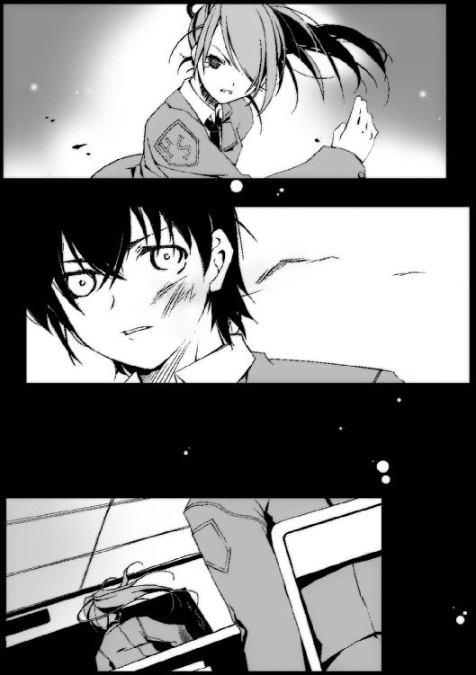

| ムシウタ ｂｕｇ ２ｎｄ．夢囚われる戦姫 | |
| 岩井恭平 | |
| KADOKAWA / 角川書店 (2014) | |
ムシウタｂｕｇ
２ｎｄ．夢囚われる戦姫
岩井恭平

角川スニーカー文庫
本作品の全部または一部を無断で複製、転載、配信、送信したり、ホームページ上に転載することを禁止します。また、本作品の内容を無断で改変、改ざん等を行うことも禁止します。
本作品購入時にご承諾いただいた規約により、有償・無償にかかわらず本作品を第三者に譲渡することはできません。
本作品を示すサムネイルなどのイメージ画像は、再ダウンロード時に予告なく変更される場合があります。
本作品は縦書きでレイアウトされています。
また、ご覧になるリーディングシステムにより、表示の差が認められることがあります。
満月が、浮かんでいた。
数時間前まで降っていた雨が噓のようだ。星空に浮かび上がったそれは、魔力めいた魅力で彼女の目を引きつけた。こんな夜に逝くのなら悪くない──そう思ってしまうほどに。
ぽつり、と丸い月の中心に影が生まれた。
銀光を放つ、一匹のモルフォチョウだ。
モルフォチョウはゆっくりと地上へと舞い降り、やがて彼女が握った杖にとまる。モルフォチョウの躰が変形し、触手となって杖、そして彼女の体と一体化していく。弱った自分の肉体に力が漲っていくのが分かる。
──アンタは独りで死ぬのが怖くて、これまで何人も道連れにしてきたっていうの？
その声に、彼女は満月から地上へと視線を移した。
モルフォチョウと同化した彼女を、数人の男女が取り囲んでいた。それぞれ形の異なる〝虫〟を従えている。
声を発したのは、その中の一人。彼女と同年代くらいの、だが彼女とは対照的に生気に満ちた顔つきの少女だ。傍らに小さな〝虫〟が見えた。ごつごつとした体殻に七つの赤い斑点が浮かんだ、天道虫にも似た〝虫〟だ。
──私には、時間がないの......。
彼女の唇が、勝手に動いていた。モルフォチョウと同化した槍が、威嚇するように強烈な光を発する。彼女を包囲している虫憑きたちが、じりっと後退った。
──邪魔をするなら全員、ここで殺すだけ。今までそうしてきたように......。
言いかけた彼女の膝から、急に力が抜ける。
〝虫〟と同化して得た力、それ以上に抗いようのない脱力感が彼女を襲っていた。
とっさに壁に手をつき、体を支える。鏡のように満月を映した水面に、苦しげに顔を歪めた自分の顔がはっきりと浮かんでいた。
そこに映し出されていた顔は、彼女──一之黒亜梨子という少女ではなかった。
驚愕に目を見開く自分の顔。
それが誰であるか、彼女は知っていた。
花城摩理。
水面に浮かんだ自分の顔が、微笑した。
──亜梨子......私のお願い、聞いてくれるわよね？
亜梨子ではない、亜梨子。水面に映し出された摩理が、そう言ったような気がした。
障子の外から、まぶしい朝日と鳥のさえずりが飛び込んでいた。
「......」
亜梨子は、布団の中から上半身を起こしていた。寝グセでめいっぱい暴れた髪を、無造作に搔きむしる。
「......ヘンな夢」
今日は、日曜日。
同居人の少年とともに、ある場所へ行く日だった。
１
「ぜったいに後悔するぞ。来なきゃ良かったってな」
横を歩く少年が、ため息混じりに言った。
彼の名は、薬屋大助。亜梨子と同い年であり、ホルス聖城学園中等部に通う同級生でもある。髪形、顔つきともにこれといった特徴はなく、私服姿でもまわりの風景にとけ込んでしまっている。唯一、頰に貼ったバンソウコウだけが彼の個性を主張していた。
「なによ、後悔って。おどかそうったって、ムダですからね」
一方、亜梨子は、周囲から目立つとよく言われる。長い髪を後頭部でしばり、オーダーメイドのコートに身を包んでいる。小柄なわりにやけに大きな態度のせいで、どこにいてもすぐに分かるそうだ。
亜梨子たちの頭上を、季節はずれの蝶々が舞っていた。鮮やかに輝く羽をもつモルフォチョウである。
二人が歩いているのは、ごくふつうの住宅街だった。目的地は赤牧市の郊外にあるのか、どんどん街の中心から離れていく。
ウキウキとした表情の亜梨子とは対照的に、大助の顔は陰鬱だった。
「一刻も早く花城摩理の調査をすすめるために、オレの代わりの監視者まで手配してあったのに......ワガママもいい加減にしてくれ」
「特別環境保全事務局......虫憑きを捕まえるための秘密機関。その秘密基地に乗り込もうってのよ！ そんなチャンスを見逃せるわけないじゃない！」
「頼むから、よけいな騒ぎは起こさないでくれよ。それが条件で連れて行くんだからな」
「分かってるわよ、しつこいわね。......で、急な任務ってなんなの？ それのために、今日は私の監視からはずれるはずだったんでしょう？」
亜梨子は目を輝かせ、大助を見る。彼は苦り切った顔で、また重いため息をついた。
大助が亜梨子とともに住んでいるのには、理由があった。
この一見、どこにでもいるごくふつうの中学生、薬屋大助と一之黒亜梨子が出会ったのは今から一月ほど前のことだ。
〝虫〟──人に寄生し、宿主の希望や夢といったものを喰い育っていく奇妙な存在。いつからか人々の間でまことしやかに囁かれ、現在では〝虫〟に寄生された人間が虫憑きと呼ばれ差別されるまでに至っている。
公表では存在しないとされているが、亜梨子は〝虫〟が実在することを知っていた。
今、亜梨子の頭上を舞うモルフォチョウこそ、正真正銘の〝虫〟だからである。
モルフォチョウの本来の宿主であり、亜梨子の親友だった少女、花城摩理。一年ほど前に病で宿主を失ったモルフォチョウは姿を消さず、今度は亜梨子につき従うようになっていた。モルフォチョウが亜梨子につきまとう理由、そして摩理の遺志を知るべく、亜梨子は他の虫憑きをさがしていた。
亜梨子は、ようやく摩理以外の虫憑きを見つけた。だがそこへ割って入ったのが薬屋大助だった。彼は虫憑きを公表通り〝いなかったもの〟として捕獲・隔離するための政府機関、特別環境保全事務局──通称、特環の局員だという。虫憑きを捕獲した大助はそのまま、〝異分子〟たる亜梨子の監視役として常にそばにいることとなった。
「捕獲した虫憑きを、説得しに行くんだよ」
前を向いて歩きながら、大助が言う。
「説得......つまり、特環に加わるように説得するってこと？ 寧子さんの時みたいに？」
「ああ」
寧子というのは、先日出会った虫憑きの少女である。大助が捕獲し、本来ならばその場で〝虫〟を殺すはずだった。だが寧子は特環に協力することを条件にそれを免れたのだ。
「ふうん。でも、どうしてわざわざ大助が行くのよ。他の人じゃダメなの？」
「目には目を、化け物には化け物をってことだろ」
「化け物......？」
大助はそれきり、黙り込んでしまう。
二人が足を止めたのは三階建ての白い建物の前だった。錆びた柵に、薄汚れたプレートが取り付けられている。
「赤牧市民俗資料館？」
プレートに書かれた文字を読み、つづいて建物を見上げる。デザインも何もない、ただの長方形でしかない建築物である。
「あ、ちょっと、大助......！」
大助が開け放たれた門を過ぎ、敷地に入る。亜梨子は慌てて少年を追いかける。
手押しの入り口を開け、中に入る。
階段、エレベータ、受付用らしき壁に開いた窓ガラス、そして奥の部屋へと続く通路が見えた。無人のように見えたフロアだが、ちょうど奥の通路から人影が現れた。
職員だろうか、スーツを着た壮年の女だ。
「ひっ......！」
思わず出た悲鳴だったのだろう。亜梨子たちの姿を見るなり、女性が身を竦ませた。
その様を見て、亜梨子は理解した。
──この人、大助が虫憑きだってことを知ってる......！
大助が一瞥すると、女はすぐに奥へと引き返していった。
「ねえ、今の人......」
「ここの連絡員だよ」
エレベータのボタンを押しながら、大助が皮肉げな笑みを浮かべた。
「交代の時間だったんだろうけど、運が悪かったな。いつもは防弾性の扉の向こうで、モニタを監視してるだけで絶対にオレたちとは接触しないようにしてるのに」
「連絡員？ モニタ？」
「気づかなかったか？ 庭と、それに建物の中も監視カメラでいっぱいだ」
言葉を失う亜梨子。エレベータが開いた。
エレベータに乗り込むとすぐに、大助がシャツの中へと手を伸ばした。背中に隠していたゴーグルを顔に装着する。
特環の備品だというゴーグルは、大助の顔をすっぽり覆うほど大きい。機械的な表面に、赤い光点が浮かんだ。
「ちなみに、このエレベータも何かあればすぐにガスが出る仕組みになってるそうだ。ホントかどうか知らないけどな」
「ガ、ガス......？」
「ここからは、俺の名前を呼ぶなよ。監視班は特環の中でも本名は明かさない」
エレベータが動き出す。
──下に、降りてるの？
重力のかかりかたが、上昇するそれではないことに気づく。しかし表示ランプは、一階から三階までの三つしかない。
黙り込む亜梨子を見て、大助が鼻で笑う。
「はっ、もう怖じ気づいたのかよ。普段は強がってるぶん、ヘコむのも早い──」
「亜梨子ファイナルアタック」
「......！」
大助が、亜梨子に蹴られたスネをおさえてうずくまる。
どれだけ降下を続けただろう。音もなく、エレベータの扉が開いた。
目の前にあったのは、大きな階段だった。
階段を下りていくと、先にあったのは暗闇へと続く空洞だった。空洞にはレールが敷かれ、分厚い装甲をした二両の列車が停止している。大助が手前の車両へと向かう。
「ねえ、誰もいないの？ 警備員とか」
「いるわけないだろ」
「どうしてよ」
「誰だって、虫憑きなんかに近づきたくはないさ。たとえ仕事でもな」
眉根を寄せる亜梨子の目の前で、再び大助のゴーグルが赤く点滅した。
列車の扉が開いた。
内部は、向かい合う二列のシートしかなかった。車両に乗り込むと、奥から息をのむ気配が伝わった。
車両内には、先客がいた。着ている服こそ違うものの、大助と同じようなゴーグルで顔を覆い隠した三人の男女だ。背格好からすると、亜梨子たちと同年代くらいだろう。
先客たちの誰もが、亜梨子たちを見て──いや、大助を見て驚いているようだった。
「あ、アイツは......！」「どうして赤牧市に......」と囁く声が聞こえた。入り口近くのシートに座った亜梨子と大助から離れるように、車両の奥へと移動していく。
「ね、ねえ、大助......この人たちも」
「虫憑きだ」
車両が揺れ、ゆっくりと動き出す。
「建物の入り口にいた人みたいに、ふつうの人が虫憑きを見て怖がるのは分かるけど......どうしてこの人たちが、私たちを怖がるのよ。同じ虫憑きのはずなのに」
「ああ、同じだよ」
大助がニヤリと笑い、奥にいる虫憑きたちを見る。たったそれだけで奥の男女はビクリと肩を震わせ、視線をそらしてしまう。
「誰だろうと、化け物は怖いってことさ」
「......？」
大助が特別環境保全事務局という機関について、淡々と説明をする。
どうやら彼らにも管轄があり、赤牧市は中央本部という組織が管理しているそうだ。だが大助は本来はもっと東の都市、桜架市が管轄である東中央支部の所属らしい。さらに特環は虫憑きを危険度に応じてランク分けしており、大助はかなり上位に位置している。同じ虫憑きでも大助が恐れられているのは、そのせいだろうとのことである。
「なによ、大助。あなたって実は、それなりにスゴかったの？ 恵那や多賀子にベタベタされては赤くなってる姿からは、想像もできないけど」
「う、うるさいな」
「別管轄で、しかもわりと強いっぽい大助が、どうして私を監視してるのよ」
「知るかよ。こっちが聞きたいくらい──」
言いかけ、大助がハッとする。「言われてみれば、たしかにヘンだ。どうして......」とうつむいて考え出してしまう。
車両が停止した。
「着いたの？ いったいどこなのよ、ここは......」
「赤牧市のどこかの地下深く。それ以外は知らない。地上につながってるのはオレたちが通ってきた通路と、職員専用の出入り口。それと空調用の通気孔くらいだな。......それはそうと」
大助が亜梨子の顔をじっと見つめ、言う。
「もう一度言うけど、覚悟しろよ。ついてきたことを絶対、後悔するからな」
「の、のぞむところよ！」
言い放ち、亜梨子は車両を降りた。
２
車両から降りるなり、亜梨子は大助と別々の通路へ通された。
一定間隔で設置された照明が、金属製の壁に反射していた。亜梨子が入ってきた入り口の他には扉が一つもない長い通路である。
『前に進み、壁の前で停止してください』
どこからか、機械的な女性の声が聞こえた。
言われるがまま、亜梨子は歩いていく。天井に設置された小さな監視カメラのレンズが、亜梨子を追ってゆっくりと動く。
行き止まりで、亜梨子は立ち止まる。取っ手もボタンもない、ただの壁に見えた。
『脈拍、呼吸数ともに正常。指示があるまでエントランスルームにて待機してください』
壁が横に滑ると、小さな密室が現れた。
亜梨子が入ってきたものと同じ型の扉がもう一つ、それに大きな扉と三カ所に出入り口があった。壁際にあるお粗末なシートには、布をつなぎ合わせただけの薄着を着た人物が数人、座っていた。
また、大きな扉の前には二人の人物がいた。やけにベルトの多いロングコート、顔を覆う大きなゴーグル──どちらも大助が任務の時に着けていたものと似ているが、色は白い。
「シートに座って順番を待て」
白装束が、亜梨子に向かって言った。
命令口調に対し、亜梨子はムッとする。だが大助の「おとなしくしてろよ」という言葉を思い出し、シートにつく。
「ねえ、ここがエントランスルームなの？ 順番ってなんのことよ」
「黙ってろ」
亜梨子の問いかけを、白ずくめの人物が切り捨てる。亜梨子の眉が、ピクリと動く。
「ガマンよ、ガマン......この苛立ちは、あとで大助にぶつければいいのよ......」
『セイフティネックの点検、調整のため、被験体２５８７号が入室します』
亜梨子が入ってきたものとは別の、小さな扉が開いた。
「......」
亜梨子は、その光景に目を奪われていた。
彼女だけではない。エントランスルームにいる全員が──番人らしき白装束たちすらも開いた扉に見入っていた。
現れたのは、薄着に身を包んだ少女だった。
亜梨子はこれまで、これほど美しい少女を見たことがなかった。
歳は亜梨子とちょうど同じくらいだろう。整った顔立ちはもちろんだが、何よりもその力強い意志、強烈な存在感を秘めた双眸が、亜梨子に衝撃を与えていた。
だが頭のどこかで、亜梨子はひっかかるものをおぼえた。目の前の少女に、見覚えがあるような気がしたのだ。
少女が無表情に部屋に脚を踏み入れた。堂々とシートに近づく少女の首には、銀色のチェーンが巻かれていた。その一部に繫がった金属のプレートの表面に、赤い光点が点滅している。
また、少女の両手は手枷がはめられていた。硬い光を放つそれを、長いワイヤで繫いでいる。普通に歩くには支障がないだろうが、両手を大きく拡げることはできないだろう。
少女の美貌と、まるで囚人のような出で立ち。そのアンバランスささえも、浮世離れした少女の美しさをさらに際だたせていた。
少女が、亜梨子のとなりに座った。彼女がシートに座ってからも、亜梨子の目は離れなかった。少女が亜梨子を見た。
「......」
二人の視線が、間近で交錯する。
「......なによ、あたしの顔になにかついてる？」
亜梨子が力いっぱい凝視していたせいだろう。少女が顔をひきつらせた。それまで纏っていた近寄りがたい雰囲気が霧散する。
亜梨子はまじまじと少女を見る。
「顔はともかく......首輪と手錠がついてるわ」
「たしかに、ついてるわね」
「どうしてそんなものをつけてるの？」
亜梨子がたずねると、少女はなぜか驚いた顔をした。だがすぐにニヤリと笑う。少女には似合わないような庶民的な笑顔が、しかし彼女には何よりも似合っていた。
「あなた、ここに来るのはじめてね」
亜梨子は頷く。
『被験体５９８７号。セイフティネックを装着してください』
壁の一部に、空洞が生まれた。白装束が手を伸ばし、中からチェーンをとる。少女がつけているものと同じ首輪と手枷だった。
シートに座っていた一人が立ち、白ずくめによって首と手首に装着させられる。大きな扉が開き、向こうに待ちかまえていた別の白装束に連れられていく。
「これは、いわゆる彼らの安全装置ってやつよ。連中......特環から見て、だけど」
「安全装置？」
「遠隔操作で、いつでも電流が流れるようになってるのよ。ちょっとでも不審な動きを見せれば、いつでも電流を流して気絶させられるわけ。まあ、虫憑きに対する保険ね」
少女が首を傾げ、巻かれたチェーンを見せる。言葉の内容とは裏腹に、少女の表情は明るい。
「こうでもしないと、虫憑きなんかと同じ空間にいるのが怖いのよ。まったく、特環なんていってもただの臆病者の集まりだわ」
特環の虫憑きに対する扱いに嫌悪を抱くよりも、亜梨子は少女のめまぐるしい表情の変化に目を引きつけられていた。
講義をするように偉ぶっては、特環を嘲笑し、そして自分の考えに満足するように頷いてみせる。感情豊かで、それだけに怒った時は凄まじそうだと思った。
ふいに、少女が亜梨子を見た。
「ねえ。あなたの夢って、なに？」
「え？」
唐突に訊かれ、亜梨子はとまどう。
「イヤなら、話さなくてもいいけど......」
そう言って、少女が微笑む。
亜梨子の夢──。
花城摩理と出会い、大助と出会い、これまで何人もの虫憑きと出会ってきた。そのたびに亜梨子は彼らの夢と向かい合ってきた。
しかし今、はじめて自分自身の心の内をさぐり、すぐに答えが出ないことに気づく。
「私は......虫憑きじゃないから」
亜梨子は、言った。
少女がわずかに目を見開く。亜梨子もまた虫憑きだと思いこんでいたようだ。
「虫憑きだなんて、関係ナイ！ どんなことがしたい、どんなものが欲しい。そう思うことって、ステキだと思わない？」
人差し指を立て、楽しげな声で言う少女。場違いなほどまぶしい笑みを浮かべる少女に、亜梨子は半ば圧倒されていた。
「あ......あなたの夢は、なんなの？」
「あたし？ あたしの夢は......虫憑きの居場所を創りたいの」
「虫憑きの......居場所？」
「世間じゃ怖がられ、大事な人たちにも避けられて......〝虫〟なんていう得体の知れないモノにつきまとわれているけど、でも普通の人間と何も変わらないのよ。ううん、虫憑きのほうがよっぽど弱いと思う。ときに人を傷つけてしまうかもしれないけど、それ以上に虫憑きは傷ついてる......そんな虫憑きが心から笑える居場所を、あたしは創るの。少なくともこんな監視施設じゃない、本当の居場所」
少女の言葉は、澄んだ響きをもって静まりかえった部屋に染み渡っていた。シートに座る人々や、番人の白装束までも少女の紡ぎ出す言葉に聞き入っていた。
「キミたちも、そうでしょ？ 好きで同じ虫憑きを監視してるわけじゃないはずだわ」
少女が、番人たちに目を向ける。二人の白ずくめが唇を嚙んだのが分かった。
「あたしは必ず、そんな居場所を創るわ。そうしたら、今みたいに特環におびえることなんてなくなる。それまで、待っていてね」
明るく笑う少女に対し、白装束たちが動揺するのがはっきりと分かった。うつむいていた薄着の面々に、生気が満ちていく。
このコ......今までの虫憑きとは、違う──。
亜梨子もまた、少女の持つ魅力と存在感に圧倒されていた。ただの理想論ではない、確かな説得力が少女の言葉にはあった。
「とはいえ、そんなに簡単に実現できる夢じゃないことも分かってる」
ふう、と息をつき、少女が自らを拘束する手枷を見下ろす。
「この特環をはじめとして、虫憑きの邪魔をするものは多い......実際にあたしもこうして捕まって何もできずにいる。でも、必ず叶えてみせるわ。これからもずっと戦って、戦い続けて、あたしはいつか命を落とすことになるのかもしれない。でも......」
顔を上げた少女は、笑みを浮かべていた。
「きっと、あたしの願いは誰かに繫がってくれる。ねえ、こう思わない？ 誰の夢も、どこかできっと繫がってるんだって」
嬉しそうに言って、シートの上で足をぶらつかせる。その仕種は部屋に入ってきた時とは違い、少女の幼さがにじみ出ていた。
「ああ、それともう一つあったっけ。あたしがしたいコト」
思い出したように、少女が言う。
「〝虫〟って何なのか、あたしは知りたい。どうして〝虫〟は存在し、虫憑きの夢を喰っていくのか」
亜梨子はハッとした。
「私も──」
思わず少女の手をつかむ。
「私も、同じだわ！ 〝虫〟のことが、知りたい......どうして虫憑きが生まれるのか。それにどうして──」
摩理は虫憑きになったのか──そう言おうとして口をつぐむ。その先を言っても、少女には何のことか分からないと思ったからだ。
少女が悪戯っぽい笑みを浮かべた。
「じゃあ、さがしにいこっか？ あたしたち、二人で」
「......え？」
「なんて、ね」
自分の立場を思い出したのか、少女が寂しげに嘆息する。だが握られた自分の手を見る表情は、嬉しそうだった。
「さっきも言ったけど、それは簡単なことじゃないのよ。特環やそのほかにも、敵は多い......ねえ、あなたは戦う覚悟がある？」
亜梨子は黙り込む。
戦う覚悟──そう、摩理の夢を追いかけるには、その覚悟が必要なのだろう。
一年間、亜梨子は摩理の遺志を探し続けていた。何も語らずにこの世を去った親友の、本当の思いを知るために。そして大助に出会うまで何一つ手がかりをつかめなかった悔しい日々を、亜梨子は決して忘れない。
亜梨子は、少女の視線を見つめ返す。
「負けないわ。誰にも、他の何に対しても」
「オーケイ、いい度胸だわ」
ニコリと笑い、少女が亜梨子の頰にピンク色の唇を寄せる。ドキリとする亜梨子の耳元で、少女が小声で囁いた。
「〝虫〟のことが知りたいのなら、〝ハンター〟をさがしなさい」
眉をひそめる亜梨子の間近で、少女が言う。
「アイツは、〝虫〟のことを......ううん、もっと深いところまで知っているみたいだった。でも、気をつけてね。あたしはアイツのせいで、こんなところに閉じこめられ──」
少女の言葉を最後まで聞くことは、かなわなかった。
『ゲスト番号19、セイフティネックを装着してください』
白装束が亜梨子に立つよう促す。首にチェーンを巻きつけられるが、手枷まではつけられないようだ。亜梨子は少女を振り返る。
「ね、ねえ、今のはどういう......」
「あなたとは、もう二度と会えないかもね。でも──」
少女が、直角にした人差し指と親指を亜梨子に向ける。ウィンクをするように片目を閉じた姿は、画架を前にした絵描きのようだ。
「もしまた会えた時は......最高の夢を、あたしにきかせてくれるわよね？」
亜梨子は、笑みを浮かべた。
「当然よ。私を誰だと思ってるの？」
二人の笑みが交錯し、それぞれの歩む方向に向かって別れた。
３
「だから、言っただろ？ ぜったいに後悔するって」
数十分ぶりに再会した大助が、心から気の毒そうに言った。
「くっ......」
亜梨子は頰を赤く染め、言葉に詰まる。
不思議な魅力を持つ少女と別れた後、亜梨子はまず衣服を脱がされた。
やたらと熱いシャワーがほとばしる通路で消毒されたのち、金属探知器やレントゲン室を通過し、ようやく白衣を着た一般人物と対面した。簡単な健康診断の後、大助や他の虫憑きたちが待つフロアへ放り出された。
過度ともいえる厳重なチェックは、まだ納得がいく。なにしろ相手は得体の知れない〝虫〟に取り憑かれた人々なのだ。
だが、どうしても腑に落ちないことがあった。シャワー室を抜けたあとに着せられた、施設内で着用を定められている衣服である。
アンダーシャツとスーツでセットになったそれは、体のラインがはっきりと分かるタイツのような作りになっているのだ。
「今からでも遅くないぞ。引き返したほうがいいんじゃないか？」
いつになく優しげな口調の大助。彼の視線がチラリと下がり、身体の線が浮き上がった亜梨子の胸元へと向けられる。
「大きなお世話よっ！」
殴り飛ばしてやりたいが、今は亜梨子の腕はみずからの胸を覆っていた。
「私は何も恥ずかしくないわよ！ そうよ、これからなんだから......これから......！」
「わ、わかった、悪い！ だから泣くな......な？」
ちょっとだけ歪んだ視界で、「泣いてないわよ！」と大助の足を蹴り飛ばす。
セイフティネックという首輪は、正式な局員以外の虫憑きにつけられるものなのだという。大助の首にそれはなかった。
大助に連れられ、亜梨子は通路へ出た。待ち合わせをしている人物がいるのだという。
それまでの人気のなさが噓のように、通路には大勢の人々がいた。だがその多くは白衣を着た大人たちで、亜梨子たちと同じ黒服を着た人物は少ない。
壁や天井はアスファルトではなく、なにかの金属で覆われているようだ。しかも通路全域にわたって分厚いガラスで仕切られており、それぞれの部屋の内部が見て取れる。思っていたよりも陰気な感じはなく、広い通路や部屋のすべてに明るい照明が行き届いている。
「意外と人が大勢いるのね」
「ここは入り口に近いから、特にな。八層に分かれた階のうち、六層目のここは虫憑きの検査や管理をしてる。ここから上二層は実験施設で、下二層は捕獲した虫憑きの収容施設や訓練所になってる。一、二、三層目は虫憑きの局員は立ち入り禁止だ」
すれ違う人々が皆、大助の姿を見るなりぎょっとして道を空けていく。
「ずいぶん嫌われてるみたいね......友達とか知り合いはいないの？」
「味方なんて必要ない」
大助があっさりと言い放つ。
「どこにいるんだ、アイツは。六層目で待ってるとしか聞いてないぞ」
ぶつぶつと呟きながら、大助はさっさと先へ進み、通路の角を曲がる。
「あ、待ちなさい」
慌ててあとを追いかける亜梨子。
「なによ、やっぱり知り合いがいるんじゃない。私にも、紹介しなさいよ。私も虫憑きのことが知りたい──」
角を曲がり、亜梨子は立ちつくした。
大助の姿がこつぜんと消えていた。
「あら？ どこに行ったの？」
「知り合い？ とびっきりカッコいいのがいるよ。そのうえ強くて優しい、最高の男だ」
大助の声がした。だが、姿は見えない。亜梨子は周囲を見回す。
「どこに隠れたのよ。ふざけてないで出てきなさい」
「でも紹介するのは気が引けるな。キミを彼にとられたら、オレは生きていけないよ」
「キモっ！......うすらコワいこと言ってないでさっさと──」
両手で自分の体を抱きしめる亜梨子の頭上から、うめき声が聞こえた。「うーっ！ うーっ！」と何かがもだえる声だ。
天井を見て、亜梨子は絶句する。
「やあ、どうもはじめまして」
上下逆さまになった少年が、にっこりと微笑んでいた。天井をはしるパイプに両足をかけ、両腕で大助を拘束している。どのようなマジックを使ったのか、大助の両手は後ろ手に縛られ、口を押さえられていた。
「あだっ！」
解放された大助が床に落ちる。天井にぶら下がった少年が、けらけらと笑う。
「あはは、受け身くらいとれよ？ なまってるんじゃないのか、お前」
「両手が縛られてるのに、どうしろってんだ！ はやくほどけよ、〝アキ〟！ 人の声色をマネて気色悪いこと言いやがって！」
「へいへい」
少年が、音もなく床へ降り立つ。だが縄をほどこうとはせず、じっと大助を見下ろす。
「しかし、ホント無様だな......少しは自分の立場ってものを自覚しろよ？ お前はここにいる連中すべてに恐れられる──」
「ほどけって言ってるだろ！」
わめく大助を無視し、〝アキ〟と呼ばれた少年が亜梨子に向き直る。
切れ長の目にかかる脱色した長髪が印象的な少年だった。歳は亜梨子の一つか二つほど上だろう。彼は監視班とやらではないのだろう、ゴーグルを装着してはいない。
状況を察するに、亜梨子が目を離した一瞬のスキに大助を拘束したようだ。信じられない離れ業である。さらに両腕だけで大助を持ち上げる筋力は、外見からは想像できない。
「戦闘班火種五号局員〝アキ〟だ。よろしく、〝槍型〟の人」
少年、〝アキ〟が握手を求める。
亜梨子は思わず笑みを浮かべた。
最初のエントランスルームで出会った、不思議な少女。
そしてこの奇妙な、しかし人なつっこい笑顔の少年。
それぞれ違う立場なのだろう。だがここには、明るい笑みを浮かべる虫憑きがいる──。
亜梨子は少年の手を固く握りかえした。
「なんだか、あなたとは仲良くなれそうだわ」
「あっはっは、奇遇だな、俺もだよ。おい、俺たちが仲良くなっても妬くなよ、お前」
「いいからほどけっ！」
二人の足元で、大助が絶叫した。
４
「説明は受けてる。やっかいなヤツらしいな」
「力そのものは、俺と同じくらいだ。号指定するなら、火種六号ってところだろうな」
「なんだ、たいしたことないな」
「一年前、捕まえた当時は号指定するほどじゃなかった。そこらの無指定のザコと変わらなかったんだ」
「今までにない成長速度ってわけか......」
「それが、お前に説得を要請した理由の一つだろう。実験班もすぐに欠落者にするのは惜しいと見えるね。どうしても局員として働かせたいらしい」
「もう一つは、例の理由だな。まあ、いいさ。手はずは考えてある」
「手はず？」
「......それにしても、たかが収容者ごときの説得に失敗するなんて、〝アキ〟。お前はあいかわらず甘すぎるんだよ。相手に同情するなんて──」
「彼女は、他の収容者とは違うんだ......まあ、お前も実際に会ってみれば分かる。いくらお前でも、今回ばかりは──」
ユニークな挨拶とは一転し、通路を歩き出すなり少年二人の表情が豹変した。
神妙な顔つきをした大助と〝アキ〟が、歩調も早く通路を突き進んでいく。
奥に進むにつれ、通路の人影が減っていることに亜梨子は気づいた。
唐突に、〝アキ〟が亜梨子を振り返った。
「本当に彼女を連れて行くのか？」
「なによ。私がついていっちゃダメなの？」
「今のうちに、見せておいたほうがいい」
大助は前方を見据えたまま、亜梨子とは目を合わせない。亜梨子は眉をひそめる。
やがて三人は行き止まりへたどり着いた。
二つのエレベータ搭乗口があった。大助は左側の搭乗口に立ち、亜梨子は〝アキ〟に腕をひかれて右側の搭乗口の前に立つ。
「いっしょに行かないの？」
「七層目の第三訓練所は、ホールを超硬化ガラスで仕切ってある。手はずがどうとか言ってたけど、お前......何をするつもりだ？」
「はじまれば、わかる」
亜梨子の問いを、二人の少年は完全に無視した。二つの搭乗口が、同時に開く。
乗り込む直前、大助が亜梨子を見た。
「......？」
亜梨子が首をかしげると同時に、彼は視線をそらした。となりの搭乗口へと姿を消す。〝アキ〟と二人で右の搭乗口に乗る。エレベータがゆっくりと動き出す。
「ねえ、アイツは虫憑きの説得に来ただけじゃないの？ 装備ってなんのこと？」
「万が一の危険に備えてのことだろう。俺はアイツを連れて行くよう命令されただけで、詳しい内容までは聞いてない。まあ、いくらアイツでもそう無茶はしないさ」
エレベータはすぐに停止した。扉が開き、長い通路が現れる。二人は並んで歩き出す。
亜梨子は思っていた疑問を口にした。
「〝アキ〟は大──アイツのことを怖がらないのね。他の誰もが避けてるのに」
「ん？ まあなぁ、アイツとは戦友というか腐れ縁というか、長いつきあいだからな。それにいくら強いったって、アイツもただのガキに変わりはない」
「へえ、そんなに強いのね、アイツ」
軽い口調で相づちをうつ亜梨子。〝アキ〟が、彼女を凝視する。
「なによ。人をオバケかなにかみたいに見て」
「いや......まさかキミ、アイツのこと何も知らないでいっしょにいるわけ？」
「知ってるわよ。まず、寝起きは最悪ね。あとかわいい女の子には弱いのよ。つまりムッツリスケベね」
「そ、そうなんだ。それは......知らなかった」
「じゃあ、次はそっちの番ね。あなたの知ってるアイツについて、教えなさい」
きっぱりと命令する亜梨子に対し、〝アキ〟が渋面になった。言ってもいいものかどうか迷っている様子である。
「教えなさい」
繰り返す。少年が迷いながらも口を開く。
「アイツは、最強の虫憑きだよ」
「......」
「少なくとも周りはそう見てるし、実際にアイツは異常なほど強い。これまでに特環を何度も救ってるのは、確かだ。なによりも二年前の、あの事件」
「あの事件？」
「小学生の女の子だった。虫憑きだったその子を、特環は捕獲しようとした。だがその子は、強すぎたんだ。それまで特環が出会ったことのない、想像すらしたことないほど強かった。特環の局員は数十人も欠落者にされた。当時の特環の規模からすれば、ほとんど壊滅的なダメージを受けたんだ。たった一人の女の子......〝ふゆほたる〟によって」
亜梨子は目を見開いた。
〝ふゆほたる〟──それは大助がうなされていた時に呟いた名前だ。彼は亜梨子に対し、二度とその名前を口にするなと言った。
「最悪なことに、同じタイミングで特環の内部で反乱が起きた。東中央支部が中央本部を乗っ取ろうとしたんだ。だが、それは失敗に終わった。......クーデターに荷担した局員もまた、ほぼ全員が欠落者にされたんだ。それもまた、たった一人の虫憑きの手で」
亜梨子は、〝アキ〟を凝視する。
「それをしたのが、アイツだ。クーデターを鎮圧し、同時に〝ふゆほたる〟の捕獲にも成功した。ぜんぶ、アイツ一人で為し遂げたんだ。ともすれば国全体に関わる事態を。俺も〝ふゆほたる〟捕獲の任務に加わった一人だけど、何もできなかった。悪夢みたいな強さをもった女の子だった。......でもアイツは、その女の子よりも強かったわけだ」
少年の横顔に、思い出したように恐怖の影がよぎる。
「はじめて会った時の、アイツの顔はよくおぼえてる。まるで世界すべてを敵にしてるみたいだった。アイツが同じ虫憑きからも怖がられるのは、なにも強いからってだけじゃない。アイツは敵を倒すことをこれっぽっちもためらわない」
少年が厳しい表情を一変させ、笑う。
「でも、さっきも言っただろ？ そんなアイツも普段はそこらへんにいるガキと変わらない。キミだって言ってたみたいにな。俺はアイツがなぜあれだけ容赦なくなれるのか知りたくてつきまとってるけど......最近になって、迷いはじめてる。俺には永遠に分からないかもしれない。アイツはどうして......彼女みたいな虫憑きだっているのに」
「〝彼女〟？」
亜梨子が問い返すと、〝アキ〟は口をつぐんだ。ごまかすように笑みを浮かべる。
「まあ、とにかく俺なんかはアイツのことを理解できないのかもしれないな。もしかしたら本当に、アイツは化け物──」
「その先を言ったら、あなたを軽蔑するわ」
無意識に〝アキ〟を睨みつけている自分に気づく。
──誰だろうと、化け物は怖いってことさ。
そう言った時の大助を、思い出す。皮肉げな笑みで表情を隠した少年は、亜梨子の目にはその言葉通りには見えなかった。
「......わるい、失言だった。取り消すよ」
両手を上げ、苦笑いを浮かべる〝アキ〟。
「そうだな、俺には難しくても、アイツと同じくらい──そう、同じくらい強いヤツだったら、分かってやれるかもしれない」
「......」
「キミも、かなり強いらしいね。真正面から攻撃を受け止められたのははじめてだって、アイツは言ってた」
「まあ、それほどでもあるわね」
「キミならもしかしたら......アイツを理解してやれるのかもしれないな」
独り言のように呟く少年の横顔は、何か思い詰めているようにも見えた。
通路の終着点に到着した。
二人の前で、扉が開く。
広いフロアだった。機械が並んだ空間に、モニタがいくつも備えつけられている。大勢の白衣を着た人々が、それらを凝視していた。フロアの奥は大きなガラス張りになっているのが分かる。
白衣の人物たちが、亜梨子たちを振り返った。その視線が、亜梨子を食い入るように凝視している。
「な、なによ、こいつら......」
「キミに興味津々なのさ。この部屋はデータを取るための監視室で、こいつらは観測者だ。連中の目には、俺たち虫憑きはモルモットとしてしか映ってない」
小声で、〝アキ〟が囁く。
「火種五号局員〝アキ〟、配置につけ」
「はい」
命令のままに、〝アキ〟がガラス張りになった奥へと向かう。亜梨子も彼にならう。
「キミはそこで、おとなしく座っててくれ。なにがあってもだよ」
「なにがあってもって......」
ガラスの向こうは、亜梨子が通う学園の体育館くらいはある広いホールだった。〝アキ〟の言っていた超硬化ガラスだろう、ホールの中央を透明な壁で仕切っている。奥のほうは暗がりになっていてよく見えない。
「向こうからは、こっちは見えないようになってる。そっちにある扉からもホールに入れるが、一度も使われたことはないね」
〝アキ〟が言った時だった。
ホールの手前、壁に空いた空洞から一人の人物が姿を現した。
大助だ。見覚えのある漆黒のコートを身に纏い、右手には拳銃をぶらさげている。
大助が硬化ガラスの前に立つと、スピーカを通した女の声が響いた。
『被験体２５８７号を訓練所に投入します』
甲高い警報が鳴り響いた。ビクリ、と亜梨子は身をこわばらせる。
警報が止み、不気味な余韻が場を包んだ。
──一体、なにが起こるっていうの......？
戦慄する亜梨子の視界で、変化が起きた。
照明の届かない、ホールの奥。
暗闇の向こうから、白い足が現れたのだ。
「......！」
亜梨子の呼吸が一瞬、止まった。
照明の前に立ったのは、薄着に身を包んだ少女だった。首にチェーンを巻き、両手を拘束具で繫がれている。
まぎれもない、亜梨子がエントランスルームで出会った少女だった。
「あの子......！」
少女は、しかし初めて出会ったときとは別人のように鋭い目つきをしていた。凄まじいまでの感情を押し殺した少女の双眸を見て、亜梨子は背筋を凍らせる。
少女が、微笑した。硬化ガラスを挟んで対峙する大助に向けられた笑みだった。
『何度現れても、あたしの意志は変わらないわよ。あたしはアンタたち、特環をぜったいに許さない......！』
その声の冷たさに、亜梨子はぞっとする。いったいどれほどの怒りを込めれば、ここまで冷徹な声を放てるのだろう。
『虫憑きというだけで、なんの罪もない人々を捕まえてこんなところに閉じこめて......それだけじゃ飽きたらず、無理矢理に彼らを使って同じ虫憑きを捕まえようとする。あたしに言わせれば、〝虫〟なんかよりもよほどアンタたちのほうが悪魔に見えるわ！』
向かい合った大助は、みじんも動じない。静かに少女を見つめている。
〝アキ〟が顔を歪める。
「これまで十人を超える局員が、一対一で説得に当たった。だがその誰もが失敗に終わった。なぜなら......」
ホールにいる大助が、こちらを振り返った。あちらからは見えないはずの亜梨子たちに向かって、くいっと顎を上げる。
『了解。他の収容者を投入します』
「なっ......？」
〝アキ〟が驚きの声を上げる。
ガラスの前に立つ少女の背後から、同じ薄着姿の人々が現れた。
数十人にも及ぶ少年少女たちだ。皆、首輪と手枷をつけている。彼らは大助と向かい合う少女のもとへ集っていく。
「この人数......ほとんどの収容者をここに集めてるのか？ なにをするつもりだ、お前！」
予測していなかった事態なのだろう、〝アキ〟が色めき立つ。一方、白衣の人物たちは沈黙したまま状況を見守っている。
『みんな......！』
少女にとっても予想外だったのか、驚愕に目を見開いている。
『リナ......！』
『大丈夫か、リナ！』
『リナ！』
口々に叫び、少女のもとへ集まっていく少年少女たち。リナというのは、鋭い目つきの少女の名前だろうか？
「なに？ どうなってるの......？」
亜梨子は、となりの少年を見る。〝アキ〟はまだ驚愕しているようだったが、ホールを凝視したまま言う。
「こいつらは、特環が捕獲した虫憑きたちだ......リナが捕獲されてから一年の間に、いつの間にか彼女の周りに虫憑きが集まるようになっていた。局員の中にまで彼女の考えに賛同するヤツがいるくらいだ。おかげでリナに手荒なマネもできない。他の収容者全員の説得に影響を与えるからな」
その説明に、亜梨子はすぐに納得した。
リナとはじめて会った時に感じた、彼女の表情や言葉──そのすべてに、人を惹きつける何かがあった。
『なんのつもり？ あたしたちを皆まとめて説得しようとでもいうわけ？』
リナが、挑発的な笑みを大助に向ける。仲間を得て、リナも他の収容者もさらに反抗心を高めているようだった。
だが──。
『か、〝かっこう〟......？』
ふいに、リナの背後から声が上がった。
『〝かっこう〟......！ 〝かっこう〟だ！』
『ダメだ、リナ！ アイツは......！』
悲鳴にも似た声は伝染していき、ホールがたちまち恐慌状態に陥る。彼らの恐怖の眼差しは、他の誰でもなく大助をとらえていた。
「〝かっこう〟......？」
亜梨子は眉をひそめる。
『火種一号局員、〝かっこう〟。任務を実行しなさい』
命令の声が、ホールに響いた。
『了解』
返答したのは他の誰でもない、ゴーグルで素顔を隠した薬屋大助だった。亜梨子は驚く。
『リナ！』
『〝かっこう〟......！』
『リナ！』
『か、〝かっこう〟！』
二種類の悲鳴と怒号が飛びかうホールで、大助とリナが静かににらみ合っていた。
──一体なんなの、この二人は......！
亜梨子は、声を出すこともできなかった。
リナという不思議な少女と、普段とはまるでうって変わって冷酷な表情の大助。
まるで正反対の二人だった。
リナは同じ虫憑きに勇気を与えてくれる存在なのだろう。周りの少年少女たちの行動がそのことを物語っている。
だが一方の大助は、自分たちの夢を奪う殺戮者として彼らの目には映っているようだ。
与える虫憑きと、奪う虫憑き。
二極の相反する二人の虫憑きが、ガラスを挟んで向かい合う。
『なるほどね。アンタが、〝かっこう〟......噂はイヤというほど聞いてるわよ。最低最悪の虫憑きだってね！』
『......』
少女は怒りと敵意をむき出しにし、一方の大助はあいかわらずの無表情だ。
ふいに、大助が口を開いた。
『その最悪の虫憑きを、倒したくないか？』
ホールに渦巻いていた人々の声が、ピタリと止んだ。
『誰でもいい。俺に勝つことができたらお前ら全員、解放してやるぜ』
普段、学園に通っている時の大助と同一人物とは思えない、低い声だった。
静寂がホールを包んだ。驚きと疑いが入り交じったどよめきが起こる。
『そんな話をあたしたちが信じるとでも思ってるの？ 今まで閉じこめておいて......一体、何をたくらんでいるのよ』
『信じるも信じないも、お前らの勝手だ。やるのか？ やらないのか？』
大助の言葉に、リナたちが互いの顔を見合わせる。
「いったい何を考えてるんだ、アイツ......」
動揺は亜梨子たちがいるフロアにまで及んでいた。〝アキ〟が唸る。
意を決したように、リナが身構える。
『どうせ他に選択肢なんてないんでしょう。......いいわ、望むところよ。あたしが』
『ただし、リナ。お前以外のヤツだ』
『な......！ どうして──』
『わ、わかった......おれがやる』
リナに代わって手を挙げたのは、がっしりとした体つきをした短髪の少年だった。
数分後。
短髪の少年が、数人の局員に連れられ大助の前に立った。
『ほ、本当におれが勝ったら皆を解放してくれるんだな？』
同時に、亜梨子たちがいるフロアも緊張感を増していた。
「いざとなったら、いつでも収容者に電流を流せるようにしておけ」
白衣を着た年配の男が命令する。フロアの奥で何かの装置の前に座った人物が頷く。
「......」
〝アキ〟が厳しい顔で、ホールを睨む。
『ああ。だがその前に言っておく』
『......？』
『俺は手加減するつもりは、一切ない』
大助の言葉が、戦闘開始の合図だった。
どこからともなく緑色のかっこう虫が、大助の頭上に舞い降りた。かっこう虫は拳銃の上に着地した瞬間、躰を変形させる。触手と化したかっこう虫の躰が拳銃、そして大助の体と一体化していく。
短髪の少年も自らの〝虫〟を生み出した。細長い躰に白と黒の縞模様を浮き上がらせた、大きな〝虫〟だ。刃物のような翅と、異様に長い口器がかろうじて蚊に似ている。尖った口器の先端からは、緑色の液体が滴っていた。
先に動いたのは、少年の〝虫〟だった。翅を羽ばたかせたと思った瞬間、その巨軀が大助の頭上を飛び越えていた。
──速い......！
亜梨子の目には、蚊がいつの間に加速したのか分からなかった。
大助は拳銃を構えることもなく、床の上に立ちつくしている。その周りを、恐ろしい速度で巨大な蚊が飛び回る。
微動だにしない大助を見て、勝機を見いだしたのだろう。短髪の少年がニヤリと笑った。
「危ない......！」
思わず、亜梨子は叫んだ。
一瞬にして背後にまわった蚊が、大助の背中めがけて加速したのだ。
だが次の瞬間、大助が跳躍していた。人間離れした脚力で宙高く舞った大助が、空中で体を反転させる。蚊の鋭い口器が、紙一重で大助のコートをかすめた。
銃声とは思えない、重い砲撃音が響いた。
『ぐああっ！』
大助の拳銃から放たれた銃弾が、蚊の翅を撃ち抜いていた。
苦悶の声を上げ、床にひざをつく少年。──〝虫〟に受けたダメージは、宿主の精神を著しく奪うのである。
傷ついた蚊が壁に激突する。
地面に着地した大助が、悔しげに奥歯を嚙む少年に歩み寄る。──しかし大助は少年の横を通り過ぎ、蚊に向かって近づいていく。
再び砲撃音が響いた。
『がっ......あ......！』
銃弾が、蚊の脚を粉々に打ち砕いた。
『なっ......！』
「なっ......！」
リナと亜梨子、〝アキ〟の声が重なる。
『もう勝負はついたでしょう！ あたしたちの負けよ！ やめなさい！』
『次にやるヤツを決めておけよ』
ぞっとするほど冷たい声で、大助が言った。銃声が響きまた一本、蚊の脚が砕け散る。
『なん......ですって？』
『最後の一人になるまで、続ける。──リナ、お前が特環に協力を誓うまでな』
沈黙が、フロアとホールを支配した。
リナを振り返った大助は、笑っていたのだ。まるで目の前の〝虫〟をいたぶるのを楽しむかのように。
「〝かっこう〟......お前っ......！」
〝アキ〟が、ホールにいる大助を凝視していた。驚愕の表情に、じわじわと怒りの色が深まっていく。
──違う......。
亜梨子は、呆然と心中で唸った。
──こいつは、大助じゃない。こいつは......！
『......人間じゃないわ、アンタ......』
静寂を打ち破ったのは、底冷えするような低いリナの声だった。硬化ガラスにすがりつき、殺意をみなぎらせた目で大助を睨む。
『あたしが目的なら、あたし自身と戦えっ！ どうして関係のない人を巻き込むのよ、〝かっこう〟！ 〝かっこう〟っ！』
『関係がないわけじゃない。リナの後ろにいるお前らも、よく見ておけよ。ここにいるかぎり──この俺がいるかぎり、お前らに自由をやるつもりはないぜ。お前らに残された手段は服従しかないってことを教えてやる』
「おい、〝かっこう〟にやめるよう命令してくれ！ ここまでする必要はないだろう！」
〝アキ〟が白衣たちを振り返る。
「これまでは、予定通りだ。データの記録を続行する」
年長の白衣の男が冷静に言う。
「アンタらは......俺たち虫憑きをなんだと──」
『まだ分からないヤツは、前に出ろ。コイツの〝虫〟が完全にくたばる前にな』
砲撃音が続き、そのたびに蚊が傷つけられていく。少年の悲鳴が続く。
ホールは、完全なる恐怖に包まれていた。目の前で繰り広げられる惨劇に呆然とし、名乗り出るものは一人としていない。
『やめろっ！ やめなさい、〝かっこう〟！ 〝かっこう〟ぉぉっ！』
絶叫するリナの背後に、〝虫〟が生まれた。天道虫にも似た──そう喩えるには醜悪なゴツゴツとした体殻には、七つの赤い斑点が浮かんでいる。不気味にうごめく口器は、人の頭など一嚙みで砕いてしまいそうだ。
天道虫が、硬化ガラスに体当たりをかける。だがそれはビクともしなかった。
『ムダだ、それを壊せるのは特環でも俺くらいなものだからな。お前は〝虫〟をしまえ。さもないとセイフティネックを稼働させるぞ』
『どうしてそこまでして、アンタたちはっ......！ 同じ虫憑きなのにっ......！』
ガラスをかきむしるリナの爪から、血がにじんでいた。
──あたしの夢は......虫憑きの居場所を創りたいの。
そう言って微笑んだ少女が今、亜梨子の見ている前で泣き叫んでいた。その凄惨な光景に、亜梨子はただ呆然と立ちつくす。
「〝かっこう〟......！ お前、どうしてそこまで......！」
〝アキ〟もまた、ガラスにしがみついていた。怒り、疑問、そして寂しげな感情が入り交じった声だった。
「......」
亜梨子は、無言で機器を置いた金属棚の柵をつかむ。
彼女の頭上で、銀色の光が生まれた。モルフォチョウだ。
フロアに、動揺がひろがった。〝アキ〟が亜梨子を振り返る。
「な、なにをする気だ？」
「なにを、ですって......？」
押し殺した声で呟き、〝アキ〟を睨みつける。よほど怒りが顔に表れていたのか、〝アキ〟が怯んだ様子で後退る。
「こんなこと、許せるわけがないでしょう。どうしてここまでする必要があるの......！」
亜梨子の視界の中で、大助はまだ攻撃を続けていた。いつも近い距離にいたはずの彼の背中に、今は憎悪さえおぼえていた。
だが、モルフォチョウは頭上を舞うだけで変化しようとはしなかった。
亜梨子は、銀色の蝶々を見上げる。
──摩理......！
かつての親友、花城摩理に宿っていたはずのモルフォチョウ。その〝虫〟は今、亜梨子に託された。その真意はまだ分からないが、これまで亜梨子の身を危険から幾度となく守ってくれたことは確かだ。
──お願い、摩理......！
心の中で、叫ぶ。
だがモルフォチョウは、あくまで亜梨子の頭上を舞うだけだった。ぎりっ、ときしむほど奥歯を強くかみしめる。
『やめろ、〝かっこう〟！......おねがい、やめてぇっ！』
『協力を誓え！ お前ら全員だ！』
二人の虫憑きの叫びが、重なる。
「......っ！」
亜梨子はついに柵から手を離し、床を蹴った。
〝アキ〟が言っていた、ホールへとつながる扉の前に立つ。いくつかボタンが並んでいたが、亜梨子は手当たり次第に乱暴に叩く。
「おい、やめろ！......ゲストのセイフティネックを稼働させろ──」
「いや......彼女を行かせろ」
フロアに、低い声が響いた。
いつの間に移動していたのか、〝アキ〟がフロアの奥に立っていた。それがセイフティネックを作動するための機械なのだろう、装置の前に座る白衣の背後から言う。
「ネックを作動させようとしたら、俺の〝虫〟に攻撃させる。ドアを開けて、彼女を行かせるんだ」
装置を前にした白衣の全身に、無数の瑠璃色の塊がまとわりついていた。円盤のように滑らかな体殻の下に小さな脚が見える、葉虫にも似た〝虫〟だ。
「貴様......〝アキ〟！ こんなことをして、ただですむと思ってるのか！」
「能書きはいい。さっさと言うとおりにしろよ。脅しじゃないぜ。自分たちが虫憑きにどれだけ恨まれてるかくらい知ってるんだろ？」
亜梨子は〝アキ〟を見つめる。彼は苦しげに、耐えきれなくなったように顔を歪め、亜梨子を見つめ返す。
「彼女は......リナは、今まで敵だったはずの俺にも、いっしょに居場所をさがそうって言ってくれたんだ」
──彼女みたいな虫憑きだっているのに......。
──局員の中にまで彼女の考えに賛同するヤツがいるくらいだ。
〝アキ〟は、そう言っていた。あれは紛れもない、彼自身のことをさしていたのだ。
「それに俺は......アイツのことが分からなくなってきた。〝かっこう〟──俺はアイツを止めることすらできない。だから......」
ホールへつながる扉が、開いた。
亜梨子は身を翻した。扉をくぐり、薄暗い階段を駆け下りる。走る亜梨子の前方で、さらにもう一つの扉が開かれた。
ホールに飛び出した亜梨子と銀色のモルフォチョウに気づき、大助が振り返る。
「亜梨子......？」
ホールに、けたたましい警報が鳴り響く。
「......やめなさい......」
大声で叱咤したつもりだが、亜梨子の口から出たのは掠れた声でしかなかった。
薬屋大助という少年と出会い、短い間だが一つ屋根の下で暮らしてきた。任務と称して虫憑きを捕らえようとする彼の姿も、幾度か目にしてきた。
だが、それでも同じ学校に通う彼は、ごく普通の少年だった。亜梨子のワガママに振り回され、クラスメートの恵那や多賀子につきまとわれては照れていた。その姿こそ、本当の彼だと心のどこかで信じていた。
だが、それなのに──。
「こんなことは、やめなさいっ！」
瞳を潤ませ、亜梨子は叫んだ。
「どうしてこんな......こんな、ひどいことができるの？ その人は、あなたと同じ虫憑きなんでしょう！ それなのにっ......！」
眉をつり上げる亜梨子を、大助は無言で見つめていた。
二人の間に沈黙が落ち、耳が痛くなるような警報音だけが響いていた。
大助が、口を開いた。
「これが、俺の任務だ」
亜梨子の中で、何かが音をたてて切れた。
「大──」
叫ぼうとして、亜梨子は目を見開いた。
気配に気づいたのか、大助が勢いよく背後を振り返る。
気を失っていたものとばかり思っていた短髪の少年が、立ち上がっていた。脚を失い、傷ついた蚊が大助の背後から襲いかかる。
亜梨子に気をとられていた大助が、とっさに拳銃を構える。
砲撃音が響いた。
「あ......」
亜梨子の眼前で、蚊の躰が砕け散った。
短髪の少年の瞳から、完全に光が消える。がくりと膝をついた時には、少年の顔からは苦悶の表情すら消えていた。人形のように無感情の目が床を見つめる。
〝虫〟を失った虫憑きは、感情も意思もない欠落者になり──二度と元に戻ることはない。そのことは、亜梨子も知っていた。
亜梨子と大助が、呆然と床の上の少年を見下ろす。
その時だった。
「──ふ......あはは......」
笑い声が聞こえた。ぞっとするほど冷たい、底冷えするような声だ。
大助と亜梨子は、ガラスの向こうを見る。
リナが、うつむいていた。亡霊のように髪をたらした彼女の口許が、笑みの形に歪んでいる。
「なによ......最初から、彼を......あたしたちを欠落者にするつもりだったってわけ......？」
違う──。
亜梨子は首を横に振ろうとした。
大助は亜梨子に気をとられ、蚊の奇襲に気づかなかったのだ。
ホールを、激しい振動が揺るがした。
巨大な天道虫が、硬化ガラスめがけて突進していた。
「はっきりと分かったわ。あたしたちが取るべき手段は服従じゃないし、分かり合うことでもない。──戦うしかないのね」
リナが、顔を上げた。その双眸は怒りと憎悪で見開かれていた。
「それに、そのモルフォチョウ......あたしが忘れたとでも思ってるの？ アンタも──〝ハンター〟も、特環の仲間だったのね......」
大きな振動が、何度もホールを襲っていた。
「〝ハンター〟......？ 私が......？」
亜梨子は思わず呟く。
硬化ガラスに体当たりをする天道虫の躰が、徐々に大きくなっていた。
ピシッ、と何かがヒビ割れる音が響いた。
硬化ガラスに、大きな亀裂が走る。
「許せない......特別環境保全事務局......アンタらみんな、ぶっ潰してやるわ......」
少女が絶叫した。
「アンタたちみんな、ぶっ殺してやるっっ！」
天道虫が、巨大な翅を大きく拡げた。
「亜梨子！」
愕然と立ちつくす亜梨子の前に、大助が飛び込んだ。
爆発が起きた。──亜梨子が認識できたのは、ただそれだけだった。
視界が真っ白に染まる直前に見えたもの、ホールを分断する硬化ガラス、ホールを囲む壁、通路へと繫がる扉。そのすべてが歪み、消し飛んでいた。激しい衝撃に突き飛ばされ、前後左右の感覚が吹き飛ばされる。
天地を揺るがすような咆哮が、施設を突き抜けていた。
一瞬、気を失っていたのだろう。気がつくと亜梨子は、床に投げ出されていた。
「くっ......う......」
声が聞こえた。苦しげにあえぐ声だった。
「......え......？」
亜梨子は、顔を上げる。
苦しげに歪んだ大助の顔が間近に迫っていた。彼の顔面は、血で真っ赤に染まっていた。
亜梨子は、分厚いガラスの下敷きになっていた。硬化ガラスの破片だろう、本来ならばそれが激突した衝撃だけで重傷を負っていたに違いない。
だが亜梨子は、ほぼ無傷だった。それはまさに、亜梨子とガラスの間にいる少年が彼女をかばったためだろう。
「どうして......！ 大助......！ いくら私を守るのが任務だからって──」
「任務なんか......関係ない......お前を死なせるわけには、いかないんだよ......！」
亜梨子にだけ聞こえるような、か細い声だった。そのセリフに、亜梨子の心臓が跳ねる。
「な、なんなのよ......」
任務だと言っては虫憑きを容赦なく傷つける。それなのに亜梨子を身を挺して助ける。
その行為を、大助は任務ではないと言う。
大助という少年が、分からなかった。この少年は何のために、誰のためにここまで非情に徹し、しかし命をかけて亜梨子を守ろうとしているのか。
「いったいどうして......！ 大助......！」
亜梨子の声を、巨大な天道虫の咆哮がかき消した。覚醒の咆哮、解放の鬨の声だった。
「どこにいる、〝かっこう〟！ 殺してやるわ！ 〝ハンター〟も逃がさないわよ！」
「ひ......被験体２５８７号のセイフティネックを作動させろ！」
先ほどの爆発は、監視室との壁も破壊していた。衝撃によって壁にうちつけられた〝アキ〟の前で、白衣の男が装置に手を伸ばす。
「......っっ！」
リナが目を見開き、体をのけぞらせた。
だが──。
さらなる咆哮が、ホール全体を震わせた。
電流を受けて朦朧としているのだろう、床に膝をついたリナの焦点は定まっていない。
だが天道虫は消えるどころか、宿主の危険を察したのだろう。フロアがある壁に向かって突進する。大地震のような震動がホールを包む。壁に大きな亀裂が走る。
「なぜだ......！ まさか、成虫化──」
白衣の男の声が、途中でかき消される。〝アキ〟が殴り飛ばしたのだ。
「セイフティネックは、逆効果だったな......！ あれだけ強い〝虫〟が暴走したら、手がつけられなくなるぞ......！ 死にたくなかったら、そんなものを使うのはやめるんだな」
『緊急事態発生。各戦闘員は第三訓練所に──』
スピーカを通した声が、途中でノイズとともにかき消えた。〝アキ〟がセイフティネックの稼働装置の管理者を気絶させ、さらに通信係のマイクを奪いとったのだ。
『......リナを守れ！』
〝アキ〟の声が、ホールに響いた。
まさに収容者たちを鎮圧すべく、大勢の白コートたちがホールに押し寄せたところだった。ホールに響いた突然の声に、白コートたちに動揺が走る。
『施設内にいるみんな、聞いてくれ！ 〝かっこう〟はリナが倒した！ 繰り返す、〝かっこう〟はリナが倒した！ セイフティネックによる制圧ももうできない！』
スピーカを通して、〝アキ〟の叫び声がホールに響き渡る。
「逃げろ、リナ！ ここにいたら、また捕獲されるぞ！」
「リナだ！ リナを守れ！ リナさえ無事なら......！」

解放された収容者たちが、少女のもとへ集まっていく。
さらに、〝アキ〟以外にもリナに同調していた局員がいたようだ。反乱する者、鎮圧しようとする者、白コートたちが真っ二つに分かれて戦いはじめる。
「〝アキ〟......」
大助が、苦痛に歪めた顔で〝アキ〟を振り返る。
戦友だと語った〝アキ〟と大助、二人の少年の視線が交錯する。
「〝かっこう〟......俺には、お前のことがとうとう分からなかったよ」
〝アキ〟が言う。
「だから俺は、リナに賭ける。リナと俺たちで特環とは違う......本当の、虫憑きのための戦いをしてやるよ」
「バカが......本当の敵を見誤りやがって......！」
大助の言葉はかすれ、〝アキ〟にまでは届かなかっただろう。
ホールは、怒号と警報で完全に混乱状態だった。意識を混濁させたリナを、他の収容者が担いで連れて行く。
怒声と爆音が、ホールから遠ざかっていく。
「動くな......今はじっとしてろ......」
苦しげな顔をした大助が、動こうとした亜梨子を制止する。
「......お前は......間違ってもここで死なせるわけには......」
「どうして......！ 大助の友達なんでしょう！ 止めなきゃ......！」
「お前も見たろう、アイツ......リナは強くなる......俺も、そうだ......でも俺たちはいつか夢を食い尽くされて、〝虫〟が成虫化するかもしれない......」
大助の息が、か細くなっていく。自分が何を言っているのか、理解できているのかどうかも分からない。
「そのとき......俺たちを止めることができるのは......他のどの虫憑きでもない......強い......虫憑きじゃない、お前だけ......」
亜梨子は、目を見開く。
「なによ、それ──」
大助が、ついに力尽きた。ガラスと気絶した大助の重量が、亜梨子に重くのしかかる。
それじゃあ、あなたは自分を倒すために私を守ったっていうの──。
リナ、〝かっこう〟、そして〝ハンター〟──わずか数時間で知った単語が、頭の中で浮かんでは消えていく。
「いったい何なのよ......」
亜梨子の目が、ゆっくりと閉じていく。
「虫憑きって......いったい......」
亜梨子は顔を上げた。
気を失った大助の頭の向こうには銀色の輝き──煙を切り裂いて、モルフォチョウが悠然と舞っていた。
入り乱れる怒号と悲鳴、そして爆発音。
特別環境保全事務局の中央本部は、収容者たちの反乱によって完全な混乱状態に陥っていた。
亜梨子は身動きもとれず、その光景を目の当たりにしていた。
「〝かっこう〟......俺には、お前のことがとうとう分からなかったよ」
黒コートに身を包んだ長身の少年、〝アキ〟が言った。
破壊された硬化ガラスの下敷きになった大助は、血に染まった顔を歪める。
「バカが......！」
「だから俺は、リナに賭ける。リナと俺たちで特環とは違う......本当の、虫憑きのための戦いをしてやるよ」
「......本当の敵を見誤りやがって......！」
距離を置いて睨み合う大助と〝アキ〟の表情は、どちらも苦しげだった。
「大助......」
傷ついた大助のそばで、亜梨子は彼らの決別をただ見守ることしかできなかった──。
入り乱れる怒号と悲鳴、そして爆発音。特別環境保全事務局の中央本部は、収容者たちの反乱によって完全な混乱状態に陥っていた。
亜梨子は身動きもとれず、その光景を目の当たりにしていた。
「〝かっこう〟......俺には、お前のことがとうとう分からなかったよ」
黒コートに身を包んだ長身の少年、〝アキ〟が言った。
破壊された硬化ガラスの下敷きになった大助は、血に染まった顔を歪める。
「バカが......！」
「だから俺は、リナに賭ける。リナと俺たちで特環とは違う......本当の、虫憑きのための戦いをしてやるよ」
「......本当の敵を見誤りやがって......！」
距離を置いて睨み合う大助と〝アキ〟の表情は、どちらも苦しげだった。
「大助......」
傷ついた大助のそばで、亜梨子は彼らの決別をただ見守ることしかできなかった──。
１
波の音が、場内各地に設置されたスピーカから流れていた。
眩しい太陽は、はるか頭上に十メートル間隔に無数にぶら下がっている。
陽炎の向こうに見える砂浜からは、潮のかわりに塩素の香りが満ちている。
「さあ、次はここよっ！」
人工の山の頂上で、一之黒亜梨子は高々と宣言する。目の前には、チューブ型の滑り台──ロングスライダーの入り口があった。
となりでは西園寺恵那が、待ちきれない様子で両拳を握りしめている。一方、ぼんやりと眼下の景色を見下ろしているのは、九条多賀子だ。二人ともホルス聖城学園中等部に通う、亜梨子のクラスメートである。
「光の速度で滑ってみせるわ！」
「イエア！」
「はい」
拳を振り上げる亜梨子と、飛び跳ねる恵那。多賀子がにっこりと笑う。
「はあ......」
聞こえたため息は、後ろにいる薬屋大助のものだ。恵那と多賀子が見ていないのをいいことに、露骨に面倒そうな顔である。
コンクリートで区切られた砂浜と、流れるプール。遠方には人工の山脈と小さな城が並んでいる。通りには様々な店舗が乱立し、流行のポップスがどこからともなく流れている。
ドーム型屋内ウォーターテーマパーク、『ＬＵＰＹ』。赤牧市のとなりに位置する黒菱市にある、オールシーズン開放されている人気施設である。
亜梨子たちは休日を利用し、『ＬＵＰＹ』へ遊びに来ていた。
理由は二つ。多賀子の父が経営する企業は同施設のスポンサーの一つであり、招待状が届いたこと。もう一つの理由は──。
「準備はいい？ 突撃順はどうする？」
亜梨子ははやる気持ちをおさえ、振り返る。白地に花柄のツーピース水着に、ショートパンツと迷ったあげくにミニスカートを選んだ。手首に提げたカードは、多賀子を通じて受け取った園内のフリーパスである。
「たまには多賀子、最初にいってみたら？」
いたずらっぽい笑みを浮かべた恵那は、蛍光色のビキニ姿だ。短い髪と細い身体が、ネコ科の動物のような健康美を露わにしている。
「私ですか？ 少し怖い気もしますけれど」
多賀子が、おっとりと首を傾げる。ツイストブラと腰にパレオを巻いた様は、三人の中で最も長身ということもあり、高校生に見られてもおかしくないボディラインだ。
「......」
興味がないのか、大助はあらぬ方向を向いて何かを考え込んでいる。ハーフパンツの水着の上に、タンクトップを着ている。腰にぶら下げているのは防水性のウエストポーチである。
「じゃあ、薬屋くんに決まり！」
「え？」
恵那の言葉に、大助が驚いて顔を上げる。話を聞いてなかったのが一目瞭然である。
「薬屋くんが一番手！ それとも......アタシといっしょに滑っちゃう？」
恵那が大助の腕に、自分の腕をからめる。行列の先を見ると、二人で同時に滑っていくカップルの姿が見えた。
大助が慌てた様子で頷く。
「う、うん、いいよ。えっと......一人で滑るから」
「照れなくってもいいのに」
頰をふくらませる恵那。
亜梨子はニヤリと笑う。
「じゃあ、次は私が滑るわね。すぐに追いついて、そのまま地獄へ蹴落としてやるわ」
「一之黒さんが言うと、冗談に聞こえないよ......」
実際、細身で軽い亜梨子はいちども止まることなく滑り台を滑降した。出口で前を滑っていた大助に追いつき、渾身の体当たりで彼を水中へたたき落とすことに成功する。
四人はその後、昼食をとり、いくつかのアトラクションを渡り歩いた。最後にたどり着いたのは、トワイライトビーチという人工の海岸だ。プラスティックの岩場や滝がある、波の出るプールである。
元気よく砂浜へ向かう少女三人とは対照的に、大助は疲れ果てているようだ。
「ここを遊び倒せば、『ＬＵＰＹ』を制覇したも同然ね！」
「突撃準備完了であります、亜梨子隊長！」
「完了でありますー」
ポーズを決める亜梨子たちの背後で、大助が眉をひそめる。
「制覇って......あれ？ まだ一つ残ってなかったっけ？ たしかホラーラボラトリーとかいうお化け屋敷が──」
「亜梨子ストレート！」
「恵那ボディブロー！」
「ええと......多賀子キック」
振り向きざまに、少女たちの連続攻撃が大助にたたき込まれる。大助が頰と腹をおさえ、「く、九条さんまで......」と肩を震わせる。
亜梨子たちの中で、ホラーラボラトリーという施設に関しては暗黙の了解が交わされている。つまり、〝そこには何もないと同じであり、したがってそれに関する会話は一言たりともしてはいけない〟──個性もバラバラな三人、亜梨子、恵那、多賀子にとって唯一の共通する苦手なモノである。
亜梨子たちは何事もなかったかのような笑顔で、砂浜に向かう。
「ほら、大助。そんなところにうずくまってないで、はやく行くわよ」
「誰のせいで......いや、オレはここで休んでるよ。気にしないで遊んできていいよ」
休憩を申し出る大助に対し、「ええー？ 薬屋くん、遊ばないの？」と恵那が不満の声を上げる。しかたなく亜梨子もその場に残り、恵那と多賀子は残念そうな顔をしながらも一足先に砂浜へ向かった。
ふう、と先に息をついたのは大助だった。作り笑いを消し、不機嫌そうな顔で人通りのない砂浜に座り込む。
「あなたの考えること、ハッキリ分かるわ。『ちっ、なんで俺がこんなところに来なきゃなんないんだ。遊んでいられる状況じゃねーのに』ってところでしょう」
亜梨子は大助のとなりに腰をおろす。
ふと、天井の照明とは異なる明かりが二人を照らした。
銀色に輝くモルフォチョウだ。ドーム内に溢れた作り物たちをあざ笑うように、活き活きとした羽ばたきで亜梨子の肩に舞い降りる。
「それが分かってるなら、ちょっとは自分の立場を自覚しろよ。緊張感がないにもほどがあるぜ、まったく」
言い放ち、大助が砂浜の上にゴロリと横になる。両腕をまくらがわりにし、そのままぼんやりと天井を見上げる。
〝虫〟──人間に取り憑き、夢や希望を喰う存在。一般公表では存在しないとされるが、花城摩理という少女に宿っていたこのモルフォチョウこそ、正真正銘の〝虫〟だった。
摩理は病で他界し、モルフォチョウは亜梨子へと託された。薬屋大助は虫憑きを捕獲、隔離することを使命とした政府機関、特別環境保全事務局の局員である。彼が亜梨子のそばにいるのは、彼女を監視するためである。
「自覚するのはそっちでしょう、大助」
亜梨子は嘆息し、大助を見下ろす。
「なんだよ、それ」
「ここ何日か大助が元気がないって、恵那と多賀子は心配してたのよ。ここに来たのだって、あなたを元気づけるためなんだから」
「はあ？ 誰の元気がないって？」
「学校でも家でも、よく考えごとしてて人の話を聞いてないじゃない。そりゃ誰だって気になるわよ」
「余計な心配しやがって......」
寝返りをうつように横を向いた大助の表情は、亜梨子からは見えない。
「余計ってなによ、バカ大助！ どうせ、この間のことで悩んでるんでしょう？」
「なんのことだよ」
「しらばっくれてもムダよ。中央本部で起こった騒ぎのことよ。〝アキ〟が特環を裏切ったことを気にしてるのね」
彼の沈黙が、亜梨子の言葉を肯定していた。
先日、亜梨子は大助について、特別環境保全事務局の中央本部を訪れた。
亜梨子がそこで目にしたのは、中央本部に収容された虫憑きたちによる反乱──そして大助の戦友だという〝アキ〟の、特別環境保全事務局に対する裏切りだった。
「あいつだけは、分かってると思ってたのに......」
しばらく黙り込んだ後、大助がぽつりと呟く。
「〝虫〟に怯えて、組織を怖がって......臆病者ばかり集まった中央本部の中でも、〝アキ〟だけは違うと思ってた。それなのに、あのバカは一体なにを考えてんだ」
大助が苛立った口調で、言い放つ。一連の騒動で負った重傷は、すでに修復能力を持つ虫憑き〝ねね〟によって治癒されている。
「中央本部が何を考えてるのかも、さっぱりだ。任務失敗に厳しい中央本部が、あれだけの大失態を招いた俺に何の罰もナシだ。そもそも別管轄のオレが、なんで花城摩理の〝虫〟の調査や本部内部の任務をまかされるんだ？......くそっ、赤牧市に来てからワケが分からないことばっかりだ」
彼が愚痴をもらすなど、めずらしいことだ。ずっと今まで一人で考え込んでいたのだろう。亜梨子は呆れて言い放つ。
「バカ大助」
「なっ......」
振り向いた大助の鼻先に、人差し指をつきつける。
「他のことはともかく、〝アキ〟についてはあなたにも責任があるのよ」
「なんで俺が──」
「アイツだけは分かってる......何をどう分かってるのよ。あなたは彼と一度でもちゃんと話し合ったことあるの？ 彼、言ってたわよ。大助の気持ちが分からないって」
驚いたのだろう。大助が目を見開く。
「ほら、あなただって彼の気持ちを知らなかったんじゃない。いくら何年もいっしょに戦ってきた友達でも、言葉にしなけりゃ分からないことなんてたくさんあるのよ」
むっ、と大助が押し黙る。
言葉にしなければ分からない──自分で言った言葉に、亜梨子は自分の肩にとまるモルフォチョウを見る。
摩理もまた、亜梨子に何も語らずにこの世を去ってしまった。そんな摩理が抱いていた想いを、亜梨子はいまだに分からずにいる。
黙り込んでしまった二人の耳に、言い争う高い声が届いた。
「ホンット、お前って何度言っても分かんないのな！」
「こ、浩ちゃんが怒鳴ったぁ！」
「お前がワガママばっかり言うからだろ！」
「あーん、浩ちゃんが怒ったぁ！ もうヤぁ、別れるー！」
砂浜からやや離れた場所、トロピカルジュースを販売している露店の前で小さな二人組が言い争っていた。
背の高いほうは、小学校高学年くらいに見える水着姿の男の子だ。クラスにいれば女子の人気が集まりそうな整った顔立ちが、今は怒りに歪んでいる。
一方、男の子と向かい合っているのは、小柄な女の子だった。左の耳の上で髪をしばり、ベルトの付いたセパレートの水着を着ている。両腕で顔を覆っているため、顔は見えない。
「──摩理？」
亜梨子は、顔を上げた。
モルフォチョウが、急に翅を拡げて飛び立ったのだ。銀色の鱗粉を輝かせ、ケンカをしている二人組のほうへと舞っていく。
「浩ちゃんのバカぁ！」
ついに女の子が叫び、走り去ってしまう。
「おい！」と男の子が呼び止めるが、女の子は立ち止まる様子はない。男の子が重いため息をつき、苛立った様子で頭をおさえる。
亜梨子の胸に不安がひろがる。女の子をこのまま行かせてはいけないような──。
「大助！」
「なんだよ」
「あなたは、そこの男の子を引きとめておいて！」
立ち上がり、亜梨子は女の子の背中を追いかける。大助が目を見張る。
「なっ......なに考えてんだ、お前！ 俺たちにカンケーないだろ、あんなやつら！」
「あの調子で走ったら、危ないじゃない！ いいから、頼んだわよ！」
「っざけんな、なんで俺が──」
大助の抗議に耳もかさず、亜梨子は走る。そんな彼女を先導するように、モルフォチョウが女の子が消えた方角へ舞っていく。
うつむいたままの男の子の横を通り過ぎ、水着姿の人々で溢れた通りを駆け抜ける。
だが亜梨子は、すぐに足を止めた。
「えっ......？」
それは奇妙な光景だった。
休日で賑わった園内に、ぽっかりと無人の空間が生まれていた。
中心にいるのは、見覚えのある水着を着た小さな肩。トボトボと歩く女の子が向かう先には、苔で壁面を緑色に染めた大きな建物〝ホラーラボラトリー〟があった。
亜梨子の全身が、鳥肌立つ。
「っ......！」
まるで背筋を虫が這ったかのような、気味の悪い悪寒が亜梨子を襲う。心臓が高鳴り、今すぐにでもその場から逃げ出したい衝動にかられる。
──ディオレストイの虫憑きは......邪魔なだけだわ。
亜梨子は、目を見開く。
閃光のように、冷たい声が脳裏を突き抜けた。聞き覚えがある気もした、低く押し殺した声には何の感情も込められていなかった。
なに、今の声は......？ それに、ここは一体──。
だが不意に周囲を包んでいた重圧が消えた。
見ると、女の子が不思議そうに顔を上げていた。彼女が見上げた先には、銀色の輝きを放つモルフォチョウがいた。
「ちょうちょ......」
それまでの出来事が幻だったかのように、人通りが元に戻る。女の子はホラーラボラトリーに入る人の列に加わっていた。
我を取り戻し、亜梨子は少女の横に並ぶ。
「ねえ、あなた。大丈夫？」
「え？」
女の子が、涙に濡れた瞳で亜梨子を見た。丸い輪郭の顔立ちが可愛らしい。
「だ、だれ？」
「あ、怖がらないで。さっき、あなたが男の子とケンカしてるところ見ちゃって......心配になったの」
女の子はきょとんと亜梨子を見つめていたが、見る見るうちに泣き顔に変わっていく。
「そうなのぉー、あの浩ちゃんが怒鳴ったのぉ。もう、キライー」
「あっ、あっ、泣かないで、ね？」
亜梨子がなだめると、ギリギリのところで少女は涙を止めた。だが嗚咽をもらしているあたり、いつ泣き出してしまうか分からない。
後ろにも別の客が並び、亜梨子たちは不可抗力で建物に向かって進んでいく。
アトラクションを見上げる亜梨子の頰が、自然とひきつる。──亜梨子は幼い頃から、腕力の通じない心霊現象が大の苦手だった。
「ね、ねぇ？ 別の場所で、少し落ち着いたほうがいいんじゃない？ ほら、ここって、すごくコワイらしいし。わ、私は平気なのよ？ でも、あなたが」
「......」
「あなたたち、恋人どうしなんでしょう？ だったらもっと冷静に話し合ったほうがいいと思うのよ」
「もう話したりできないもん」
しかし女の子は、前を向いて列から出ようとはしない。
「浩ちゃん、明日には遠くに行っちゃうから」
言い、グスンと鼻をならす。
そういうこと──。
亜梨子は、この小さなカップルの事情を推測する。これまで二人はつきあっていたが、男の子が遠方に行くことで離ればなれになってしまうのだろう。原因は親の転勤かなにかといったところか。
亜梨子は微笑し、身をかがめる。女の子の目尻に浮かんだ涙を、指先で拭いてやる。
「あなた、お名前は？」
「伊砂姫子......」
下唇を嚙み、姫子が答える。
「姫子ちゃん」
亜梨子はにっこりと微笑む。
「......ホントに、ここに入るつもりなの？ ひょっとしてヤケになっちゃってない？」
青ざめた顔で、アトラクションを見上げる。一歩、また一歩と近づく入り口が、地獄の門に見えた。
亜梨子の視線を追う姫子もまた、顔が蒼白になっていた。
「は、入るもん......」
「はやまっちゃダメよ。まだまだあなたは若いんだから......こんな世紀末で危険で恐ろしい場所から、一刻も早く離脱するべきだわ」
女の子の両肩に手を置き、真顔で説得する亜梨子。だが姫子が一転して笑顔を浮かべる。
「ここはねぇ、浩ちゃんとの運命の出会いがあった場所なんだよ」
「運命の出会い？」
「去年、まだ小学四年生の頃ねぇ。お父さんたちとここに来たときに、となりに座ったのが浩ちゃんだったの。あたし、怖くて......お父さんと間違って浩ちゃんにしがみついちゃって、『ごめんなさい』って言ったら、浩ちゃんね。『別に、いいよ』って笑ってくれたの。その時の浩ちゃんがもう、めちゃくちゃカッコ良くて！ すぐに告白して電話番号聞いちゃった！」
「すぐに告白って......サイキンの小学生は積極的なのね」
「あたしは、浩ちゃんと出会うために生まれてきたの！ あたし、すごい怖がりで危なっかしいってよく言われるけど、これからは浩ちゃんが、いつもそばにいてくれるんだなぁって思って......すごく嬉しかった」
言葉通り、目を細める姫子は嬉しそうだった。むき出しの愛のパワーにあてられ、亜梨子のほうが頰を赤らめてしまう。
だが、そんな姫子の表情が陰る。
「浩ちゃん、無口だけど優しくて......今まではあたしが何を言っても許してくれたのに。もう、あたしのこと好きじゃなくなっちゃったのかなぁ。あんなに怒るなんて......」
「姫子ちゃん、なんて言ったの？」
「あたしも、いっしょに行きたいって」
姫子がきっぱりと言う。亜梨子の思考が、停止する。
「も、もう一度、聞いてもいいかしら？」
「あたしも浩ちゃんといっしょに行くって言ったの！ ムリじゃないもん！ 浩ちゃんのお父さんとお母さんとも仲いいし......」
「それは......ちょっとムリなんじゃないかな？ ほら、色々と問題が──」
言いかけて、亜梨子は言葉をのみこむ。
姫子が、両目に涙を浮かべていた。歯を食いしばった姫子を見て、亜梨子は悟る。
彼女自身、無茶だということは分かっているのだ。だが、それでも諦めきれないくらい彼のことを思っているのだろう。
「浩ちゃんも、そんなのムリだって......でも、それだったら離ればなれになっちゃうよ。あたし、浩ちゃんといっしょにいられなくなるなんて、ヤダ。浩ちゃんだって、それ以上なにも言ってくれないし......きっと、もうあたしのことなんて......それにあの秘密を知ったら、浩ちゃんだってあたしのこと......」
喋っているうちに我慢の限界をこえたのか、姫子が泣き出してしまう。亜梨子は黙って彼女の頭を抱き寄せてやることしかできない。
姫子が手首にぶら下げた小さなポーチから、音楽が鳴った。携帯電話の着信音のようだ。
「でないの？」
たずねると、姫子は頰をふくらませて目をそむける。仕方なく亜梨子がポーチを開ける。小さな財布と携帯電話が入っていた。
「もしもし」
通話ボタンを押すと、『......亜梨子っていう人？』という声変わりをしていない男の子の声が聞こえた。姫子の恋人の少年だろう。
どこにいるのかと尋ねる彼に、現在位置を知らせる。すると彼は『わかりました。迎えに行きます』と言葉少なに電話を切った。
「カレ、迎えに来るって」
携帯電話をしまいながら言うが、姫子は怒った顔をしたままだった。
やがて、二人はアトラクションの入り口にたどり着く。
苔の生えた建物を前にした亜梨子と姫子は、係員の「パスを拝見しまーす」という声に応えることもできなかった。
「ね、ねえ？ せめてカレシが来るまで待たない？」
「こ、浩ちゃんなんて知らないもん！」
「あんまりお姉さんを困らせないで......お願いだから......」
表情を凍らせる二人の少女を、後続の行列がアトラクションの内部へと押しやった。
２
男子更衣室を出たところで、大助は疲れたため息をついた。
「なんで俺がこんなこと......ったく、あのバカ亜梨子は面倒に首をつっこみやがって」
横にいる少年が、携帯電話を水着のポケットにしまいながら小さく頭を下げる。
「すみません。迷惑をかけて」
表情はあまり変わらないが、口調は申し訳なさそうだ。顔には出ないが、本当に悪いと思っているのだろう。男子更衣室には、彼の携帯電話をとりにやってきたのである。
「ああ、いい迷惑だよ。ケンカなら人がいないところでやれ」
不機嫌に言い放ち、先に歩き出す。恵那や多賀子たちとは違って、目の前の年下の少年は普段の任務とはまるで無関係だ。気を遣う必要などまったくない。
男の子の名前は、杉原浩太というらしい。浩太が慌てて大助のあとに続く。
「あの......あとはオレだけで大丈夫なんで」
「俺も、お前の女といっしょにいるバカを回収しなきゃなんないんだよ」
「そうですか」
さきほどのケンカを見たときの印象とは異なり、浩太はずいぶん落ち着いているというか、冷めた感のある少年だった。
亜梨子たちはホラーラボラトリーの行列に加わっているらしい。大助は少年の歩幅に合わせるつもりもなく、足早に現地へ向かう。
「お前がさっき相手を追いかけていれば、こんな面倒なことにはならなかったんだ。なんですぐに追いかけなかったんだよ」
「それは......」
浩太が、唇を嚙む。何か特別な理由でもあるのか、それきり語ろうとしない。
大助は特に追及する気にもならず、嘆息して歩いていく。
しばらく黙って歩いていたが、唐突に浩太がたずねる。
「あの、亜梨子っていう人は大助さんの恋人なんですか？」
「そうか。お前はここで俺にトドメを刺してもらいたいのか」
浩太の名前を聞いた際に、大助の名前も教えてある。ポキポキと拳を鳴らす大助に対し、浩太が慌てた様子で首を振る。
「い、いえ、違うんなら、別に。ただ、もしそうだったら、聞きたいことがあって」
「聞きたいこと？」
「その......どうしたら、仲直りできるんだろうって」
「......」
「今日で離ればなれになるのに、オレ......なにも言えなくて。それであいつが無茶なことを言うもんだからケンカになっちゃって。こんなことはじめてだから、どうしたらいいかわかんないんです」
「知るか。俺には関係ないし、興味もない。自分でなんとかしろよ」
不機嫌に言い放つ大助。
浩太はムッとしたようだ。
「そうですよね、すいません。......どうせ、わかんないんだろ」
「しっかり聞こえてんぞ。つーか、わざと聞こえるように言ってんな、ああ？」
「すいません、暴力はやめてもらえませんか」
「本性あらわしやがったな、このガキ......」
ホラーラボラトリーの目の前で睨み合う二人。
「だいたい、俺はワガママな女は大キライなんだよ。バカ亜梨子はもちろん、お前の女もワガママそうだったよな。好きでいっしょにいるヤツの気が知れねーよ」
「ワガママなんかじゃないですよ。いっしょにいれば分かります」
首にかけた大助の手を振り払い、浩太が先になって入り口に向かう。
「たしかにアイツ、考えなしに突っ走るところがあるけど......オレなんかよりずっと、色々と考えてるんです。告白された時もそうだったけど、無茶ばかりするクセにすごく臆病で......オレがいっしょにいてやらないと、すぐに不安になるようなヤツで」
これは、のろけられているのだろうか？ 大助は鼻で笑い飛ばす。
「はっ、だったらどうしてさっさと追いかけてやらなかったんだよ」
「オレだって......！」
「なんだよ？ 追いかけられない理由でもあったのか？」
挑発的な笑みを浮かべる大助に対し、浩太が唇を嚙む。睨むような目つきで聞き返す。
「そっちは、どうなんですか？」
「あ？」
「亜梨子って人の、何を知ってるんですか？ あんたが知らないだけで、なにか秘密を持ってるかもしれない。あんたはそれを知ろうともしてないんじゃないですか？」
小学生とは思えない口調で、問われる。
──言葉にしなけりゃ分からないことなんてたくさんあるのよ。
亜梨子の言葉と、特別環境保全事務局を裏切った戦友である〝アキ〟の顔が思い浮かんだ。だが大助は口許に浮かべた嘲笑で、それらを頭からかき消す。
「はっ、くだらねー」
「......自分にカノジョがいないからって、ひがんでるんだろ」
「だから聞こえてるっつってんだろーが」
「すいません、ガキ相手に暴力はやめてもらえませんか」
「このクソガキは......」
年下の少年の首から手を離し、大助は行列に向かおうとした。
だが、すぐに足を止める。
唐突に、寒気が大助を襲っていた。
なんだ、これは──。
まるで足元から虫が這い上がってくるような怖気に、背筋を凍らせる。
浩太も、明らかに顔色を変えていた。凍りついた表情は、恐怖で青ざめている。
「ねえ、なんか急に怖くなってきちゃった......ここに入るのやめない？」
「故障だってよ。なんか気持ち悪くなってきた。べつのところ行こうぜ」
行列を作っていた人々が、ぞろぞろと入り口から去っていく。
あっという間に、周囲から次々と人が去っていく。まるで見えない壁でもできたように、そこだけぽっかりと空間が空く。
「......！」
苔の生えた建物に、巨大な緑色の霧がまとわりついていた。緑の霧は集束し形を為していき、胴の長い生き物──ヤスデのような輪郭を浮かべる。
その姿を見たのは、大助と浩太だけだった。他の人々は恐怖感から逃げるように建物に背を向けて離れていくだけで、誰一人としてそちらを見ようともしない。
特殊型の〝虫〟......？ 宿主があの中にいるのか？
大助は無意識に、腰に手をのばす。防水性のウエストポーチの中には、常備を義務づけられているゴーグルしか入っていない。一瞬、武器をとりに更衣室に戻るべきか迷う。
いや、特殊型ならどうせ俺の武器は効かない......それに、こいつは特にやっかいな──。
思考を巡らせる大助の横を、走り抜ける人物がいた。浩太だ。
「姫子......！」
「バカ、待て！ この中は──」
受付の係員が、「げ、現在は機器の故障中で......！」と制止する。だが腰が抜けているのか、二人を止めることはなかった。
建物の中は、暗い空洞になっていた。トロッコのようなものに乗って内部を移動するのか、水面にレールが敷かれた場所へ着く。
浩太が脇目もふらず、水面に飛び降りる。浅い水底を蹴るバシャバシャという音が、暗闇の奥へ入っていこうとする。
大助はあとを追い、肩をつかんで浩太を止める。
「待てって言ってるだろう！ お前は外で待ってるんだ！」
「オレが姫子を止めないと......！」
振り返った浩太が、必死の表情で言う。
大助は表情を変える。
「止める......？ どういうことだ？」
聞き返しながらも、大助の胸中には嫌な予感がひろがっていた。
３
「大丈夫よ、亜梨子。所詮はただの作り物なんだから。幽霊なんて人間の妄想が作り出した産物、あり得ないものを怖がるなんておかしいじゃない。そうよ、おかしいわ。おかしいわね、怖くないのに心臓が破裂しそうだわ」
前方にひろがる暗闇を凝視しながら、亜梨子はぶつぶつと呟く。
「係員が安全バーの確認を致しますので、お待ちくださーい」
亜梨子と姫子は、並んでトロッコのシートに座っていた。トロッコは四人乗りのシートが縦にいくつも並び、列車のようになっている。亜梨子たちは一番前の列である。
横に座る幼い女の子を見て、亜梨子は我に返る。今は年下の少女がいっしょなのだ、亜梨子が怖がっているわけにはいかない。
「だ、大丈夫？ 姫子ちゃん」
上ずった声で、女の子に声をかける。
だが返事はない。
「姫子ちゃん？」
再度、呼びかける。すると姫子が驚いた様子で、青ざめた顔を上げた。
「う、うん。だいじょうぶだよ？」
姫子が笑みを浮かべるが、表情がこわばっていた。亜梨子は心配になる。
「本当に？ そんなにコワイなら、わざわざこんなモノに乗らなくてもいいじゃない」
「......強くなりたいんだもん」
「......？」
「浩ちゃんを好きになればなるほど......いっしょにいればいるほど、怖くなるの。浩ちゃんがいつか、あたしのことキライになるんじゃないかって。あたしはどんどん浩ちゃんのこと好きになるのに、浩ちゃんはいつも変わらないんだもん。浩ちゃんの気持ちを確かめるのが、コワイの......」
唇を嚙み、姫子が膝の上で両手を握る。
「好きになるたびに怖くなるなんて、そんなのヤダ。だから私は、強くならなきゃいけないの......！ 強くなれるっていうから、あたしはあんな力をもらったのに......なのに、あたしがなにかを怖がるたびに勝手に力が......！」
「あんな力......？」
「あたし、強くならなきゃいけないの。あたしが怖がるから、あんなものが......こんなところで怖がらないくらい強くなれれば、あれだって......そうしたら、浩ちゃんだって──」
姫子が涙目でうつむいてしまう。必死に恐怖を振り払おうとしているようだ。今になって、亜梨子は姫子の言うままにこの乗り物に乗ってしまったことを後悔する。
「すみません、この子を降ろして──」
亜梨子の声は、しかし発車を知らせるブザーにかき消されてしまった。亜梨子たちが乗ったトロッコが、ゆっくりと加速していく。
暗闇の中は、荒れ果てた研究所を模した造りになっていた。レールを進むトロッコの両側を、壊れた机や血に染まった白衣が通り過ぎていく。
トロッコは加速していき、カーブを曲がったところでそれは起こった。
「きゃああ！」
ガラスが割れる大音響と同時に、天井から白衣姿の腐った死体が落ちてきたのだ。亜梨子は、思わず大声で悲鳴を上げてしまう。
死体の人形が後方へと消え、亜梨子はハッとする。
「ひ、ひ、姫子ちゃん？ 大丈夫？」
となりの姫子を見ると、彼女は呆然と目を見開いていた。あまりに驚きすぎて、悲鳴を上げることすらできなかったようだ。
「姫子ちゃん！」
見る見るうちに、姫子の表情が歪んでいく。両肩を震わせ、大粒の涙をこぼす。
「浩......ちゃん......」
姫子の口が、大きく開かれる。
「浩ちゃぁあん！」
悲鳴を上げる姫子の全身から、緑色の霧が噴き出した。
「......っ！」
亜梨子は一瞬、呼吸が止まった。
トロッコが、急ブレーキをかけたのだ。
緑色の霧が、スピードを大きく落としたトロッコの周囲で凝り固まっていく。
それは次第に輪郭を持ち、やがて胴体の長い大きな昆虫──ヤスデに似た形となり、大きな顎をあけて乗客の間をすり抜けていく。
「っっ......！」
ヤスデが通り抜けた途端、亜梨子の全身が粟立った。崖から突き落とされたような、抗いようのない恐怖感が脳天から突き抜ける。
乗客らの、悲鳴が暗闇に反響した。一つ悲鳴が上がっては、一つの悲鳴が消えていく。
亜梨子もまた、今にも悲鳴を上げようとしていた。
理由のない、恐怖。
本能から来る恐れが、亜梨子の全身を刃物のように突き刺していた。
「いや──」
亜梨子が悲鳴を漏らそうとした時だった。
「！」
銀色の閃光が、亜梨子の鼻先ではじけた。
モルフォチョウだ。
光り輝く鱗粉が、亜梨子に降り注ぐ。
銀色の光にはじき飛ばされるように、亜梨子の周囲から緑色の霧が消える。
「あ......」
目の前を旋回するモルフォチョウを見て、亜梨子は我を取り戻す。
トロッコはゆっくりとだが、まだ前進していた。だが暗闇の中に作られた不気味なオブジェは、緑色の濃霧に遮られて見えなくなっていた。後方のシートに座った乗客は、一人残らず気絶してしまっているようだった。
「姫子ちゃん──」
声をかけようとして、亜梨子は息をのむ。
姫子の小さな身体を、一匹の大きな緑色のヤスデが這っていた。とっさに亜梨子はヤスデを振り払おうと手を伸ばすが、実体がないのか空を切るだけだった。
「こ、これ......〝虫〟？」
〝虫〟には亜梨子や大助のように宿主と一体化する同化型と、〝虫〟そのものが独立して活動する分離型の他に、特殊型という実体のない〝虫〟がいる。亜梨子は以前、同じタイプの虫憑きである夜森寧子という少女と出会ったことがある。
「姫子ちゃん、あなた......虫憑きなの？」
「お願い......」
安全バーにしがみついた状態で、姫子が震える唇を動かす。自分の膝を呆然と見つめる瞳は、意識を失いかけているのか大きく見開かれていた。
「浩ちゃんには言わないで......あたしが虫憑きだなんて知ったら......浩ちゃんに嫌われちゃう......そうなったら、あたし......」
姫子が、ぎゅっと目をつむる。
「あたし......！」
女の子の身体を這っていたヤスデが、金切り声を上げた。緑色の霧を噴き出し、撃ち出された弾丸のように前方へと飛び去っていく。
状況が理解できず、亜梨子は愕然とヤスデの消えた先を見つめる。
「......」
やがて、霧の中から人影が現れた。
そんな、まさか──。
亜梨子は声もなく、呆然とその人物を見る。
「あたし、こんな力なんて欲しくなかった！」
姫子の叫びが、亜梨子の耳をうつ。
ふわり、と霧の中に立つ人影が宙を舞った。
トロッコに乗る亜梨子のもとへ降り立ったのは、真っ白な入院服を着た少女──。
「摩......理......？」
亜梨子の顔に両手をそえた少女が、微笑んだ。
４
緑色の霧がたちこめる中、見えるのは霧の中へと繫がるレールだけだった。
ごぽり、と大助の吐いた息が泡となって水面ではじける。大助は水中でレールに自分の耳をあてていた。
「ぷはっ......トロッコは進んでるみたいだな。レールの振動がやんでない」
水中から顔を上げ、振り返る。
浩太が青ざめた顔で、小刻みに身体を震わせていた。緑色の霧が浩太の脚を這い上がり、ヤスデの形を作り出そうとしていた。
舌打ちし、大助はためらいなく少年の頰を平手でうつ。
「......！ 痛っ！」
「目が覚めたか？」
冷たく言い放つ大助を、頰をおさえた浩太が睨みつける。浩太の脚にまとわりついていたヤスデが、再び霧へと戻った。
「いつからだ」
大助の問いかけに、浩太が眉をひそめる。
「姫子ってやつが虫憑きだって、お前は言ってたな。いつ気づいた？」
「......最近だよ。あいつとさっきの〝虫〟がいっしょにいるところを見ただけで、まさかと思ってたけど......」
敬語を使う気も失せたのか、浩太が言う。
「虫憑きだって知って、怖くなかったのか？ いや、怖かったんだな。あいつを追いかけられなかったのも、そのことをふっきることができなかったわけか」
どうやら図星だったようだ。浩太が言葉を詰まらせ、大助を睨みつける。
「そんなこと、あんたには関係ないだろ」
「いや、あるね。お前が怖くなって警察にでも通報すれば、自動的に〝俺たち〟のところへ命令がまわってくるようになってるんだ。そうすれば、もっと早い段階で捕獲できた」
「捕獲......？」
浩太が顔つきを変える。
「なんなんだ、あんた......？ あいつをどうするつもりだよ！」
大助は、霧の中へ手を伸ばす。触れた硬い感触は、壁なのだろう。レールの向かう先はまるで見えない。
まずいな、〝虫〟が暴走しかけてる......今から追いかけて、間に合うか？
思案しながら、レールの先を凝視する。
姫子のそばには、亜梨子がいる。花城摩理から託されたモルフォチョウは強力だが、まだ未確定な要素が多すぎる。こういった事態には対処できないと考えたほうがいいだろう。
今、こうしている間にも大助の心臓の鼓動が速まっていく。まるで首筋に死に神の鎌をあてられたように悪寒が彼を責め立てる。
「心理操作、いや精神侵食型か。この感情は〝恐怖〟か？ 人間に恐怖を植えつける能力か......やっかいだな」
大助はレールに沿って歩き出す。
「おい！ 姫子をどうするつもりだって──」
肩につかみかかってきた浩太の腕を、大助は無造作に振り払う。
「特殊型の虫憑き──特にこういった能力を持ったヤツは、危険なんだ。他の人間だけじゃない、本人にとってもな」
「な......」
「〝浸父〟......特殊型の虫憑きを生むクソ野郎は、人間をそそのかして〝虫〟に取り憑かせる。そのほとんどが、本人には操りきれないようなものばかりだ。特に精神操作系は、宿主が望まないものを見せたり背負わせたりする。このまま訓練もなしに力だけ強くなっていったら、自滅するのは時間の問題だぞ」
目を見開く浩太の見ている前で、大助は腰のウエストポーチを開く。中から機械的なゴーグルを取りだし、顔に装着する。
「姫子ってやつは、俺が連れて行く。邪魔はさせないぜ」
ニヤリと笑う大助に怯んだようだ。浩太が唇を嚙みしめる。
「あんた......ホントにさっきまでと同じヤツかよ......」
大助は、ピクリと顔を上げた。
霧の動きが、おかしい。吸い込まれるようにレールが続く向こう側へ集束していく。
「まだ、なにか別の力があるのか？」
警戒する大助の耳に、バシャリと水を蹴る音が伝わった。
濃霧の中から、黒い人影が現れた。
大助は、わずかに顔を歪める。
霧から姿を現そうとしているのは、全身を黒いコートに包んだ人物だった。いたる部位に太いベルトがついたコートは、大助の見慣れたものだ。人影の脚、腕、そして一対の赤い光点が現れる。
光点は、人物の顔を覆う機械的なゴーグルの表面に浮かんだものだった。大助が今、装着しているゴーグルとまったく同じものである。悪魔の笑みを浮かべたその人物は、片手に大型の自動拳銃をぶら下げていた。
その人物は、そこにいるはずのない人物──大助とこうして向かい合うことなど決してあり得ない人間だった。
「なんだよ、いきなり黙り込んで......」
眼前の人物が見えないのか、浩太が怪訝そうに大助を見る。
大助は、しずかに両目を閉じる。
精神状態を常に平静に保つための訓練は、嫌と言うほど受けている。混乱、恐れ、怒り、あらゆる感情が渦巻く心中に空虚を作り、ゆっくりと空虚を大きくさせて他の感情を吞み込んでいく。
「これも、恐怖を増幅させる能力の一つってわけか。まともな人間なら、効果は大きそうだな。だが──」
まぶたを開き、強い眼差しで目の前の人物を睨む。
「ムダだぜ。俺にその手の攻撃は効かない」
黒コートの人物がはじけ飛び、霧へと戻る。
静寂が周囲を包む。
大助は息を吐き、啞然と佇む浩太を一瞥する。
「俺に攻撃を仕掛けてきたからには、お前も何かされる可能性が高いな。このまま追いかけるのも危険ってことか......〝かっこう〟！」
大助が伸ばした腕の先に、どこからか緑色の昆虫が舞い降りた。躰の数倍は長い触角をしならせたかっこう虫だ。
腕にとまったかっこう虫の躰が、変形した。膨張するように無数の触手を伸ばし、大助の身体に染みこんでいく。
「なっ......！」
驚く浩太の目の前で、大助の身体に緑色の模様が浮かんでいく。
「出口は建物の反対側にあったな。そこまで先回りするぞ！」
大助は模様の浮かんだ拳を、壁に向かって振り上げる。
だがその時、浩太が何かに気づいたように顔を上げた。彼が目を向けたのは、霧に遮られた空洞の先だった。
大助には見えないが、そこに何かを見たのだろう。浩太の両目が、大きく見開かれる。
「姫子......？」
遅かったか──。
大助は、奥歯を嚙んだ。
５
バーを握りしめた姫子が、か細い声で呟く。
「こんな力なんて、いらない......」
亜梨子の目の前に、摩理がいた。
空中に浮かんだまま、わずか数センチという距離で互いの顔を見つめ合う。
「人を怖がらせる力なんて......その人が一番コワイものを見せる力なんて......！」
亜梨子は目を見開く。
その人物の一番恐れるものを見せる力──。
眼前で微笑を浮かべる摩理を見つめる。
私が、摩理を怖がってるっていうの......？
思いもしなかった現実を見せつけられ、亜梨子は戦慄する。
「摩理......」
亜梨子の前に現れた摩理が、ゆっくりと唇を動かした。
──ねえ聞いて、亜梨子。私ね......。
ビクリ、と亜梨子は表情を凍らせる。
あの日。
生前の摩理と会った最後の日に、摩理が言いかけた言葉。
摩理は何を言おうとしたのだろう？
亜梨子に、何を告げようとしたのだろう？
「浩ちゃん......浩ちゃぁん......」
うつむいて震える姫子の声が聞こえた。
──浩ちゃんの気持ちを確かめるのが、コワイの......。
亜梨子は、ハッとする。
「私は......」
摩理の気持ちを......あの子の夢を確かめるのが、怖いの？
唇を嚙みしめる。
──私ね、本当は......。
眼前の摩理が、微笑する。
亜梨子は顔を歪める。
心臓が高鳴っていた。姫子の能力によるものではない。それは紛れもなく、摩理の口から紡ぎ出される次の言葉に対する恐れだった。
摩理の気持ちを確かめるために──なぜ彼女のモルフォチョウが自分へと受け継がれたのかを確かめるために、今まで戦ってきた。
摩理は、亜梨子の親友だった。
だが、摩理にとっての亜梨子とは？
どうして摩理は生前に、亜梨子に何も語らなかったのだろうか？
自分が虫憑きであることを明かしてくれなかったのだろうか？
幻影の摩理の笑みが、歪む。
──亜梨子は優しいから......私のお願い、聞いてくれるわよね？
心臓が止まったかと思った。
「......！」
どくん、どくん、と高鳴る鼓動が胸を叩く。
摩理は、亜梨子のことをどう思っていたのだろう？
親友？
それとも、何かの目的のために利用していただけの──。
「浩......ちゃん......」
姫子のか細い声が、聞こえた。
亜梨子は我に返り、姫子を見る。姫子は顔を上気させ、力なくうなだれていた。
力を一気に使いすぎたのだろう。〝虫〟は己の力を与えるかわりに、宿主の夢と精神を蝕んでいく。
このままでは、姫子は〝虫〟に夢を喰いつくされて命を失ってしまう。
死──その言葉に思い浮かんだのは、他ならぬ亡き親友、花城摩理だった。
「摩理......！」
亜梨子は、幻の摩理を見つめる。
モルフォチョウが、銀色の輝きを放った。
翅を触手へと変え、亜梨子たちの身体を固定する安全バーと同化する。バーが根本から引きちぎれ、一瞬で銀色の巨大な槍と化す。
亜梨子は槍を手に、シートの上に立つ。
「ごめんね、摩理......私、今になって本当のことを知るのが怖くなってるのかもしれない」
向かい合った摩理が、悲しげな表情をする。
姫子と、同じだ。
亜梨子もまた、それまでにもっと強くならないといけない。摩理の本当の気持ちを確かめることができるくらいに。
強くなって、信じるしかない。
一匹のモルフォチョウによって繫がれた摩理と亜梨子。過去と未来を結ぶ答えを、必ず見つけ出してみせる。
「でも、私は......確かめたいの。摩理が本当は何を想っていたのか、それがどんな願いだったとしても必ず受け止めてみせる......！」
槍が、銀光を放った。
──亜梨子......。
噴き出した銀色の鱗粉に押し返され、幻影の摩理の姿がかき消える。
かわりに現れたのは、巨大なヤスデだった。姫子の〝虫〟である。
亜梨子は逡巡する。
モルフォチョウが変化した槍の攻撃は、おそらく実体のないヤスデに対しても有効だろう。これまでモルフォチョウが、ヤスデから亜梨子を守ってくれたことからも分かる。
だが、目の前の〝虫〟を退治してしまえば、宿主である姫子は──。
その時だった。
トロッコが走るレールの先で、爆発が起こった。
霧に遮られて見えなかったが、壁の一部が向こう側から破壊されたようだ。
「姫子！」
爆風で吹き飛んだ霧の中から現れたのは、二人の少年だった。
真っ先に姿を現したのは、姫子の恋人の男の子だった。ピクリ、とうつむいていた姫子の肩が震える。
もう一人は、全身に緑色の模様を浮かべた少年だった。素早い動きでレールの上に移動すると、こちらに向かって両腕を構える。
「大助！」
「このままそいつを外に出すわけにはいかない！ 止めるぞ！」
言うなり、大助がトロッコの前に立ちふさがる。
「ちっ、ちょっとまちなさい──」
慌てる亜梨子を無視し、大助がトロッコを両腕で受け止める。もともと速度はだいぶ落ちていたが、大助の人間離れした膂力によって金属が擦れ合う音が響き渡る。
焦げ臭い煙が立ちこめ、やがてトロッコの動きが止まる。
「きゃっ！」
「うわっ！」
トロッコが完全に停止すると、シートの上に立っていた亜梨子は勢い余って大助の上に倒れかかった。
「バ、バカ！ 少しくらい踏みとどまれよ！」
「う、うるさいわね！ そっちこそもっと優しい止め方できないの？」
水面でもつれあう大助と亜梨子の横を、水を蹴る音が通り過ぎる。
浩太だ。
シートの上でうつむいて震えている姫子のもとへ歩み寄る。
「姫子......」
姫子は顔を上げない。自分が虫憑きであることを浩太に知られ、彼にどう思われているのか確かめるのが怖いのだろう。
「あのさ、オレ──」
「むっ、ムリだよ！」
浩太の言葉を遮り、姫子が声を上げる。
「あたし、もう怖がったりしないように強くなりたいけど......まだ、ムリだよ。やっぱり浩ちゃんがいないとダメだよぉ......」
肩を震わせる姫子の声に、嗚咽が混じる。膝の上に涙の滴が落ちる。
「浩ちゃんとずっといっしょにいたいよ......離ればなれになるなんて、ヤダよぉ......」
そんな姫子を見る浩太は、何かを言おうとしているようだ。だがうまく言葉にできないのか、黙り込んでしまう。
無意識に、亜梨子は口を開いた。だが言葉が思い浮かばず、唇を嚙みしめる。
向かい合う二人に、かつての亜梨子と摩理の姿が重なる。
もう会えなくなることを知っていたら、あの時、自分は何を言えばよかったのだろう？
摩理は、何を言ってくれたのだろう？
それが分からない亜梨子には、目の前の二人に言うべき言葉が思い浮かばなかった。
「あー......」
低い声が、暗闇の洞窟に響いた。
沈黙を破ったのは、意外にも大助だった。
「大助？」
亜梨子は、自分の下敷きになった大助を見る。彼は水面に倒れたまま、面倒そうに言う。
「そいつは、約束が欲しいんだろ」
浩太が、驚いた顔で大助を見る。
「言葉にしないと伝わらないことも、あるらしいぞ」
亜梨子もまた、びっくりして彼を見た。てっきり問答無用で、虫憑きである姫子を捕獲しようとすると思いこんでいた。大助は憮然とした顔で、「そいつはこれから特環に連れて行く。言いたいこと言っとかないと後悔するぞ」と付け足す。
浩太が考え込むように黙り込み、姫子に向き直る。
「姫子......オレ、ここに来る途中でお前に会ったよ」
「......！」
「その人にとって怖い幻を見せたんだろうって、大助さんが言ってた」
姫子の嗚咽が、ピタリと止まった。目を見開いた姫子の横顔は、呼吸さえも止まっているように見えた。
「すげー怖かった......目の前に現れたお前が、オレに向かって言ったんだ」
浩太が、拳を握りしめる。
「バイバイ、って」
姫子の表情が変わった。涙に濡れた顔を持ち上げる。
「お前が虫憑きだって知って、本当は少し怖かった。でも......そんなことより、お前と離ればなれになるほうがずっと怖いって分かった。オレは遠くに行っちゃうし、お前もこれからタイヘンだろうけど......でも、できるだけたくさん会いに来るから」
照れくさそうに頭をかき、言う。
「だから、待っててくれよ。オレはずっとお前といっしょにいたいと思ってる」
「......」
姫子の顔が、再び泣き顔に変わっていく。だが先ほどとは違い、口許には嬉しそうな笑みが浮かんでいた。
「浩ちゃぁん！」
姫子が浩太に飛びつき、抱きつく。浩太は苦笑しながらも、姫子を抱き返した。
──数分も経つと、すぐに静寂が訪れた。
小さなカップルは疲れ果てたのか、シートの上で仲良く寝息をたてている。
「いったいどうしたのよ、大助。さっきはらしくもないこと言っちゃって」
「べつになんだっていいだろ」
微笑を浮かべて言う亜梨子に対し、大助はやはり不機嫌そうに顔をそむける。
間もなく連絡を受けた特別環境保全事務局が、事態の後始末のためにやって来るそうだ。亜梨子はよく分からないが、警察よりも先に現場を収拾しないと面倒になるらしい。
「ねえ、あの子の力って、その人が一番怖いものを見せるんでしょう？ 大助には何が見えたの」
亜梨子の問いかけに、大助はしばらく黙っていた。だが、やがてぽつりと答える。
「自分だよ」
「え？」
「〝かっこう〟は他人だけじゃない、自分自身にも嫌われてるらしい」
自嘲気味に笑う大助。
──俺たちはいつか夢を喰い尽くされて、〝虫〟が成虫化するかもしれない......。
先日、大助が言っていた台詞を思い出す。
「あなたも、強くならなきゃダメね。これからもっと」
「うるせーよ」
笑顔の亜梨子を、大助が睨む。
「オレからも一つきいていいか？」
「私が見たものなら、教えないわよ」
「いや、そうじゃなくて......」
「いいわよ、なに？」
「......いつになったら、オレの上から降りてくれるんだ......？」
水面に身体半分を水没させた状態で、大助がたずねる。
「何かあるたびに、お前の下敷きになってるような気がするぞ......」
少年の腹の上に座った亜梨子は、にっこりと微笑む。
「意外と座り心地がいいのよ」
「いいかげん、重い──」
「椅子がしゃべっちゃダメよね？ ね？」
大助の頭を水に沈める亜梨子の耳に、近づいてくる大勢の足音が聞こえた。
私服姿の一之黒亜梨子、西園寺恵那、九条多賀子の三人は上下に顔を並べ、絶望的な顔をしていた。
「......」
体を丸めた恵那の上から、中腰の多賀子。さらにその上から背伸びをした亜梨子がのぞき込んでいるのは、暗幕で仕切られた入り口の向こう側だ。
亜梨子の頭の上には、『第二美術室』という札に引っかけただけの『占術同好会の百発百中占い屋サン』と書かれた看板がぶら下がっている。
部屋の中をのぞきこむ亜梨子たちの背後、窓から見える景色は賑やかだった。着ぐるみを着た生徒が駆け回り、あらゆる種類の出店は大勢の客で賑わっている。
だが、美術室の中は、別世界だった。
暗幕で窓をふさがれた、薄暗い部屋。広い壁一面を飾っているのは色とりどりの紙テープと、得体の知れない動物の骨（ニセモノであることを願う）である。
教室の中心には小さな机が一つだけ置かれている。黒いテーブルクロスの上には水晶玉が置かれ、椅子には二人の人物が座っている。──〝一つ〟の椅子に〝二人〟の人物が座っているのだ。
「ひさしぶりに会いに来てくれてうれしーです。ぺろぺろ」
制服の上から黒い布（マントだろうか？）を纏った少女が、少年の首に両手をまわし、舌を這わせる。
「......首をなめるな」
少女を膝の上に乗せた少年──薬屋大助が、頰をひきつらせる。
「ねえ、またかっくんのコト見せてくださいよう。はむはむ」
「......耳たぶをかむな」
「ところで今日の用事ってなんでしたっけ？ ちゅっ」
「......さっき話したばっかだろ......」
椅子の上に大助が座り、彼の膝の上にマントを羽織った少女が座っている。目が慣れてくると、少女が首に輪っかのようなもの（首輪という単語が思いついたが生理的に思考から排除された）を巻いているのが分かった。
「......」
ぱたり、と亜梨子はそっと入り口を閉じる。
三人の少女たちが、虚ろな表情で教室から顔をそむける。
「亜梨子......悪いけど私、先に帰るね......」
「......申し訳ありませんが、私も......」
ショックを受けたように、恵那と多賀子がふらふらと廊下を歩いていく。亜梨子はそんな二人の友人を、呆然と見送ることしかできない。
「うん......私はなんとか現実から目をそらさないよう、がんばってみようと思うの......でも今回ばかりは、へこたれそうだわ......」
「──もっとぉ、かっくぅん......れろれろ──」
教室から聞こえた甘い声に、亜梨子はビクリと肩を震わせた。
１
晴れ渡った空の下、スピーカから流れる軽快な音楽が響き渡っていた。
派手な装飾をほどこした校門をくぐるとすぐに、特設のステージが見えた。生徒どうしで組んだバンドなのだろう、演奏とヴォーカルのテンポがいまいち合っていないが、それでも陽気な音楽を奏でている。
校舎の周りには長いテントが並び、一定の間隔で種類様々な看板が並んでいた。ドリンクやホットドッグなど飲食物が多いが、なかには射的などのイベントを行っているところもあった。
敷地の中は、制服を着た生徒だけでなく、私服姿の人々も多い。遊びにやってきた他校の生徒や近隣の住民たちだろう。彼らにビラを配る生徒もいれば、校舎内の催し物を宣伝して走り回っている着ぐるみの姿も見える。
亜梨子、恵那、多賀子は、私立幌波大学付属中学校の文化祭にやってきていた。
「ねえ、亜梨子！ グラウンドでフリスビー大会やってるって。参加してみない？ 景品、独占してやるわ！」
穴の空いたジーンズにチェーン付きのスカート、そしてジャケットにリストバンドというパンクロックスタイルをした恵那が、亜梨子を引っ張る。手に持っているのは、だいぶ前に実行委員会のテントでもらったパンフレットである。
「フリスビーねえ。恵那ってヘンに器用だから、本当に独占しちゃいそうで怖いわ」
テントで買ったドリンクを片手に、亜梨子は笑う。身につけているミニスカートとジャケット、ブーツは海外製のブランド品で統一している。
「亜梨子さん。歩きながら飲食するのはお行儀が悪いですよ」
両手をうしろで組み、亜梨子の顔をのぞきこむ多賀子。ホットパンツにカーディガンとレッグウォーマーと、彼女にしては珍しくカジュアルな出で立ちだ。
「ていうか、亜梨子......そのドリンク、すごい色してるわよ？ いったい何が入ってるのよ。さすがに私はそんなの飲めないわ」
「意外とおいしいわよ。恵那だって、さっきは黒い焼きそば食べてたじゃない」
「ええ、破滅的に焦げまくってたわ。まあ、こういう場所の醍醐味ね。多賀子はなにも食べないの？」
「私は、そういったものはちょっと......ところで大助さんとの待ち合わせ時間って、もうすぐなんじゃないですか？」
多賀子の言葉で思い出し、亜梨子は校舎に備えつけられた時計を見上げる。たしかに約束の三時まで、あとわずかだった。
「ホントだわ。じゃあちょっと、行ってくるわね。終わったら連絡するわ」
「ねえ、ホントにいっしょに行っちゃダメなの？ 薬屋くんの知り合いって、ちょっと興味あるんだけど。待ち合わせ場所に行くだけなら、いーでしょ？ ね？」
「うーん......まあ、それくらいならいいと思うけど。じゃあいっしょに来る？」
「大助さんのお友達って、どんな方なんでしょうね」
賑やかな敷地を歩いていき、校舎に入る。来客用のスリッパに履き替え、各教室で催し物が行われている廊下を進んでいく。
大助から指定されたのは、渡り廊下でつながったとなりの校舎のようだ。看板が並ぶ通路を三人は歩いていく。
窓から季節はずれのモルフォチョウが舞い込み、天井近くを飛んで亜梨子たちのあとについてくる。
「ねえねえ、もしその友達が女の子だったらどうしよう？ しかも、ただの友達とかじゃなくて、ふかーい仲だったりしたら......ああ、アタシ、立ち直れないかも！」
亜梨子の腕にしがみつき、恵那が大げさに天を仰ぐ。多賀子がにっこりと微笑む。
「亜梨子さんに恋人を紹介しようとしてるのかもしれませんしね」
「ああ！ そんな！ ダメよ、薬屋くんはアタシたちのものなんだから！」
「もしかして婚約者とかかもしれませんよ？」
「いやー！ ダメー！」
「うふふ、実はもうとっくに結婚なさってたりして」
「ひいー！......って、そんなワケないでしょ。多賀子、アンタ、人が苦しんでるのを見て楽しんでない......？」
薬屋大助。一之黒家の同居人。
亜梨子がこの幌波大学付属中学校にやって来たのは、他校の文化祭を楽しむためではない。大助の知り合いという人物に会うことが目的である。その人物はこの学校の生徒ということだった。
詳しい話は聞けなかったが、彼曰く「問題が多すぎる」人物ということらしい。
「恋人ってことは、ないと思うわね。あいつ、友達すらいないって言ってたし」
亜梨子の言葉に、恵那と多賀子は疑いの眼差しを向ける。
「えー？ 本当？」
「それは少し寂しいですね」
三人は二階の渡り廊下を歩き、特別教室棟へと向かう。
校門やグラウンドに近い棟とは違い、こちらの校舎は人気が少なかった。体育館へ繫がる一階部分はそれでも人がいるのだろうが、二階、三階は静まりかえっている。
「......ねえ、恵那。本当にこっちなの？」
「第二美術室でしょ？ 合ってるわよ。......周りに何もないのが、すっごく気になるけど」
「きっとあれですね」
多賀子が指さしたのは、廊下のもっとも奥にある暗がりだった。
「......」
三人の間に、気まずい沈黙が落ちる。
たしかに『第二美術室』という札はある。しかしその上から、『占術同好会の百発百中占い屋サン』という看板がぶら下がっていた。
扉は暗幕で遮られており、廊下の窓も半分は黒いカーテンで遮られている。
まさに、そこだけ薄暗がりになっていた。
「だ、大丈夫、亜梨子？ なんだか、ただならぬ雰囲気だけど」
「やけに静かですしね」
「と、とりあえず確認するわよ。三人いっしょに見るんだからね。わ、私だけ先に行かせないでよ」
亜梨子たちは喉を鳴らし、暗幕の前に立つ。足元に恵那、中腰で多賀子、その上から亜梨子と位置取り、暗幕といっしょに入り口を引いていく。
そこに、大助の〝知り合い〟がいた。
「ひさしぶりに会いに来てくれてうれしーです。ぺろぺろ」
「......」
亜梨子たち三人の顔から、いっせいに表情が消える。
目眩にも似た脱力感に襲われる亜梨子の脳裏を、ここにやって来るに至った経緯がよぎっていた。
２
一之黒家の本邸に数ある空き部屋の一つが、薬屋大助の部屋である。
「話があるの、大助。入るわよ」
パジャマ姿の亜梨子は、返事も待たずに障子を開ける。
大助は、電話をしている最中だった。髪形から顔の造形、体つきまで見事なまでに平均的な少年である。Ｔシャツ姿の彼はチラリとこちらを見て、嘆息した。
『〝ねね〟さんの他にも、何人か私たちの支部に引き抜くつもりみたいですねっ。土師支部長に直接、お話をうかがいますか？ いま繫ぎますねっ。お待ちの間、音楽でもどーですか？ らーららーらー』
彼の携帯電話から、やたらとやかましい声が亜梨子のもとまで聞こえた。
「そんな連中よりも、情報班の面子を変えてくれって伝えておいてくれ、〝まいまい〟。......また連絡し直す。切るぞ」
『ららーらー。あ、はい、伝えておきますっ。......あれっ？ 情報班に新しい人が入っちゃうと私のポジションがなくなっちゃいますっ。でもドンマイ、〝まいまい〟ちゃんっ。がんばればきっと光り輝く明日が──』
大助が携帯電話を切る。うるさい少女の声がプツリと途切れる。
「なんか、ものすごく個性的な会話が聞こえたんだけど。友達かなにか？」
「冗談はやめてくれ。ただの同僚だよ。なんていうか......全員ってわけじゃないけど、特殊型の虫憑きは変わったヤツが多いっていうか、ちょっと狂ってるヤツが多いからな......」
「ずいぶんな言いようね。それって差別じゃないの？」
「──そんなことより、なんだよ話って。あと、ノックくらいしろよな」
呆れ顔で携帯電話をしまう大助の前に座り、亜梨子は真剣な表情を浮かべる。
「力を貸してほしいのよ。──あ、こういう言い方をすると私が下手に出てるみたいね。言い直すわ、力を貸しなさい。私のために死力を尽くしなさい」
「......まあ、今さらお前の態度をどうこう言うつもりはないけどな。どうしたんだよ、急にあらたまって」
「この前のプールの件で、考えたのよ。虫憑きって、本当にいろんな力を持ってるんだなって」
〝虫〟──。
実在しないという公表とは裏腹に、人々の間でその存在が囁かれ続けている怪物である。
人の夢を喰い育つ〝虫〟。それらに取り憑かれた人間は虫憑きと呼ばれ、自らの夢と引き替えにあらゆる能力を手に入れる。
亜梨子が先日、屋内プール施設で出会った虫憑きの少女は、人間の〝恐怖〟を増幅させるという能力を持っていた。
薬屋大助も、虫憑きである。他にも、亜梨子が出会っただけでも様々な能力を持った虫憑きがいた。
「私でも、そう思うんだもの。大助は虫憑きがたくさんいる組織......特環にずっといたんでしょ？ それなら、摩理のことを知るための能力を持ってる虫憑きだって、心当たりがあるんじゃない？」
特別環境保全事務局。
大助が所属する、虫憑きを捕獲するために存在する政府機関である。花城摩理──今は亡き親友からモルフォチョウという〝虫〟を託された亜梨子を監視するために、大助はここにいるのだ。
「お前な......そんな都合の良い能力を持ったヤツがいたら、最初から──」
詰めよる亜梨子に対して言いかけ、大助は口ごもる。何かを思い出したのか、しかし顔をしかめて言い放つ。
「──そんなヤツ、いるわけないだろ」
「......あからさまに今、ウソをついたわよね、大助」
「......」
顔をそむけて黙り込む大助。
亜梨子は無言で立ち上がり、畳の上に座った大助の腕をつかむ。「？」と顔を上げる大助の右腕をまたぎ、そのまま仰向けに倒れ込む。
「よいしょっと。亜梨子十字固め」
「......っぐああ！」
「ご主人様の質問にとぼけるなんて、言語道断。三秒数えるうちに正直に吐かないと、明日からお箸を左手で持つことになるわよ。いーち、にー......」
３
「──もっとぉ、かっくぅん......れろれろ──」
亜梨子は指先で扉に触れるが、開けて良いものかどうか迷う。いま開けてしまうと、見てはならない光景まで見てしまいそうだ。
恵那と多賀子はすでに、青ざめた顔で去ってしまったあとだ。
「ど、どうしよう......今の、大助よね？ え？ なに？ そ、そういう関係なわけ？ あんなもの見せられて、私はどうすればいいのかしら。警察に通報とか──」
混乱しかけた頭で亜梨子が呟いていると、突然に教室の扉が開いた。
しかめっ面の薬屋大助が、目の前に佇んでいた。彼の首には、先ほどの少女が満面の笑顔でしがみついている。
「......入ってくるなら、早くしてくれ」
「......はい」
亜梨子は、こっくりと頷いた。
──机や椅子を取り払った美術室は、広かった。
ただし窓という窓はすべて暗幕がふさいでおり、もちろん照明は点いていない。明かりといえば、壁際にかけられたランプに点った灯だけである。中央に一つだけ置かれたテーブルの上には、水を張った盆のようなものが置かれていた。
「すたすたすた」
無言で佇む大助と亜梨子をその場に残し、少女が奥の扉に向かって歩いていく。
「がらり」
扉を開け、中から二つの椅子を持って戻ってくる。
「すたすたすた」
亜梨子たちの前に椅子を置く。
「ガタン。......どうぞ、お二人はそこへ座ってください。くるり、すたすたすた」
マントを翻し、少女は黒テーブルへと戻る。「着地」と自分用の椅子に座る。
亜梨子は、すがるような目で大助を見る。
「......大助ぇ......」
「......何も言うな。こういうヤツなんだ......」
少女は座ったまま、何をするでもなく亜梨子を見つめる。
「ニヤリ」
と、唇の端を持ち上げるだけだ。亜梨子を凝視したまま、「ニヤニヤ」とたまに呟く。
前髪を切り揃え、左右で長さの違う髪型が印象的だった。右耳のところで短く刈った髪をしばり、左耳にかかる髪は腰元まで長く伸びている。左の目元に貼った小さな星形のシールたちが、ランプの明かりを反射して輝いていた。
黙っていれば、可愛らしい顔立ちをしているとは思う。
ただ亜梨子には、どうしても彼女が制服の上に纏っている黒いマントと、首に巻いたベルト状の首輪、それに──まさに「ニヤリ」としか形容できない、人工的な笑顔が気になった。さらに少女の双眸はどんよりと濁っているように見え、それらが舐めるように亜梨子を見つめている。
悪寒をおぼえ、亜梨子は身震いする。容姿だけではない。眼前の少女は、常人とは異なる異様な存在感があった。
「狗狸坂香魚遊。特別環境保全事務局中央本部、実験班所属の秘種四号局員〝ころろ〟だ......と言っても、お前には分からないだろうな」
「あゆゆーのことは、あゆゆーと呼んでください。ぺこり」
香魚遊が亜梨子に対してお辞儀をする。だがすぐに、首を左右に振る。
「ふるふる。やっぱりダメです。あゆゆーと呼んでいいのは、かっくんだけです。香魚遊と呼んでください」
そして「ニヤリ」と呟き、唇の端を持ち上げる。
「......よ、よろしく」
亜梨子は何と言えばいいのか分からず、とりあえずひきつった笑顔を返しておく。
「──それじゃ、あとは頼んだぞ。〝ころろ〟」
「他人行儀です、かっくん。あゆゆーと呼んでください」
「ちょっと待ってっ！」
席を立とうとした大助に、亜梨子は慌ててしがみつく。香魚遊を横目に見ながら、小声で大助にささやきかける。
「ど、どこへ行くのよ、大助......！ 私とあの子を二人きりにするつもり？ 私はどうすればいいの？ 何が狙い？ 今朝、朝食のおかずをとったことなら謝るわ......！ でもこんな仕返しって、あんまりだと思うの！」
「落ち着け。泣くな。......お前が言ったんだろ、花城摩理について探り出せる能力を持った虫憑きに会いたいって」
「あ、あの子が......？ 本当に？」
「ああ。何が起こるかは、実際にやってみれば分かる。ただ......」
大助の顔つきは、真剣だった。香魚遊を一瞥し、低い声で言う。
「気をつけろよ。あいつの能力はもちろん......あいつ自身にも」
「ど、どういう意味よ」
「俺は教室の近くにいる。なにかあったら、すぐに呼べよ。念のため、装備も持ってきてるしな。すぐに駆けつける」
「装備？ どうしてそんなものが必要なのよ」
亜梨子の問いには答えず、大助は香魚遊に厳しい顔を向ける。
「余計なことはするなよ、〝ころろ〟。くだらない〝遊び〟をするようだったら......」
「心配ご無用です。約束は守ります。ニヤリ」
頷く香魚遊は、しかしじっと亜梨子を見つめたままだった。からみつくような視線に、亜梨子の背筋に冷たいものが走る。
大助は香魚遊を睨んでいたが、何も言わずに教室を去っていく。
少年が扉を閉じると、たちまち室内が沈黙に包まれた。
亜梨子と香魚遊が、黙ったまま見つめ合う。亜梨子はゴクリと唾を飲み込み、香魚遊はあいかわらず不気味な笑みを浮かべたままだ。
「えっと......」
「ニヤリ。それじゃあ、はじめましょうか。本部からの命令じゃないですけど、まじめにお仕事しないと引き替えになったかっくんの体が浮かばれ──こほん。冗談です。今のは聞かなかったことに」
「......大助が何をされたのか、すごく気になるわ......」
「かっくんは、ちょっと遠くに行ってもらっています。近くに同種の〝虫〟がいると、波長が混乱してしまうので」
「波長......？」
亜梨子は眉をひそめる。香魚遊は薄ら笑いを浮かべたまま、両手を水を張った盆にかざす。周囲の蠟燭に照らされた少女の顔は、まさに占い師のそれだった。
「これから、どうするの？ 私、大助から何も聞いてないんだけど」
「あなたは、亡くなったお友達の〝虫〟に取り憑かれているそうですね。その友達がなぜ、あなたに〝虫〟を託したのか知りたい。......そうですよね？ ちらり」
香魚遊が、天井を舞うモルフォチョウを一瞥する。亜梨子は神妙に頷いた。
「ええ」
「教えてあげます。そのお友達──花城摩理が、何を想っていたのか......ニヤニヤ」
少女の暗い瞳が、モルフォチョウから亜梨子へと移る。亜梨子は息をのむ。香魚遊がサディスティックな笑みを浮かべ、唐突に言う。
「でも、その前に......あなたは、かっくんのことをどれくらい知ってるんですか？」
亜梨子は戸惑い、眉をひそめる。
「大助？」
「特別環境保全事務局東中央支部所属、火種一号局員〝かっこう〟──かっくんは、最強の虫憑きです。なぜ彼があれほど強いのか、あなたは知っていますか？」
「なぜ、って......」
「かっくんは、〝痛み〟を知っているからです。私は〝見た〟から、分かります。彼は、〝ふゆほたる〟をはじめとして、これまで誰よりも多くの虫憑きを倒してきました。彼自身、何度も死にかけて今まで生きてきたんです。......かっくんがそこまでして戦うのは、〝ふゆほたる〟との約束のため。それに......」
盆に手をかざした香魚遊の表情が一瞬だけ、やわらぐ。それまでの陰鬱な笑みではなく、愛らしい笑顔をかいま見せる。
「だれの夢も、どこかで必ず繫がってるんです。だから、他人とは無関係ではいられない。だから戦いも起こる......かっくんはそのことを知っているから──誰よりも多く戦っているから、誰の痛みも知っているんです」
香魚遊の表情に、もとの不気味な笑みがもどる。
「ニヤリ。私は、そんなかっくんの痛みを知っています。他の虫憑きの痛みも、知っています。私とかっくんは、痛みを共有できる。だから私たちはラブラブなんです」
「大助サイドからは、とてもラブラブには見えなかったけど......」
「それに、私たちは共通点があるんです。──ニヤリ。私は、特環の中で最高にえげつない能力を持ってます。これまで多くの虫憑きの弱みを握って、特環に協力をさせてきました。私とかっくんは、特環の中でもとびっきりの嫌われモノなんです。ニヤニヤ」
「......！」
亜梨子の目の前で、盆の中の水がさざめき立った。それらは次第に、かざした香魚遊の手の中で次々と変化していく。
飛沫が上がり、宙に浮かび、生き物のように歪み、小さな滴となって形を成していく。
たちまち、香魚遊の手の中に、小さな水の生き物が生まれる。円盤のように平たい躰に細い八本の脚、頭部らしき尖端には三つの複眼と触角が蠢いている。蠟燭の明かりを反射したそれはゆらゆらと揺れ、今にも形が崩れそうなほど脆く見える。
「虫憑きではないのに〝虫〟を宿す、突然変異ともいえる虫憑き......あなたのことは、実は中央本部の上層部では有名です。上位局員である私も、すでに知っていました。それなのに、なぜ今まで私のもとへ命令が来なかったのか分かりますか？」
「え......？」
異形の生命体に気を取られていた亜梨子は、顔を上げる。
「ニヤリ。理由の一つは、それが危険だからです。私の能力を、他の〝虫〟はとても嫌います。だから私が干渉しようとすると、〝虫〟は抵抗する......私がそれを抑えきれなかったら、どうなるか──簡単です。〝虫〟が暴走するんです」
「......！」
「ニヤニヤ。昔、本部の命令で、かっくんの〝虫〟に干渉しようとしたことがあります。結果は──私はもちろん、護衛を含めて十人の虫憑きが死にかけました。以来、強力な虫憑きに私の能力を使うことは禁じられています。実際、今回のお仕事は本部にはナイショですし、かっくんからは危険だと判断したらすぐに止めるよう言われています」
息をのむ亜梨子。
「それなのに、なぜ私がこのお仕事を引き受けたのか......」
「だ、大助が頼んでくれたからじゃないの？」
「もちろん、それもあります。ニヤニヤ......でも、本当の理由は、私がこのお仕事をやりたかったんです。虫憑きじゃない虫憑きの話を聞いたときから、私はあなたに会ってみたかったんです」
「......？」
「ニヤリ。ニヤニヤ。......虫憑きが、本当に普通人を友達だなんて思うとでも信じているんですか？」
亜梨子は、目を見開く。香魚遊がさも可笑しそうに笑う。
「世間からは恐れられ、自分の〝虫〟に夢を喰われていく恐怖に怯えて......そんな気持ちが分からない人間のことなんて、虫憑きは信じたりしません。虫憑きの気持ちは、虫憑きにしか分からない......それなのに、あなたは花城摩理を本当に友達だと言えるんですか？ 友達と思われていたと言えるんですか？ くすくす」
「な......！ 摩理は、私の友達よ！ そんなのは当たり前で──」
「ニヤニヤ。だから、あなたで〝遊び〟たかったんです......期待を裏切られて傷つく瞬間、あなたがどんな顔をするのか......想像しただけで、ゾクゾクしちゃいます」
香魚遊が恍惚の表情を浮かべ、言葉通り身震いしていた。
「あなたも、少しくらい〝痛み〟を知ればいいんです」
この子......！
亜梨子は、顔を歪める。
特殊型の虫憑きには、変わった人間が多い──そう言っていた大助の言葉は、少なくとも眼前の少女には当てはまるようだ。香魚遊は心底、亜梨子が傷つくのを見るのを楽しみにしている。
「私、あなたのことが嫌いです。虫憑きでもないのに、虫憑きのフリをして......何の苦労もなく力だけ手に入れて。だから、絶対に途中でやめたりしません。何が起こるか分かりませんよ？ ニヤニヤ。でも、土下座して私の足を舐めれば許してあげます。ゾクゾク」
「......」
「ほら、早くしないとはじめちゃいますよ。虫憑きのフリしてごめんなさい、って言ってください」
「......誰に向かって、ものを言っているの？」
亜梨子は、ゆっくりと椅子から立ち上がる。腹の底から、ふつふつと怒りがわいていた。
──また明日ね。
そう言って微笑んだ、摩理。あの時の笑みに偽りはないと、亜梨子は断言できる。
何も知らないのは、香魚遊のほうだ。
たとえ短くとも、亜梨子と摩理が共有した時間。亜梨子が何を感じ、摩理が何を感じていたのか。目の前の少女はそのことも知らずに、亜梨子が裏切られると言う。
亜梨子が信じるのは、摩理。
──他人を傷つけることを喜ぶような、冷酷な虫憑きなどではない。
「さっさと、はじめなさい。途中でやめたりなんかしたら、私が許さないわよ」
はっきりと言い放つ。
香魚遊の表情から、笑みが消える。
「......あなたなんか、壊れちゃえばいいんです」
少女の手の中で、ゲンゴロウの輪郭が歪む。壁に並んだランプの中で、灯が揺らめく。
液体でできた〝虫〟が、ゆっくりと形を変えていく。同時に、天井を舞っていたモルフォチョウの動きが慌ただしくなる。
「かっくんだって、きっと花城摩理と同じです」
香魚遊が言い放つ。
「あなたが彼をどう思っているのか知りませんけど......かっくんは、あなたのことを友達だなんて思ってません。彼があなたのそばにいるのは、それが任務だからというだけです」
亜梨子は、唇を嚙む。
そんなことは、分かっている。だがはっきり言われると、なぜか胸が痛んだ。
ゲンゴロウの躰が二つに裂け、四枚の翅へと変わっていく。
「......！」
はっきりと形を成していくそれを見て、亜梨子は言葉を失った。
モルフォチョウだ。
天井を舞う蝶々と、まったく同じ姿のもう一匹のモルフォチョウが生まれていた。
「ニヤリ」
手の中で銀光を放つモルフォチョウを、歪んだ笑みを浮かべた香魚遊が見下ろす。
「私の能力は、〝虫〟が見た過去の記憶を見せること......」
唐突に、水でできた液体の蝶々の形が崩れる。
ばしゃり、と音をたてて盆へと水が落ちる。水面が、ランプの灯を反射する。
──否、灯を反射しているのではなかった。表面に映し出されたのは、まったく別の映像だった。
「この〝虫〟は、宿主のどんな姿を見てきたんでしょうね......」
亜梨子は、表情を凍らせる。
水面に浮かび上がったのは、マフラーで口許を覆い隠した少女──花城摩理だった。
４
「こ、これって......」
亜梨子は震える声を絞り出す。両手をテーブルにかけ、身を乗り出して盆に満たされた水面を凝視する。
「ニヤリ」
水面に両手をかざした状態で、香魚遊が笑みを浮かべる。よく見ると、彼女の周りを細かい水滴の群れが舞っていた。水滴がランプの灯を反射し、少女とテーブルの周りだけが別空間のようにおぼろげに光り輝いている。
「〝虫〟にも、記憶があります。私の能力は、他の〝虫〟と自分の〝虫〟の波長を合わせて、擬似的に記憶をリンクさせること......」
天井近くでは、銀色のモルフォチョウが慌ただしく舞っている。苦痛に暴れているようにも見えた。
「〝虫〟の記憶をたどることは、宿主の過去をたどるのと同じです。でも、あなたの場合は、違います。〝虫〟の過去の記憶をたどっていけば、本来の宿主──花城摩理を映し出すことができるはずです」
香魚遊の言う通りだった。
水面に映し出されたのは、マフラーで口許を隠した花城摩理だった。どこか高い建物の屋上のようだ。奇妙な白衣に身を包み、下界を見下ろしている。──〝虫〟の視点だからだろうか、映像は摩理のさらに頭上から見下ろしたものだった。
『今夜こそ、見つけてみせるわ......』
水面がざわめき、小さな声が聞こえた。
それは紛れもない、摩理のものだった。
「摩理......！」
一年前に他界した親友の、生前の姿だった。懐かしさと、再び顔を見ることができた嬉しさで、涙がにじむ。
『──の虫憑き......必ず、さがしだしてみせる。たとえ赤牧市にいる虫憑きすべて、欠落者にしてでも──』
水面の映像にはノイズが混じり、摩理の声も途切れ途切れだ。
「......摩理......？」
亜梨子は、しかし摩理の鋭い目つきを見て動揺する。
映像の中の花城摩理は、亜梨子の知らない摩理だった。亜梨子が知っている彼女はいつも病室にいて、か細い声で話すおとなしい少女だったはずだ。
だが、映像の中の摩理は、別人のように険しい顔をしていた。まるで獲物を狩る狩人のように──あるいは、まるで戦士のように。
『いた──』
摩理が、顔を上げた。そばに置いていた松葉杖をつかむ。たちまち摩理の体に銀色の触手が伸び、皮膚に滲むようにして同化していく。銀色の模様を顔に浮かべた摩理が、光り輝く槍と化した杖を手に、建物から飛び降りる。
地上にいたのは、一人の虫憑きだった。摩理を見て、驚いた顔をして〝虫〟を具現化する。だが摩理は、あっという間にその〝虫〟を槍で両断した。
欠落者と化した見知らぬ虫憑きが、力なく地面に倒れる。
どくん──。
凄惨な光景を見る亜梨子の胸で、心臓が大きく高鳴った。
『これも、違う──』
あまりにも冷たい摩理の声を残し、画面が切り替わる。
次に浮かび上がったのは、病室だった。
亜梨子も見覚えがある、彼女が入院していた個室である。
『......』
ベッドの上で、絵本に視線を落とす摩理。
摩理の顔はひどく無表情で、それが彼女の孤独を如実に語っていた。亜梨子の胸が締め付けられるように痛む。
季節が移り変わったのだろう。窓から見える木々が、葉をすべて落としていた。
だが摩理の様子は、変わらない。
一人、ただじっと同じ絵本に目を落としている。
胸が痛んだようだ。急に顔をゆがめ、身体を丸める。
「あ......」
亜梨子は思わず手を伸ばすが、かつての摩理に届くはずもない。指先が水面に触れ、生じた波紋で映像が乱れる。
『う......うう......』
胸を押さえながら、摩理が泣いていた。声を押し殺し、唇を嚙んだ摩理の膝に、涙が落ちる。
どくん──。
また、亜梨子の心臓が跳ねた。まるで摩理の痛みを、主張しているかのように。
亜梨子は伸ばしかけた手を止め、きつく握りしめる。
病と戦う摩理の日々が、静かに、無機質に、孤独に続いていく。主治医らしき医師と話す彼女に表情はなく、一人になると唇を嚙んでいた。誰もいない夜に、声を殺して泣く摩理の姿が何度も映し出される。
「......！」
ふいに、水面が乱れた。
香魚遊の周囲に浮かんでいた水滴が弾け、彼女がかざした両手に力がこめられる。
天井を舞うモルフォチョウが、暴れるのをやめていた。じっと、香魚遊と亜梨子を見下ろしている。銀色の輝きが、ゆっくりと強まっていた。
「くっ......！ もう制御できなくなってきましたか......さすがに、早いですね。こんなに手強いのは、かっくんの時以来です......！」
「香魚遊」
亜梨子は、顔を歪める少女をまっすぐに見据える。
「途中でやめたりしない。──そうだったわよね」
亜梨子の視線を受け、香魚遊が不敵な笑みを浮かべる。
「くすくす......もちろんです。まだあなた、壊れてないじゃないですか。お楽しみはこれからです」
映像の乱れが、おさまっていく。
過去の摩理の姿は、あまりに痛々しく見ているのが辛かった。
だが、目をそらすことはできない。
亜梨子は、摩理の真の姿を見なければならない。そう思っていた。
『......摩理！』
再び映し出された水面から、男性の叫び声が聞こえた。亜梨子の知らない声だ。
摩理は、白衣に身を包んで窓から身を乗り出そうとしていた。男性の声は、摩理の背後から聞こえるようで姿は見えない。
『もうよしてくれ、摩理......』
『あなたが言ったんじゃない......私なら、〝不死〟の虫憑きを倒せるかもしれないって』
どくん──。
〝不死〟の虫憑き。
亜梨子の心臓が跳ねる。
映像がまた切り替わる。
『どうなってるのよ、私の体は！ どうしてこんなにボロボロなの！』
泣き叫ぶ摩理。
切り替わる。
『はじめまして、花城摩理さん』
満面の笑みで、摩理に笑いかける少女がいた。
一之黒亜梨子と、花城摩理。二人の少女の出会いである。
「......」
亜梨子は身動きもせず、じっと映像に見入っていた。水面を見つめる亜梨子の瞳の中で、楽しげに語り合う二人の少女の姿が、次々と日にちを変えて映し出されていく。
「ニヤニヤ。仲が良かったみたいですね。......ここまでは、ですけど」
香魚遊が、顔を上げて亜梨子を見る。
「......」
「懐かしさで、声も出ませんか。くすくす。まあせいぜい、昔のお友達ごっこを楽しんでください」
映像が、移り変わる。
『やめて......殺さないで......』
摩理の目の前で、虫憑きが懇願していた。
『あ......？』
摩理は愕然として、自らの手を見つめる。
「......」
亜梨子もまた、自らの手を見つめる。
『私......このまま、亜梨子といっしょに居てもいいのかな？』
摩理は、誰かに語りかけているようだった。
『私は......生きたい──』
口の中で、小さな呟き声をもらす。
どくん──。
──生きたい。
摩理の願いが、その一言にこめられていた。
どくん、どくん──。
亜梨子の鼓動が、ゆっくりと速まっていく。
『ありがとう、〝先生〟......』
そばにいるらしい誰かに向かって、摩理が言う。
また映像が切り替わり、無邪気に──危ういほどに透き通った笑みを浮かべる摩理が映し出される。
『亜梨子は優しいから、私のお願いも......』
映像に、再びノイズが混じる。
鋭い眼光で病室の奥を睨みつける、摩理の姿が浮かび上がる。
『今なら、私......だれにも負ける気がしないわ。たとえ〝始まりの三匹〟──あなたにも』
「......がーん」
額に汗を浮かべた香魚遊が、驚愕の表情を浮かべる。
「ま、まさか、この人......〝三匹目〟ですか？ 同化型の虫憑きを生む原虫指定......」
『あなたが、〝ハンター〟ね』
摩理と対峙したのは、亜梨子の知っている少女だった。
リナ──先日、特別環境保全事務局の中央本部で出会った虫憑きの少女だ。彼女はモルフォチョウを見て、亜梨子を〝ハンター〟と呼んだ。
『目標を確認！ 捕獲しろ！』
次に映し出されたのは、摩理やリナに襲いかかる白コートたちだった。
──中央本部は、摩理を......モルフォチョウのことを、以前から知っていた......？
すでに亜梨子の心臓は、うるさいくらいに激しく鳴っていた。
だがすぐに、亜梨子の意識が混濁していく。
「中央本部と花城摩理は、すでに一度戦っていたんですか？ ドキドキ......でも、そんな話はいちども聞いたこと......くっ！」
香魚遊の周囲で、また水滴が弾けた。盆の中で波紋が広がり、映像が乱れる。
亜梨子の鼓動が、ピークに達する。
天井を舞うモルフォチョウが、銀色の閃光を放った。
「──」
同時に、亜梨子の意識がモルフォチョウと〝繫がる〟のを感じる。
「ニヤリ。抵抗しても、無駄です......私はまだまだ、いけますよ」
「──......」
言葉とは裏腹に表情を強ばらせる香魚遊を無視し、亜梨子はぼんやりと天井のモルフォチョウを見上げる。
そっと右手を持ち上げる。
モルフォチョウが、亜梨子が掲げた手のひらに舞い降りる。
「はてな？ 亜梨子さん、そんな蝶々よりも映像のほうを見てください。私ががんばっている意味が──」
「......」
亜梨子は香魚遊を見て、クスリと微笑する。
「亜梨子......さん？」
モルフォチョウを手に乗せたまま、亜梨子は教室の隅へと移動する。用具入れを開け、中から一本のモップを取り出す。
「たらり。もしかして──」
亜梨子はモップを頭の上で一回転させ、香魚遊に向かってピタリと構える。
──直後、モルフォチョウの躰が弾けた。
翅が形を変え、触手となってモップにからみつく。一瞬にして、亜梨子の手に銀色に輝く槍が握られていた。
「ディオレストイの虫憑き......あなた、邪魔だわ」
亜梨子の唇から、おそろしいまでに冷淡な声がこぼれる。
香魚遊が、顔色を変えた。
「もしかして......花城摩理さんですか？」
くすり──亜梨子の顔をした花城摩理が微笑み、香魚遊に向かって槍を振りかぶった。
５
銀色の槍が、水を張った盆ごとテーブルを真っ二つに切り裂いた。
香魚遊が座っていた椅子が砕け散る。
「ひらり」
紙一重の差で、香魚遊はバック転をして槍の攻撃をかわす。
「すたっ」
床に着地する少女の前髪が、パラリと中央を舞う。歪んだ笑みを浮かべた香魚遊の額から、血の筋が滴る。
「くすくす。こんな〝暴走〟の仕方は、はじめてです。よっぽど過去の自分の姿を見られたくないみたいですね。ニヤニヤ」
香魚遊が手を伸ばすと、床を濡らした水が彼女の腕めがけて集まっていく。
「でも......私も、伊達で秘種四号が与えられているわけじゃないんです。あんまりナメないほうがいいですよ」
水をまとわりつかせた腕で、背後の壁を叩く。
バシャンッ！ と水滴が壁を覆った。厚さにして一ミリもない薄い水幕が、壁一面に拡がる。
『あなたは......死ぬことがないの......？』
美術室の壁一面に、摩理の横顔が映し出される。誰か別の人間がそばにいるようだが、逆光になって顔は見えない。
「お仕事続行です。ニヤリ」
「......」
〝摩理〟は、顔を歪める。
銀色の槍が、横に一閃される。
反射的に身を屈めた香魚遊の頭上を、銀色の鱗粉がかすめた。
大きな振動が、校舎全体を揺さぶる。
大音響の破壊音が響いたのは、一瞬だった。
「......」
頭を抱えた香魚遊が、言葉もなく大口を開けて立ちつくす。
壁の一部と天井が、跡形もなく消し飛んでいた。それまで薄暗かった美術室が、まぶしい日光に晒される。
『私は──が欲しい──』
壁の一部に残った映像は激しく乱れ、今にも消えそうだった。
〝摩理〟は無言で、香魚遊に歩み寄る。
「あ......う......」
恐怖の表情で、香魚遊が後退る。思い出したように校舎内に非常ベルが鳴り響く。
「ディオレストイの虫憑きは、邪魔なだけ......」
硬直する香魚遊に、〝摩理〟の槍が振り下ろされる。
だが直前に、〝摩理〟と香魚遊の間に割って入る黒い影があった。
香魚遊を襲う寸前に、漆黒の人物が槍を叩いて軌道をそらす。
銀色の鱗粉が、香魚遊をかすめて反対側の壁を消滅させる。
「......かっくん！」
二人の少女の間に立ちはだかったのは、黒いロングコートを纏った少年だった。顔半分を覆い隠した機械的なゴーグルの表面に、赤い光点が浮かぶ。わずかに見える頰には、緑色の模様が浮かんでいた。
「......ふっ！」
〝摩理〟が銀色の槍をたくみに操り、真横から大助めがけて斬りかかる。
しかし一瞬で間合いを詰めた少年の肘によって、槍の柄が受け止められる。大助の蹴りが、〝摩理〟の足を狙う。
だが〝摩理〟は余裕の表情で、後ろに跳んで攻撃をかわす。前傾姿勢をとり、大助に向かって槍を構える。
「ちっ......〝ころろ〟、俺の言うことを聞かなかったな？ 危険だと判断したらすぐに止めろと言ったはずだぜ。──落ち着け、亜梨子！」
「ふるふる。ち、違います、かっくん......その人は──」
大助の背後で、香魚遊が震える声を絞り出す。
『だから、私は......亜梨子になる......』
今にもかき消えそうな映像の中で、花城摩理が言った。
「その人は......花城摩理です」
「......！」
動揺したのだろう、大助が硬直する。
「花城摩理、だと......？」
ゴーグルをつけた大助と、槍を手にした〝摩理〟の視線が交錯する。大助が拳を握りしめるのが見えた。
「亜梨子になる、だと......！」
顔を覆う機械的なゴーグル越しでも、少年が表情を厳しくしたのが分かった。
くすり、と〝摩理〟は微笑する。
薬屋大助。
彼女は、彼のことを知っている。
「あなたが、薬屋大助......」
槍を構える〝摩理〟に対し、大助もまた拳銃を抜き放つ。
「〝先生〟から聞いて、知ってるわ......同化型で、強い虫憑きなんですってね」
二人の同化型の虫憑きが、間近で対峙する。
「〝ころろ〟......モルフォチョウとのリンクを切れ。能力を解除するんだ」
低い声で言う大助に対し、香魚遊が言い返す。
「で、でも......どうやらあの人は、思っていたよりとんでもない情報を持ってるみたいです。〝三匹目〟と直に接触していたみたいですし......それに、中央本部も昔からあの〝虫〟を知っていたみたいで──」
「そんなことは、どうでも良い。──早くしろ。このままじゃ、取り返しのつかないことになる気がする」
大助の真剣な様子に、ただならぬ雰囲気を感じ取ったのだろう。香魚遊が壁に残った水の幕に手をかざす。
『私は──』
だが、映像は消えない。香魚遊の悲痛な叫びが響く。
「そんな......！ 波長が、離れません......リンクが──あ......私の〝虫〟が......と、取り込まれ──」
少女の顔が青ざめ、がくがくと震え出す。
『行かなきゃ──』
映像の中で、花城摩理が呟く。
「私とあなた......どちらが強いのか、試してみたいと思っていたの」
〝摩理〟は大助に向かって、床を蹴る。
大助が舌打ちとともに〝摩理〟に向かって、銃口を定め──。
「ちっ、やむを得ないか......悪いな──」
拳銃を持つ腕を、真横へと向ける。
「──〝ころろ〟」
大助が見つめる先で、銃口を向けられた香魚遊が目を見開く。
「......くすり」
床の上で、香魚遊が微笑を浮かべて大助を見上げる。恐怖など微塵もない──むしろ、大助にそうされることを望んでいるかのような、一点の曇りもない笑顔だった。
「痛いのは、慣れてます。......そうですよね、かっくん？」
「......」
大助が、無言で引き金を引く。
水面に映る花城摩理が屈託のない笑顔を浮かべた。
『また明日ね──』
大助が放った銃弾が香魚遊をかすめ、壁を覆っていた水の薄膜を撃ち抜いた。
「......っ！」
香魚遊が、声もなく身をのけぞらせる。
「俺の能力じゃ、特殊型は完全に殺せない。欠落者にはならないはずだ......」
拳銃を握りしめた大助が、顔を歪める。──香魚遊が受けた痛みを、みずからもまた感じているかのように。
水の映像がかき消えると同時に、〝摩理〟にも異変が生じていた。
急に表情を消したかと思うと、力を失って大助にもたれかかる。握っていた槍から、はじき飛ばされるようにしてモルフォチョウが分離する。
「......ん......」
大助の腕の中で、少女がうめき声を上げる。
「あ──れ？ 私......」
「......いちおう、聞いておくぞ。お前、一之黒亜梨子だよな？」
「へ？ あ......な、なんで私のこと抱きしめてるのよ、はなれなさい！」
亜梨子が顔を上気させ、大助を突き飛ばす。そして周囲の惨状に気づいたのか、呆然と変わり果てた美術室を見回す。
「な、なにコレ？ 大助がやったの？」
「......どうやら、亜梨子みたいだな」
大助が、脱力したように肩を落とす。
「花城摩理か......思ったより、やっかいなことになってきたな......」
非常ベルが鳴り響く中、少年が重いため息をもらした。
「申し開きはありますか、〝かっこう〟？」
──〝虫〟という存在がある。
日本でその存在が囁かれだしたのは、十年以上前だといわれている。
「......」
人間に寄生し、宿主の夢や希望といったものを喰って成長するそれは、生き物であるのかどうかも判明していない。発生場所や生態は謎に包まれているが、外見の特徴が昆虫に似通っていることから〝虫〟と呼ばれている。
〝虫〟の目撃者や関与したという証言は絶えることがなく、〝虫〟に取り憑かれた者たちは虫憑きと呼ばれ、世間では恐怖対象となっている。
しかし政府の公式発表としては現在に至るまで、変わらない。
つまり──〝そのようなものは実在しない〟。
「ないようですね」
だが国は、実際には秘密裏に〝虫〟や虫憑きを捕獲し隠蔽する専門機関を設けていた。
特別環境保全事務局。
捕らえた虫憑きを管理、訓練し、未登録の虫憑きを捕獲する機関である。
通称、特環と呼ばれる彼らの活動は、しかし決して表に出ることはない。
「それでは〝リナ〟脱走、および〝ころろ〟負傷の責任を問い......」
特別環境保全事務局は、虫憑きを特性や危険度に応じて種別化している。
戦闘行為に優れているものを火種。戦闘以外の特殊な能力を持つものを異種。その他、隠匿されるべき特別な理由をもつものを秘種。そしてそれぞれ、能力の強力さに応じて一号から十号、それ以外を無指定として認定している。
無指定の虫憑きは数多く確認されているが、一号指定の虫憑きはきわめて稀である。
現時点で特別環境保全事務局が確認している一号指定は、たったの二人。
否。かつて異種一号に認定された少女はすでに〝虫〟を殺され、欠落者──感情も思考も失った生ける屍と化している。まだ小学生だった彼女、〝ふゆほたる〟はたった一人で、特別環境保全事務局に壊滅的な打撃を与えるほど強力な虫憑きだった。
したがって事実上、現存する一号指定は一人のみということになる。〝ふゆほたる〟を欠落者にした後に捕獲した張本人──。
「東中央支部所属火種一号局員〝かっこう〟。貴方を降格します」
〝かっこう〟──上下一体型の黒いスーツに身を包んだ薬屋大助は、奥歯を嚙みしめた。胸中に沸いた苛立ちに、拳を握りしめる。
特別環境保全事務局、中央本部。
赤牧市の地下深くに隠された巨大施設の第六層目、白一色で囲まれたミーティング・ルームに大助はいた。
広い室内には円卓と椅子があるだけで、余計なものは一切ない。高い壁の上部は、四方が色の違う材質で囲まれている。おそらくマジックミラーになっていて、向こう側から何人もの局員が彼を見下ろしているのだろう。
「火種二号局員として、引き続き一之黒亜梨子の監視にあたるように」
室内にいるのは二人だけである。
大助と円卓を挟んで向かい合っているのは、長身の女性だった。
パンツスーツを着た、細い目の下にあるホクロが艶やかな美人である。はじめて顔を合わせた中央本部の事務官で、名前は魅車八重子といったはずだ。
「......情報をよこせ」
大助はこの部屋に入ってから、はじめて声を発した。
肩書きなど、どうでもいい。大助の本来の上司である東中央支部長は文句を言うだろうが、彼自身にとってはそんなことよりも気に入らないことがあった。
「情報、ですか？」
「花城摩理に関する情報だ。あの天道虫の女......リナは亜梨子のモルフォチョウを見て、〝ハンター〟と呼んでいた。〝ころろ〟の能力でも、花城摩理が生きていた頃に〝ハンター〟と呼ばれていたことも、中央本部と戦ったことも分かってる」
押し殺した口調で言う大助を、魅車八重子は穏やかな表情で見つめ返している。
「花城摩理は、いったい何者なんだ！ この事件はいつから始まってたんだ？ どうして中央本部でもない俺が、この任務につかされるんだ！」
とうとう声を荒らげて怒鳴る大助。
だが八重子は、穏やかな笑みを崩さない。さとすような口調で静かに答える。
「いかなる理由があろうと、いかなる状況だろうと、任務を失敗してはいけない。それが一号指定なのです。貴方は私たちの期待を裏切った」
大助は、ますます顔を歪める。
「本日より花城摩理に関する任務の報告は、私にするようにしてください。一年ほど出張で本部を離れてはいましたが、現状は把握しています」
「ふざけんな......！ 何も知らされずに任務につけと言われても──」
「以上で火種二号局員〝かっこう〟に対する辞令を終了します。任務の成功を願っていますよ、〝かっこう〟」
大助は思わず拳を握りしめる。そんな彼を、八重子は見下ろすように顎を持ち上げて微笑む。優しげだが、射貫くような細い瞳に見据えられ、大助は立ちつくす。
「くそっ！」
八重子が退出した白い部屋に、大助のうめき声が響いた。
１
まぶたを開くと、大助は安アパートの一室に一人で立ちつくしていた。
「......？」
どうしてこのような場所にいるのか、思い出せない。首をひねりながらも、窓に近づいて外を見る。
大助に背を向けて遠ざかっていく、見覚えのある二人の背中が見えた。
母と姉だ。
姉が、大助を振り向いた。アパートにいる大助と目が合う。──だが姉は、無表情に目をそらした。まるで、大助が赤の他人であるかのように。
ズキン、と胸の奥が痛んだ。
思い出す。
これは、母と姉に置き去りにされた時の自分。
居場所が欲しい。──そんな夢を抱いたばかりの、薬屋大助という子供の姿。
「......！」
落下感にも似た目眩に襲われる。
視界が、真っ白な光に埋まる。
閃光のような輝きは次第に集束していき、空から舞い落ちる純白の雪へと変わる。
「わたしの夢は、わたしが居てもいい場所を見つけること......」
雪降る光景の中、小柄な女の子が大助を見上げていた。息は白く、頰はうっすらと赤らんでいる。両手で抱きかかえているのは、白く輝く光の塊──一匹の蛍だった。
「おれの夢と、似てるな」
大助の口が勝手に動いた。彼は拳銃を構え、目の前の女の子に銃口を定めていた。黒いゴーグルと黒いロングコートで、顔から全身までを隠している。
「それなら、わたしの夢をあげるね」
女の子が、大助に向かって白い蛍を差し出す。
「だから、きみは絶対に夢を諦めないでね」
思い出す。
少女の名は、〝ふゆほたる〟。
大助と同じ夢を持つ、虫憑きの少女。
「わかった。おれは絶対に諦めない。約束だ。だから、お前もいつか自分の夢を思い出せよ」
微笑んで頷く少女の〝虫〟を、撃った。銃声が、空中を舞う雪を散らした。
いちど欠落者になった虫憑きは、決して元の感情や意思を取り戻すことはない。それは数年が経った今でも変わらない現実だった。
ズキン、とまた胸が痛む。
〝ふゆほたる〟。
大助は同じ夢を持つ少女と、諦めないという約束をした。
はじめはその約束のために、戦い続けた。
だが、いくら戦おうとも虫憑き同士の戦いは終わらなかった。
──また、銃声が響いた。
「おねがい、やめてぇっ！」
拘束衣を着た少女が、叫んだ。彼女の背後で、虫憑きたちが恐怖の表情を浮かべていた。
「最後の一人になるまで、続ける。──リナ、お前が特環に協力を誓うまでな」
虫憑きの少年を痛めつけながら、大助は笑みを浮かべた。
──いつしか、大助は思うようになる。
〝ふゆほたる〟が戻ってきたとしても、今のままではまた同じことの繰り返しだ。二人は必ず戦うことになってしまう。
だから、虫憑き同士の戦いを終わらせる。
大助が誰よりも強くなり、すべての虫憑きを恐れさせ、戦いそのものを起こさせない。
いつの日か、〝ふゆほたる〟が戻ってきた時に、戦わずにすむように。誰も傷つけずにすむように。
だが──。
ズキン、と胸が痛む。
もう疲れた。
痛みにも、飽きた。自分の痛みも、人の痛みも。
視界が暗転し、大助は闇に沈んでいく。
体が重い。
深い水底に沈んでいくように、抵抗もできずに大助は墜ちていく。
沈みゆく感覚が、心地よかった。
このまますべてを忘れてしまいたい、という甘い誘惑が大助を撫でる。
甘美な誘いとは裏腹に、胸の痛みは強まっていく。
いや、痛いというかこれはもう──。
胸どころか、首や背中のあたりが──。
「......ぐあ！ ぐああああっ！」
自分の悲鳴で、大助は目を覚ました。
「なんど声をかけたら起きるのよ、バカ大助！」
亜梨子の怒声が、下から聞こえた。
状況を理解できず、必死に首を動かすと、袴姿の一之黒亜梨子の姿が見えた。パジャマを着た大助の首と足に手をかけ、両膝で真下から大助の体を支えている。
「待っ......亜梨......！」
「ほぅーら、ほぅーら。お寝坊さんには良い目覚ましでしょう！ ご主人様の愛をしかと受け止めなさい、ほほほほっ！」
高笑いを上げつつ、亜梨子がゆっさゆっさと大助を揺さぶる。そのたびに背中と首に激痛が走る。
「あだだだだだっ！」
「朝っぱらから稽古で汗を流してるご主人様をさしおいて、シアワセそーな寝顔で寝てた罰よ！ 痛い？ 痛いでしょう？ ゴメンナサイは？ ......あら、動かなくなったわ」
「......」
特環に所属して以来、様々な任務をこなしてきた。
死線をくぐるような経験も、何度もあった。
今回の任務もどうなるか、まったく分からない。分からないが......大助は、心の底から思った。
この女、一之黒亜梨子とだけはいつか、決着をつけてやる──。
「なんだか大助さんの機嫌が、とても悪そうに見えるんですけど」
──学校に到着するなり、大助は自分の席で頰杖をついた。
声は、斜め前の方向から聞こえた。チラリとこちらを見たのは、女子の中では長身の同級生、九条多賀子だ。上流階級の子供が大半を占めるホルス聖城学園にふさわしい、いかにも箱入りのお嬢様然とした少女である。
「どうせ亜梨子がまた、薬屋くんになにかしたんでしょ？」
猫のように目を細めたのは、西園寺恵那である。ショートカットが似合う、快活な女の子である。多賀子とは裏腹にあか抜けた印象がある。
「あいつったら、朝から顔を合わせようともしないのよ。朝、ちょっとザ・亜梨子式背骨折りスペシャルをかけたくらいで」
多賀子と恵那の間で、席に座った亜梨子が呆れた顔で首を振る。あたかも大助がどうしようもなく悪いかのように。
「アンタ、武芸とかじゃなくてプロレスでも習ってるんじゃないの......？」
「まったくだ......」
ぽつり、と大助は誰にも聞こえないよう洩らす。
大助はもともとこの赤牧市ではなく、桜架市という場所にある特別環境保全事務局の東中央支部で働いていたのである。だが中央本部からの命令で、例外的にホルス聖城学園で起きた虫憑き騒動の収拾にかり出されたのである。そして、そのままなし崩しのうちにある少女たちに関わることになってしまった。
「ホントなら、そこからヘッドロック、そしてアルゼンチンバックブリーカーへとコンボしていくはずだったのよ。それなのにあいつったらあっさり力尽きてるんだもの。根性がないったらないわ」
カンベンしてくれ──。
顔をそむけ、心中で嘆願する。早い段階で気を失っておいて良かったと心から思う。
一之黒亜梨子。
多賀子や恵那と比べて小柄なわりに、存在感と態度だけはむやみやたらと大きい。長い髪を後頭部でまとめている。大きな黒い瞳は、強い意志と豊かな感情で輝いている。地元の名士である一之黒家の令嬢で、旧い歴史から続く人脈はかなり幅広いらしい。大助が知らされた調査結果では、次期当主としての教育がまだされていない亜梨子が思っている以上に、一之黒家は相当やっかいな存在だった。
亜梨子は、虫憑きではない。しかし銀色のモルフォチョウが常に共にいて、その能力を使うことができるという極めて異例のケースである。モルフォチョウともども、亜梨子を監視することが現在の大助の任務である。
一之黒亜梨子の監視任務にあたって間もなく、もう一人の少女の存在が浮かび上がってきた。
亜梨子のかつての親友、花城摩理である。
摩理はすでに一年ほど前に病気で他界している。だが彼女は虫憑きで、モルフォチョウの本来の宿主は摩理だった。宿主を失ったあとも〝虫〟が残っているというケースも、特別環境保全事務局が記録している限り、はじめてのケースである。
なにもかもが異例のケースで予測不可能の任務に、現時点で最強の虫憑き〝かっこう〟が就くのは不思議なことではない。
だが、〝かっこう〟──大助が納得がいかないのは、彼が管轄外の赤牧市にやってきた発端となった事件は〝一之黒亜梨子とはまったく無関係〟だということだ。播本潤という虫憑きの少年が事件を起こしたのがこのホルス聖城学園で、そこに〝たまたま〟一之黒亜梨子と花城摩理を結ぶモルフォチョウがいた。
──そんな偶然、あるもんか。
大助は、まだ恵那や多賀子と話している亜梨子を厳しい目で睨む。
「ねえ、ほら。薬屋くん、アンタのこと睨んでるわよ。やっぱり怒ってるのよ」
大助と花城摩理の〝虫〟は、発見が非常に稀な同化型である。
加えて、モルフォチョウの力はかなり強力だ。亜梨子自身が虫憑きでないため、肉体との同化こそないが、槍と化したモルフォチョウの威力は強大だ。本来の宿主である花城摩理と同化していた時は、もっとだろう。ましてや花城摩理と中央本部はかつて一度、接触していたことが分かっている。
「謝ったほうがよろしいのでは？ 大助さんがここまで怒っているのは珍しいですし......」
どうも、花城摩理と一之黒亜梨子に関する今回の任務は、きな臭い。
困難な任務は今までにも数多あった。
しかし、今回の任務ほどやりづらいのははじめてだった。
さっさと解決し、本来の管轄である桜架市に戻りたい。この街は大助には窮屈すぎるし、中央本部という場所は嫌いだった。なにより、ここに拘束されているかぎり、妹のように可愛がっているあの少女に会いに行くこともできない──。
「うーん、そうね。確かにこのままじゃお互いにとって良い関係とは言えないわね」
亜梨子が神妙な顔で頷き、席を立つ。大助のそばへやって来るなり、空いていた前の席に大仰に腰を下ろす。
真正面から見つめると、亜梨子の瞳の中に大助が映し出されていた。──特環では悪魔と恐れられる大助が、誰かとここまで見つめ合うなどいつ以来だろうか。我知らず、少女の整った顔を見つめ返してしまう。
「まったく、あなたはホントにどうしようもないわね。仕方ないから、謝らせてあげるわよ。さあ、ぞんぶんに謝りなさい。心から」
「ああ、本当に悪かったと思ってる。オレがバカだったよ......って、なんでだよ！ 逆だろ、逆っ！ お前が謝れよ！」
思わず立ち上がって叫ぶ大助に、クラス中の視線が集まる。
「くっ......」
我に返り、大助は呻く。監視任務の一環で普通の中学生を装っている彼は、クラスでは〝気安く話しやすい良いヤツ〟で通っているのだ。
「新しいツッコミまでおぼえて。成長したわね、大助......」
なにやら慈しむような目で見上げられ、大助はあらためて席に座る。ひきつった笑みを浮かべたまま、亜梨子の頭を右手で摑む。
「あはは、一之黒さんは本当にオモシロいなぁ。この頭の中身って一体、どうなってるんだろう？」
「ふふふ、あんまりじゃれないでちょうだい。頭が割れそうに痛いわ」
「割れちまえ。いっそのこと」
顔を寄せ合って睨み合う二人のもとへ、恵那と多賀子がやって来る。
「くっすりやクン！」
「うわっ」
背中から恵那に抱きつかれ、大助は慌てる。クラスメートたちの目も気にせず、恵那が大助の頰に顔をよせてくる。
「さ、西園寺さん......！」
「まあまあ、そんなにムズカシー顔しないで、ね？ あたしたちに免じて」
「そうですよ、大助さん。大助さんは怒っていない時のお顔のほうが良いです」
多賀子もまた、そっと大助の手に自らの手を乗せる。
「う......」
こうなると、大助は頰を紅潮させて黙ることしかできない。亜梨子がニヤニヤと勝ち誇った顔をしているのが極めて気に入らなかったが。
わけの分からない敗北感と自己嫌悪に陥る大助の耳に、ＳＨＲの予鈴が聞こえた。
笑みを残し、恵那と多賀子が自分の席へ戻っていく。
──本当に、やりづらい。
その理由はすでに分かっている。
西園寺恵那と九条多賀子。
恵那はともかく、多賀子はすでに大助の正体を知っている。
大助は任務のために、級友たちとは仲良くしつつ、一定の距離を置いている。
しかし彼女たちは平気でその距離を跳び越え、友人として接してくる。それがひどく大助にとっては──わずらわしい。
任務のためなら、大助は平気で彼女たちを裏切るだろう。そうとは知らず......そんなことは思いもせずに親しくしてくる。それは何よりも大助の戦意や警戒心といった、戦いに対する覚悟を鈍らせる。
そして、大助のここ最近の苛立ちの根源たる少女。
「......なんだよ。お前もさっさと席に戻れよ、バカ亜梨子」
大助は周りに聞こえないくらいの小声で、言う。
一之黒亜梨子。
小柄な少女は、じっと大助の顔を見つめたままだった。
「ねえ、大助。......だいじょうぶ？」
「なにが？」
「最近、ますます朝起きるのが遅くなってない？ 顔色が悪いこともあるし、ご飯もあまり食べてないし......そんなんじゃ、背のびないわよ」
真剣な顔で、訊かれる。
大助は、苛立つ。
今回の任務に関して大助が一番、気にくわない点。
それは監視対象である一之黒亜梨子が、大助が最も嫌うタイプの人間であるということだ。
ほんの少しの迷いもなく、さもそれが当然であるかのように。たとえそれが、自分を監視している相手だろうと。
迷うことなく、手をさしのべてくる人間。
「いいんだよ。むだに背が伸びると、目立つ。監視班になったからには、〝普通〟であることが最低限の仕事だからな」
目をそらし、皮肉っぽく言う。──決して、彼女と目を合わせることができなかったわけじゃない。自分にそう言い聞かせる。
「そ、そこまでするものなの......？」
「どっちにしろ、お前には関係ない。まあ、それでも──」
自虐的な笑みを浮かべる。
「安心しろよ。オレが死んだところで、誰かと違って〝虫〟だけが残ったりはしない。誰にも迷惑はかけないさ」
本音だった。
大助の夢に、続きなどない。
花城摩理とは違い、自分の死を悲しむ人間もいない。悲しんでほしいとも思わない。唯一、自分が所属する東中央支部の支部長とその妹の顔が浮かんだ。
パンッ、という乾いた音が教室に響いた。
「......」
ちょうど担任教師が教室に入ってきたところだった。
室内の空気が凍りつく。
大助の頰を叩いた姿勢のまま、大粒の涙を浮かべた亜梨子。目を見開く恵那。両手で口をおさえる多賀子。啞然とするクラスメートたち。
それらの光景が、ほんの少しだけ顔の角度をかえた大助の視界に映る。
静寂を破ったのは、亜梨子自身だった。
踵を返し、怒った顔のまま自分の席に乱暴に座る。担任教師が何か言ったようだが、亜梨子も大助も無言だった。

ざわめきを担任がしずめ、ぎこちなくＳＨＲをはじめる。
大助は頰杖をついたまま、教師の口からでる連絡事項を聞き流す。
「亜梨子ビンタ！ とかねーのかよ......」
ぽつり、と誰にも聞こえないような小声で呟く。
張られた頰は、痺れを感じる程度で痛くはなかった。熱をもっているが、数分もたたずに腫れることもなく消えるだろう。叩かれた以前と後で変わったことなど、何もない。
ただ、花城摩理に対する見方が少しだけ変わった。
馬鹿にされて怒ってくれる人間がいたのだけは、確かみたいだな──。
もし大助のような人間にもセンティメンタリズムとかロマンティックとか、そういった思わず鼻で笑ってしまいそうな感傷とか感情といったものが、奇跡的に、未練がましく残っているのだとしたら。
それは、嫉妬というのかもしれなかった。
２
──一人で調査したいことがあるから、家でおとなしくしてろよ。
放課後になって大助がそう言うと、亜梨子は不機嫌な顔で無視した。言いたいことがあれば感情のままに、本能のままに言う彼女にしては珍しい態度だ。そばにいた恵那と多賀子も、戸惑った様子だった。
基本的には単純な亜梨子のことだ、明日になれば機嫌も直っていることだろう。直っていなくても、所詮は監視者とその対象でしかない二人にとっては何の不都合もない。監視対象を一人にするわけにはいかないため、大助の代わりもすでに手配済みだ。
「まったく......余計なところで面倒な任務だ」
大助がやってきたのは、総合病院の個室である。
これまでにも何度かやって来たが、その時と室内の光景は何も変わっていない。
長い間、無人であったことの証のような停滞した空気。シワ一つない毛布がかけられた、大きなベッド。テーブルや外線電話、さらにはいくばくかの本が並ぶ本棚まである。ナースコールや水差しがなければ、ちょっとしたホテルと錯覚してしまいそうだ。
「さっさと片づけさせてくれよ、花城摩理」
花城摩理が入院していた部屋である。
換気のためか、開放された窓ではカーテンが揺れていた。橙色の夕日が、室内に長い影を落としている。
病院側には、話を通してある。一時間は誰もここへはやってこないはずだ。
制服姿の大助は、着ていたコートを上着かけに投げるようにしてかける。ベッドのそばに置かれた椅子に座り、嘆息する。
「......」
生前の摩理が入院していた当時にもここへ通っていた亜梨子ならば、何か手がかりを思い出すかもしれないと思った。だが亜梨子は感傷に浸ってしまうだけで、何も見つからなかった。
ならば、と客観的な目で再調査すべく一人でやって来たのだが──はやくも大助は、諦めの気持ちがわく。花城摩理のことを何も知らない彼が見たところで、ここは無人の病室にしか見えない。
「お前は一体、何者なんだ？」
目を細め、誰もいないベッドを見つめる。
花城摩理──。
数多くの門下生を擁する花城流華道の総本家、花城家の一人娘。生まれつき身体が弱く、特にホルス聖城学園中等部に入学した頃には重度の小児性疾患が末期状態となっていた。中等部には結局、一日も登校することなく他界する。死因は合併症による心不全。最期を看取る者もなく、この部屋で息を引き取った。親しい友人は、一之黒亜梨子という少女一人のみ。
ここまでが、病弱な中学生としての花城摩理の表面的なプロフィールである。
たった、これだけだ。
これっぽっちの説明で語られてしまう一生を送った摩理とは、いったいどんな気持ちで毎日を送っていたのだろう？
「......くくっ」
そんなことを考えているうちに、大助は笑いがこみ上げる。
他人の人生に同情できるほど、薬屋大助という人間はマシな人生を送ってきたとはいえない。ただでさえ特別環境保全事務局に入局したことで、一般的な生活といったものを諦めている。
親に捨てられ、土師圭吾という人物に拾われ、今なお生きている。親しい友人は、なし。
虫憑きとしての彼を語れば、もう少しだけ説明が増えるかもしれない。火種一号局員〝かっこう〟。血も涙もない非情な悪魔として、同局員からも忌み嫌われている。
「......」
感情的になっている自分に気づき、軽く頭を振る。これでは、亜梨子と変わらない。
そう、虫憑きとしての一面を語れば、花城摩理の人生にもまた多面性が浮かび上がる。
花城摩理もまた、虫憑きだった。それも、極めて発見例が稀である同化型の虫憑きだ。同化型の虫憑きは、〝始まりの三匹〟と呼ばれる虫憑きを生む謎の存在のうち、〝三匹目〟と称される存在と接触したことで生まれる。
外見やわずかばかりの特徴が判明している他の二体、〝大喰い〟や〝浸父〟とは異なり、〝三匹目〟という存在はまさしく謎の一言だった。外見、生態、またどうやって虫憑きを生んでいるのかすらも分かっていない。大助他、同化型の虫憑きのほとんどが自分が何者によって虫憑きにされたのか分からないのである。
だが花城摩理の場合は、どうだろう？
先日、中央本部所属の局員、狗狸坂香魚遊の能力によって生前の花城摩理の姿をかいま見ることに成功した。
亜梨子は中盤から記憶が混濁してしまったようだが、香魚遊の証言は得られた。彼女の弁によると、花城摩理は〝三匹目〟そのものと接触していた可能性があることが判明した。さらに〝ハンター〟と呼ばれ、街の虫憑きを駆逐し、その末に中央本部と衝突していたことも。そして彼女が追っていたのは、〝不死〟の虫憑きという存在──。
摩理はなぜ、〝ハンター〟として〝不死〟の虫憑きをさがしていたのか？
〝不死〟の虫憑きとはなんなのか？
摩理は〝三匹目〟と接触していたのか？ またそれからどんな情報を得ていたのか？
摩理の〝虫〟──銀色のモルフォチョウは、なぜ宿主の死後も残っているのか？ またどうしてそれが一之黒亜梨子に取り憑いたのか？
摩理、ひいてはモルフォチョウの目的はなんなのだろうか？
摩理と中央本部の関係は？
摩理や亜梨子の調査に大助が関わったのは、本当に偶然なのだろうか？
「......くそっ」
苛立ち、大助は呻く。
「ここまでくると、花城摩理や中央本部の企みに、俺まで最初から含まれてたような気さえするぜ」
くしゃりと頭をかき上げ、馬鹿げた妄想を振り払う。
先日の事件。香魚遊の能力の副作用で、亜梨子の意識を摩理の残影が乗っ取りかけた姿を見て思った。
──まるで俺自身と、向かい合っているみたいだ。
己の目的のために手段を選ばない、冷酷な目つき。自分以外の誰も信じていないかのような、皮肉な笑み。
ずっと前から自覚しているつもりだったが、面と向かって自分とうり二つの表情を見ると、さすがにこたえるものがあった。
──花城摩理と俺は、似ているのかもしれない。
孤独な人生。
同化型の虫憑き。
似ているからこそ、苛立つのかもしれない。
「たった一人の友達だったんだろ......？ それを、死んでからもてめーの都合で巻き込んでるんじゃねーよ、花城摩理」
顔を歪め、吐き捨てるように言った時だった。
「あー、ってことは、ここが花城摩理の病室で間違いないんだな」
背後から。
声が、聞こえた。
椅子に座った姿勢のまま、大助は大きく目を見開いた。あまりの驚きに全身が総毛立ち、呼吸が止まる。
声が聞こえたのは、まさしく文字通り〝背後〟だった。椅子に座った大助の、入り口からはやや距離がある、病室のほぼど真ん中でいきなり声が聞こえたのだ。
「......」
大助はゆっくりと、自分でも今さら警戒しても遅いと理解しつつも、首を回して後ろを見る。
堂々と。
そう喩えるしかないくらい、完全無欠なまでに威風堂々と一人の少年が佇んでいた。ちょうど腰のあたりに頭がある大助のことなど見向きもせずに──下を向くなど、彼の生きる上での行動に有り得ないように、傲岸不遜な笑みを浮かべていた。
その存在に気づかなかった自分自身の正気を疑うくらい、むやみやたらと目立つ少年だった。
右の頰から首筋にかけてファイヤ・パターンの入れ墨を施し、くせっ毛の髪は燃えさかる炎のように不規則にあばれている。年齢は大助より二、三歳は上だろう。どこかの高校の制服だろうか、クロスの刺繡付きのタイを投げやりに巻いた、穴だらけのブレザーを着ている。
なんだ、こいつ──。
少年が放つ威圧感に、大助は見上げたまま身動きがとれなかった。あまりにも現実離れした存在感と、少なくともこのような一般的な病院には無縁そうな外見に、思考が停止する。
入れ墨の少年は、大助のことなど視界に入れることもなく、ぐるりと室内を見回し──。
「......はあ」
嘆息した。
心底、疲れ切ったような、だらけきったため息だった。それまで全身から放たれていたプレッシャーが、一瞬にして霧散する。
「あーあー、参ったぜ、あの女。信じらんねー。青播磨島からいったいどれだけ追い回せば気が済むんだか。カンベンしてくれ、あんまりいじめられると泣いちゃうぜ、俺。ってか、しつこい女ほど始末のわりーモンはねーな。ありゃ一生独身だなザンネン無念ご愁傷さま。でも俺の個人的な意見としてはそういうのも悪くねーかもなと思うあたりそー捨てたもんじゃねーわけで。またいじめてくんねーかな」
一人で好き勝手に喋りまくりながら、どすどすと足音を立てて室内を徘徊しはじめる。
まず大助の横を通り過ぎて、毛布をひっぺがす（さらに、犬みたいにクンクンとシーツの匂いをかいでいる）。毛布を床に放り捨てると、今度は壁にかけられている絵画をはずしたり、掛けなおしたり、「ふむふむ、こりゃ贋作だ。たいしたことねーな。ん？ 鑑定書つき？ ホンモノか。たいしたもんだ」と感心した様子で眺めたり、冷蔵庫を開けて中にあったミネラルウォーターのペットボトルを勝手に開けて一息で飲み干す（そして空のボトルを全力投球で窓の外に放り投げた）。
「......」
変態か、こいつ......？
大助の中で、少年が正体不明者から変質者に急降下しつつあることを知ってか知らずか、とうの入れ墨本人は本棚へと歩み寄る。
「ふうん、ドストエフスキー、滝、ダンテ、ドイルにデカルトね。なんだこりゃ、まるで統一性がねーな。花城摩理ってのは人格剝離かなんかか？ どっちにしろ病的だな。あ、病人だから入院してんのか。おっと、たしかにあるな。せめてもの救いって感じだな」
不意に表情を変えた少年が手に取ったのは、薄い絵本だった。〝魔法の薬〟というタイトルがかいま見えた。
パラパラとページをめくり、すぐに興味を失ったように本棚に戻す。本を戻す、というごく当たり前の行動が、目の前の少年にかぎって言えばおそろしく奇跡的に見えた。
「ああ、しかしよーやく着いたぜ。あの女から逃げ回ること幾星霜、愛しの彼女をさがして三千里ってところだな。ああ、疲れた疲れた。俺は全力を振り絞ってここに宣言するぜ。疲れたから一服シマス」
片手を振り回し肩の骨を鳴らしながら、少年がベッドに飛び乗る。靴も脱がずに乱暴に腰を落とし、あぐらをかいて、どこからか取り出した一本のタバコを口にくわえる。
当然、面会者用の椅子に座った大助と、向かい合う形になる。
「......」
少年の動きが止まる。真正面にいる大助を見て、心底不思議そうに首を傾げる。
「誰だ、てめー？」
......このヤロウ。
大助の怒りが、何の段階も踏まずに沸点を超えた。
もともと大助の独り言を聞いたから、ここが花城摩理の病室だと判断したのではなかったのか。少年の正体が分からない以上、監視用の〝あたりさわりのない良いヤツである薬屋大助〟の性格を装おうとしたが、やめる。変態に気を遣う馬鹿はいない。
「あー」
ぽん、と思いついたように少年が手を打つ。納得顔で、大助を指さす。
「花城摩理」
「......。どうもはじめまして。花城摩理です」
「おい、すげーな......男に見えるぜ」
「男だからな」
「マジか？ うお、あの野郎、噓つきやがったな。女だって聞いてたぜ」
〝あの野郎〟......？
大助は、警戒の眼差しで少年を睨む。
眼前の変態男は、明らかに花城摩理を知っている。大助が知るかぎり、顔に入れ墨のある少年と花城摩理が関わっているという情報はない。
大助は、相手に悟られないように全身を緊張させる。
逃がさない──。
手がかりになりそうなものは、たとえただの変質者であろうと逃しはしない。おかしな行動をとったり、この部屋から出ようとした時点で力ずくで拘束してみせる。
「花城摩理は、女だよ」
「あ？ てことは......噓をついたのはてめーってことか。なるほど、納得。おいコラ、噓つくんじゃねーよ。誰だ、てめー」
「その前に、ここは禁煙だぜ。院内禁煙」
「うえ、マジかよ。そいつはザンネン」
顔をしかめ、くわえていたタバコを握りつぶす。未成年者の喫煙はかまわずとも、そういったローカルルールには従うらしい。
「お前の方こそ、誰なんだよ」
「俺か？ 俺は世果埜春祈代ってんだ」
一瞬の躊躇もなく名乗り、少年がニヤリと笑う。犬歯を剝き出しにした、あまりにも暴力的な笑みだった。ジュッ、と奇妙な音がした。どんな手品を使ったのか、みずからの首に回した手からは、タバコが消えていた。焦げた匂いが鼻孔をくすぐる。
ふざけた名前だ。まず本名ではないだろう。だが室内に入るのに気配を感じさせなかったことといい、ただ者ではないようだ。大助は警戒を緩めない。
「で？ てめーは、誰なんだよ」
「俺の名前なんて、どうでもいいだろ」
「うお、てめー、人に聞いておいてそれかよ。すげーヤツだな」
「お前、花城摩理の何なんだ？ 花城摩理について、何を知ってる？」
鋭い口調でたずねる。
春祈代という少年がまたニヤリと笑う。もったいぶるように間をおいて口を開く。
「とびきりの秘密を知ってるぜ。教えてやろうか？」
「......」
黙る大助に身を寄せ、なれなれしく彼の肩に腕をまわす。
「花城摩理ってのはな。けっこうな美人らしーぜ」
「......知ってるよ」
眉を寄せる大助。先日、香魚遊の能力で見た花城摩理は、たしかに綺麗な顔立ちをしていた。
くっくっ、と笑う春祈代は、屈託がない。こうも笑顔の質がころころと変わる人間を、大助は初めて見た。笑顔一つで野生の獣から人なつっこい年上の少年へと豹変するあたり、まさしく腹が立つ。
「あー、楽しみだ。はやく戻ってこねーかな。検査でも受けてんのか？ てめー、花城摩理のオトコかなんかか？」
ベッドの上で再びあぐらをかき、クリスマスプレゼントを待つ子供のようにそわそわと体を揺らす春祈代。
「......？」
大助は、眉をひそめた。春祈代の態度は、演技には見えない。
「お前、知らないのか？ そういえばさっきから、花城摩理自身のことはほとんど知らないみたいな......っていうより、誰かから聞いてここに来たみたいな言い方だな」
「あん？」
「花城摩理は、死んだよ」
世果埜春祈代が、目を見開いた。室内に現れてから落ち着きなく動き回っていた少年が、はじめて微動だにしなくなる。だがすぐに凄みのある笑みを浮かべ、大助を睨みつける。
「......なんだ、てめー。つまんねージョーダンかましてっと、ぶっ殺すぞ」
大助は、涼しい顔で続ける。
「約一年前。死因は合併症による心不全」
「......」
「花城摩理はもう、この世にいない」
大助の呟きが死刑宣告であったかのように、とてつもない絶望であったかのように、春祈代が肩を震わせる。
「......ざけんな......」
すっくとベッドの上に立ち上がり、両拳を握りしめる。獣のような血走った目は、すでに大助を見ていなかった。
「っざけんじゃねーぞっっ！」
人間という生物に、これほどまで大音量の声量が備わっているのかと思うほどの大声だった。
「あのペテン野郎っ！ 死んだなんて聞いてねーぞ！ しかも一年前だと？......あの野郎と会うずっと前じゃねーかよっ！ 騙しやがったのか？ この俺を！ ナメやがってっっ！」
大助の全身を突き抜け、部屋がビリビリと振動する。──いや、もしかしたら病院全体が震えていたかもしれない。それほどまでに破壊力を秘めた咆哮だった。
突然の春祈代の剣幕に、大助は呆然とする。
なんなんだ、こいつは......！
嵐のような怒声の余韻を残す中、春祈代は荒い息をつきつつ窓の外を睨んでいた。まるでそこに、仇敵がいるかのように。
大助もまた、ゆっくりと立ち上がる。
「お前はいったい、何者だ？ どこのどいつから、花城摩理のことを聞いた」
「......」
ベッドの上に立つ春祈代が、ジロリと大助を見下ろす。尋常ではない──人間の仮面をかなぐり捨てた魔人の眼つきだった。
「納得いかねえ......」
ぽつり、と呟き、春祈代が足を踏み出す。
「有り得ねえぞ、このクソ野郎......どう落とし前つけてくれんだ......」
ぶつぶつと毒づきながら、ベッドから降りる。大助を無視し、部屋を出て行こうとする。
だが、大助は素早く彼を追い越し、入り口の前に立ちふさがる。
「どけ。殺すぞ」
魔人の燃えさかる両眼が、大助を睨む。不敵な笑みも、人をくった笑みもない。純粋な殺気が、大助の背筋を射貫く。
「質問に答えろ」
大助は、真正面から春祈代を睨み返す。
得体の知れない少年だが、おそらく──これまで幾度もの死の淵をのぞいてきた経験から感じ取ったかぎり、こいつは強い。それも、とんでもないレベルだ。足止めをする以上、本気を出さないわけにはいかないだろう。
大助の頭の上に、緑色の翅を羽ばたかせたかっこう虫が舞い降りる。
「......はん。特環か」
肩にとまったかっこう虫を見て、春祈代がつまらなそうに鼻で笑う。
「そーか、特環ね。特環か。特環だな。......そうだな、落とし前のつけどころってのは、まあそんなところだろーな」
「......」
大助はいつでも飛びかかることができるよう、わずかに前傾姿勢をとる。特別環境保全事務局のことを知っているというだけで、拘束する理由としてはじゅうぶんである。
しかし春祈代が、ニヤリと笑う。
「だが、悪りーな。──眼中ねーんだよ、てめーなんかな」
「なっ......」
「下向いてるヤツは、俺の視界には映らねーのさ。手ぇ抜いて生きてるヤツなんてな」
大助は、愕然とする。自分でも理由の分からない怒りがこみ上げる。
「なんだと......！」
春祈代に向かって手を伸ばしかけたのと同時に、大助の背中、廊下から悲鳴が聞こえた。
ピタリと大助は腕を止める。「火事だ！」「大部屋が......！」という誰かの声が聞こえた。部屋の入り口に立つ大助からも、廊下の奥に白い煙が見える。
「助けにいかねーのか？ お国の犬なんだろ、特環はよ」
「......わざわざ俺が行く必要なんてない。消火器くらい置いてるだろ」
ポケットに両手をつっこんだまま笑う春祈代に対し、大助は平然と答える。
「ああ、消火器か。ありゃベンリだ。使えば消えるだろうな。──普通の火ならな」
眉をひそめる大助の耳に、「き、消えない......？」「中にまだ人が──」という取り乱した声が届く。患者の名前だろう、誰かの安否を確かめる叫び声が響く。
まさか......コイツが何かしたのか？
大助は、春祈代を睨む。入れ墨の少年が何かしたような動きは見えなかった。だがこいつは、先ほどから不可解な行動を平然とやってのけている。あらかじめ逃走用に何かの仕掛けを施していたのかもしれない。
だが大助は、動じない。冷淡な目で春祈代と向かい合う。背中から聞こえる悲鳴を、思考から切り捨てる。
「関係ないね。人命救助は俺の任務には、ない」
「くっく」
春祈代がおかしそうに、笑う。──今までの中で最も苛立つ笑い方だった。
「おーおー、いい眼だ。人間捨ててる眼だぜ」
「......」
「いいぜ、人でなし同士、仲良くやろーぜ。てめーの質問に答えてやるよ。この俺が、誰に花城摩理のことを聞いたか、だっけか？ それを説明するには、悲しくも愉快なある男の話をしなきゃなんねーな。あいつは、俺がこの世で一番キライなタイプだった。手を抜くどころか最初から諦めてる上に未練がましくて、馬鹿を通り越してオカシイとしか言いようのない人生を送ったヤツだ」
春祈代はさも楽しげに、大袈裟な口ぶりで話をはじめる。なにがそんなに楽しいのか、大助には分からない。──火災はどういった理由か、まだ消火できずにいるようだ。看護師の悲鳴はやまない。
「最期まで、それは同じだったよ。まったく笑えるぜ？ どんな生き方してきたら、あそこまで諦められるんだろーな？ 俺にはまったく想像もつかねー──」
「......余計は話は、いい。そいつは誰だ」
「ふん？ なんだ、焦ってるのか？ 時間なら、少なくとも俺のほうは、たっぷりあるんだがな。ああ、いい、いいぜ。てめーにはてめーの都合があるんだろーしな」
くっく、と笑う春祈代。
金切り声で助けを求める声が聞こえる。
大助はその場から、微動だにしない。冷静に、抜け目のない視線を、目の前の少年にだけ集中させる。せっかく見つけた手がかりを逃すわけにはいかなかった。どんな理由があろうとも、である。
「そいつは、花城摩理を虫憑きにした張本人──特環のあの女はあいつを、〝三匹目〟と呼んでいた」
「......！」
〝三匹目〟。同化型の虫憑きを生む、原虫指定のうちの一体。
もし本当なら、これまで謎に包まれていた〝三匹目〟について解明する大きな糸口になるだろう。また花城摩理についても、何かを知っているはずだ。
「そいつは赤牧市を離れたあと、青播磨島っていう──まあ、とにかく小さな島に身を潜めていた。俺はそこで、そいつと会った。花城摩理って女の話を聞いたのも、その時だ。えらく嬉しそうに話してたぜ？ 現時点ではおそらく......最強の虫憑きだってな」
「そいつは、今どこに──」
大助は思わず、少年の胸ぐらを摑む。だが彼の言葉を、悲鳴がかき消した。
金縛りにあったように、体が動かなくなる。
「あ？ なんだって？ 聞こえねーよ」
「そいつは......今、どこに......」
──朝、大助を叩いた亜梨子の涙ぐんだ顔が、脳裏をよぎった。
大助は顔を歪める。
どうして、こんな時にあいつのことを思い出す......？ 俺の任務は、花城摩理の調査だ。他の人間のことなんて、関係ない。せっかくつかんだ手がかりを、みすみす逃したりはしない。少なくとも、以前の彼なら迷ったりはせずに忠実に任務をこなしていた。一之黒亜梨子という少女と関わり合う前の、彼なら。
「そいつはその島で、〝先生〟って呼ばれていた」
春祈代がしらじらしい口調で続ける。
「あの野郎が今どこにいるかって？ ああ、ちょっと待て。いま、思い出してやるよ」
耳に入る悲鳴が、ピークに達する。
──バカ大助。
ため息をつきながらも笑う亜梨子の顔が浮かぶ。
春祈代に摑みかかった大助の腕が、震える。
これが、俺の任務──任務に無関係の人間なんて──亜梨子なら──〝三匹目〟の情報など二度と手に入らない──。
「──助けてっ！」
悲鳴が、大助の思考を断ち切る。
次に頭をよぎったのは、花城摩理の残虐な笑みだった。
「......〝かっこう〟！」
大助が、叫ぶ。
肩にとまったかっこう虫の躰が、弾けるようにして変形する。緑色の触手と化したかっこう虫が、制服の隙間から滑り込むようにして大助に埋め込まれていく。大助の頰に、緑色の模様が浮かび上がった。
花城摩理......！ お前と俺は、似てるかもしれない。でも──。
春祈代から腕を離し、体を反転させる。廊下をかけ、煙の元をたどって全力疾走する。
「はっはー！」
背中から、入れ墨の少年のさも楽しげな笑い声が聞こえた。
俺は、虫憑きの戦いに無関係なヤツを巻き込んだりはしない......！
「どけっ！」
煙がたちこめているのは、廊下の奥にある大部屋からだった。大部屋の入り口にあたる扉が、真っ赤な炎を噴き出していた。遠巻きに集まる看護師や他の患者らの足元には、火を消そうとした痕跡である空の消火器が転がっていた。彼らを突き飛ばし、大助は燃えさかる炎の前に立つ。
たちまち大助の全身に、熱気が吹きつける。
扉の向こうから、悲鳴や怒号が聞こえた。
「はなれてろ......！」
背後にいる人々に向かって怒鳴り、大助は模様が浮かぶ右拳を振りかぶる。
炎に包まれる扉が砕ける音が、廊下に響き渡った。
貫通した拳で、燃える扉をつかむ。
「ぐっ......！」
皮膚が焼ける感触が伝わり、激痛が腕を襲う。大助は顔を歪めるが、そのまま常人離れした膂力で扉をまるごと引っこ抜くようにして破壊する。
火の粉が飛びかい、砕けた木片が周囲にいた人々の足元へ散らばった。
腕の痛みを嚙み殺し、大助はすぐに室内に足を踏み入れ──。
「......！」
大助を含む、その場にいた全員が息をのむ。
大部屋の中には、まったく火が燃え移っていなかった。室内にいた患者たちは扉を避け、窓際に集まっている。彼らの中に負傷者らしき姿は見あたらないが、皆、安堵と不審が入り交じった表情を浮かべていた。
大助は、扉を振り返る。
燃えているのは、床に散らばった扉の破片だけだった。天井や壁はおろか、そばに生けられていた花すらも瑞々しい葉を伸ばしたままである。
ハッとして、みずからの右手を見る。
先ほどまで確かに痛みを感じていたのに、火傷一つ負っていなかった。
──普通の火ならな。
春祈代が呟いた言葉を、思い出す。
大助は身を翻し、花城摩理の元病室へと駆け戻る。
だが──。
カーテンが揺れる室内は、静寂に包まれていた。まるで最初から、そこには誰もいなかったかのように。
大助が壁を殴りつける音が、三階に響き渡った。
３
赤牧市の中央、高級住宅街に一之黒邸はある。
ホルス聖城学園に通う生徒は、駅近くの丘にある新興住宅地に住む者が多い。しかし一之黒家は数代前から続く名家であるため、市の中心地に広い敷地を構えている。
すでに暗くなった住宅街を、大助は一之黒家の長い塀づたいに歩いていく。すると、頭の上から声がした。
「よう、〝かっこう〟。調子はどうだ？」
足音も静かに、身軽に塀から飛び降りる人影があった。
街灯に照らされ、鮮やかな金髪が夜の闇に浮かび上がる。猫のようにつり上がり気味の目つきをした、大助と同年齢くらいの少女である。着ているのは、亜梨子と全く同じホルス聖城学園の制服である。中央本部に所属する局員で、大助の代わりに亜梨子の監視をまかせた〝霞王〟という人物である。
「最悪だよ」
「ん？ なんかあったのかよ？ えらく機嫌が悪りーじゃねえか」
振り向きもせずに歩き続ける大助と並ぶようにして、少女もついて歩く。上品な顔立ちとは裏腹に、しゃべり方は乱暴きわまりない。──今日はそんな口調の人物に、縁があるようだ。
あの春祈代とかいうヤツ......あいつのことは、まだ亜梨子には黙っておいたほうがよさそうだな。あいつは危険な気がする──。
心中でそんなことを考えながら、チラリと横の少女を見る。
「別に、なんでもない。それより〝霞王〟。亜梨子の様子は、どうだ？ 変わったことはなかっただろうな」
「おとなしいもんだぜ。──と言いたいところだけどな。ちょっとばかし興味がわいて近寄ってみたら、ずっとブツブツ呟いてやがんの。『あのバカ大助......こっちの気持ちも知らないで。ホント、なに考えてるのよ』とかなんとかな。ぎゃはは。お前から聞いた通り、ありゃあだいぶ怒ってるな」
「......親友を馬鹿にされたからって、根に持つなよな」
どうやら亜梨子はまだ、ご立腹のようだ。春祈代という少年を取り逃がしたこともあったせいか、苛立ちがつのる。
「ああ？ そりゃ、ちょっと違うんじゃねえか？ たった一日しか監視してないが、オレ様はあいつの性格を把握したぜ。オレ様ってけっこう、監視班に向いてるかも」
「バカ言え。......でも、なんだよ、それ。他に理由があるのか？」
「うーん、教えねえ。放っておいたほうがおもしろそうだ」
〝霞王〟がわけの分からないことを言う。大助は頭痛さえ感じはじめていた。
「カンベンしてくれ......こんな任務放り出してどっかに逃げたいぜ」
「おいおい、火種一号のお前が監視班に移ってまでやってる任務だろ？ それで、代理の時はこのオレ様ときた。ようするに隠密性よりも戦闘力が必要な監視だってことだ。おもしろそうじゃねえか。なんなら代わりにオレ様が受け持ってやるよ。ちょうど長期間の任務も終わったところだしな」
「戦闘狂いのお前が受け持ったら、一日で亜梨子とケンカして何もかもぶち壊しだ。学校で会っても知らないフリしろよ。それと俺はもう火種一号じゃない。昨日、降格されたからな」
「はあ？ 噓だろ？ じゃあ次の一号指定はオレ様かな」
「言ってろよ。壊すことしか能がない無指定のくせに。ようはお前みたいなのでも一日くらいなら使わなきゃいけないくらい......ていうか、お前なんかが担ぎ出されるような任務って一体、どんなやっつけ仕事だったんだ？」
「お前、じつはオレ様のこと嫌いか......？ ひでえ言われようだな。でも極秘だから、任務については言えないぜ」
「別にムリに聞こうとはしないさ。──今日は、もうここまででいい。助かった。これ以上、そのしゃべり方を聞いてるとブチギレそうだ」
「ああ？ じゃあ、こっちのほうがいいか？......あ、あの、それじゃまた明日デス。薬屋くん」
急に、〝霞王〟の口調が変わる。立ち止まり、にっこりと笑う。
「お互いに、任務外で猫をかぶるのは、その、大変デスよね」
「......お前のは度を超えてる気がするけどな」
嘆息する大助に対し、〝霞王〟が可愛らしい笑顔のまま「うるせえ、余計なお世話だ」と毒を吐く。
門に向かって歩いていこうとして、大助は思いついて立ち止まった。
「〝霞王〟」
「はい？」
帰途につこうとしていた〝霞王〟が、振り返る。
「明日もまた、監視を代わってもらえないか。朝から、丸一日だ」
「別に構わないデスけど......薬屋くんは何するデスか？」
「調べたいことがある。それと──」
言いよどむ大助を、〝霞王〟が不思議そうに見つめ返す。
「お前は......なんのために戦ってる？」
「は？」
目を丸くする少女を見て、大助は言葉に詰まる。
花城摩理という、自分と似た虫憑きが死んだ。
それは大助自身の未来を示しているかのようだった。たとえ何をしようと、どれだけ強い想いを抱えていても、結局は──。
「たとえば目の前に、敵と助けを求めてる一般人がいたとして、お前なら......」
自分が何を言っているのか分からなくなり、口をつぐむ。
いや、なんでもない──そう言おうとした大助は、息をのむ。
〝霞王〟が、大助を睨んでいた。青い瞳が、鋭い刃物のように大助を突き刺す。
「敵をぶち殺すに決まってるじゃねえか」
「......ああ、そうだな」
「腑抜けてんじゃねえぞ、〝かっこう〟。てめえがどうして火種一号なのか、忘れたわけじゃねえだろうな？ 一人や二人助けたところで、てめえはそれの何十倍、何百倍も欠落者にしてるんだ。そしてそれはこれからも変わらんだろうぜ」
舌打ちし、〝霞王〟が大助を見据える。
「火種一号から降格されたって言ったな。てめえ、まだその意味が分かってねえんじゃねえのか？」
「......」
「迷ったり、立ち止まったり......逃げたりしたら、その時はこのオレ様がてめえをぶち殺すからな」
言い捨て、暗闇に消えていく金髪姿を見送り、大助は長い吐息を吐く。
〝霞王〟の言うとおりだ。どうかしてるぜ......今朝から、ずっと──。
昔の夢を見たせいか。
それとも、亜梨子にはたかれたからか。
せっかく見つけた手がかりを逃がし、それどころか、弱音めいたものを吐くとは......とんだ失態である。
古めかしい木製の門を引き、敷地に入る。
石畳の道を歩き、玄関から家に入る。
「......」
亜梨子と、鉢合わせした。
彼を待ちかまえていたのだろう。パジャマ姿の亜梨子が、仁王立ちで大助を見下ろしていた。
亜梨子は、口を開かない。二人の間に重い沈黙がおちる。
お前が謝れってことかよ。ったく、ガキはこれだから......。
心中で毒づきつつも、嘆息混じりにいう。
「あー、悪かったよ。花城摩理をバカにして」
「......」
「これで、気が済んだか？ もういいだろ。そうだ、俺は明日、学校を休むから──」
言いかけて、口を閉ざす。
亜梨子が、すうっと息を吸い込んでいた。眉をひそめる大助に向かって、怒りも露わに怒鳴りつける。
「バカ大助！」
呆然とする大助。亜梨子は不機嫌な顔で、さっさと廊下を歩み去ってしまう。
さきほどから感じ始めた頭痛が、ますますひどくなっていく。
最悪な一日だ。
何をやっても、うまくいかない。
何がなんだか、さっぱり分からない。
「もう、わけがわかんねーよ......」
とにかく今は、すべてを忘れて寝てしまいたかった。
４
特別環境保全事務局という組織に入った。
〝ふゆほたる〟という一人の虫憑きを欠落者にした瞬間から、薬屋大助の〝かっこう〟として生きる日々がはじまった。
あれから、二年が経とうとしている。
迷わないぶん、時が進むのは早かった。
戦い、傷つけ、生き抜いていくうちに、ふと振り返ると自分は悪魔と呼ばれていた。
しかし、一之黒亜梨子という少女と出会った。
時間が流れるのが、ゆるやかになったような気がするのは──亜梨子によって、振り回されてばかりいるからだろう。朝、目が覚めてから夜にまぶたを閉じるまで、彼女によって様々なトラブルに巻き込まれ、頭を痛めさせられる。
緊張が緩んでしまったのか、最近、朝に起きるのが辛くなってきた。
先日も、亜梨子によって強制的に起こされなければ、目が覚めていたかどうか──。
もし。
過ぎ去りし日に夢を置いてきた少女、〝ふゆほたる〟が今の大助を見たらどう思うだろう？ かつて同じ夢を持っていた彼女の時間は、今も流れ続けているのだろうか？
『消毒します。前に進んでください』
熱い蒸気に埋め尽くされた視界の中を、大助は前進する。
なあ、〝ふゆほたる〟。お前はあの約束、おぼえてるか......？
歩いていくうちに、蒸気がやむ。目の前に分厚そうな扉と、壁に設置されたボックスの中に上下一体型の黒いスーツが現れる。体にフィットするような薄い素材でできていて、首から腰の部分までジッパーでとめられている。両腕の外側、両脚にも同じようなプラスティック製のジッパーがある。体にぴったりと吸い付いているのは、物を隠し持ってもすぐに分かるための処置である。以前、亜梨子がやって来たときも着ていたものだ。
お互いに、夢を忘れないという約束。
大助はスーツに腕を通しながら、心中で呟く。
俺たちは......ひょっとして、叶うはずがない約束をしたんじゃないか？
扉と向き合う。
『東中央支部所属〝かっこう〟が入室します』
頭上のセンサが赤い光を放ち、扉が左右に割れる。
続けて、向こう側にあったもう一枚の扉が、さらに奥の扉が、というように四重になった自動扉が次々と開いていく。
特別環境保全事務局の中央本部の本拠地ともいうべき、赤牧市の地下施設。一般人の局員による虫憑きの探索、実験、ミーティングから、虫憑きである局員の訓練または収容までがここで行われている。
先日の収容者脱走以来、施設内における規定が厳しくなっていた。虫憑きに対する恐れからだろう、所持品の持ち込みは完全に禁止、また局員に対しても厳重なボディチェックが行われるようになっていた。本部所属以外の虫憑きが着用を義務づけられたスーツを、施設内では誰もが着るようになっている。
ただセイフティネックは、リナの一件以来、〝虫〟の暴走を恐れて使用を控えている。今後、それに代わるシステムが導入されるのがいつになるかも分からない状態である。
大助が通路に姿を現すと、かすかなざわめきが起こった。慣れたはずの反応だが、わずかな違和感をおぼえる。
「......？」
すれ違う彼らの目は、これまでは〝かっこう〟に対する恐れしかなかった。だが、今日の彼らの眼差しに、それはない。冷ややかとも言える目つきで、なかには笑みすら浮かべている者もいる。
眉をひそめる大助の耳に、虫憑きの局員らしき少年たちの囁く声が聞こえた。「〝かっこう〟だぜ」「ああ、あの悪魔も結局は人間だったってことだよな」などと口にする彼らの表情には、嘲笑が浮かんでいた。
大助は状況を理解し、愕然とする。
──火種一号から降格されたって言ったな。てめえ、まだその意味が分かってねえんじゃねえのか？
〝霞王〟の台詞が、脳裏に蘇る。
にわかに信じられない思いを抱きつつ、通路を歩き出す。
しかし大助を避ける者はない。あるのは冷笑と、彼を罵る囁き声。
まさか、こんなことで──。
〝ふゆほたる〟を欠落者にしたあの日から。
大助は、戦い続けてきた。視界に入る敵すべてを容赦なく駆逐し、誰一人寄せつけることないほどに同じ虫憑きを欠落者にしてきた。悪魔と呼ばれ、裏切り者と罵られ、それでも前だけを見て誰よりも強くあり続けてきた。
火種一号っていう肩書きを失ったくらいで、俺が今までやってきたことは......全部、意味をなくしたっていうのか......？
握りしめた拳に、爪が食い込む。
火種一号。
それはまさしく、最強の虫憑きである証。虫憑きたちの恐怖の上に立つ者の称号。
──虫憑き同士の戦いを終わらせる。いつの日か〝ふゆほたる〟が戻ってきた時に、戦わずにすむように。
痛みに耐え、孤独に耐え、歯を食いしばって築き上げてきたもの。
それが今、音をたてて崩れつつあった。
「くそっ......！」
思わず、呻く。怒りと情けなさで、肩が震えた。
行く先々で、侮蔑の視線を受けながらも、目的の部屋の前に到着する。
そこはナビゲータールームと呼ばれる場所である。任務についている局員たちに情報提供を行う他、局員の共通装備であるゴーグルを通じてリアルタイムに作戦を指揮する空間でもある。
壁に設置された自動認識システムに手をあてる。
『指紋情報を認証しました。局員番号を入力してください』
音声にしたがって、パネルに並んだ数字を押していく。
『エラー』
液晶画面に通行不可という文字が浮かぶ。再度、同じ手順を繰り返しても、結果は同じだった。この奥にはさらに、室内の人間の許可を必要とする扉もあるのだが、そこまでたどり着くことすらできない。
「この──」
苛立ちをおさえきれず、扉に向かって拳を振り上げた時だった。
「......〝かっこう〟くん......？」
聞き覚えのある声がした。振り向くと、背の高い少女が立っていた。
夜森寧子。以前、亜梨子とともに大助の手で捕獲した虫憑きである。あいかわらずぼんやりとした顔で、ふらふらと近づいてくる。
「〝ねね〟か。ちょうどいい、ちょっとお前の手を貸せ」
「なに......？ 居残りの訓練が終わったばかりで......レストルームに戻って......寝たい......」
「うるさい。いいから、こっちへ来い。こら、逃げるな」
「......ああっ......」
「局員番号は？ 中に入っても俺のことは言うなよ。とにかく中に入れるようにしろ」
「でも、それって......規約違反......」
「なにをしているんです、〝かっこう〟？」
背後から、穏やかな声がかけられる。
通路の先に、スーツ姿の集団があった。先頭に立っているのは、大助に降格を申し渡した魅車八重子である。
「か、〝かっこう〟......？ この子供が？」
スーツたちの中央にいる中年男が顔色を変える。一方、八重子は涼しげな顔で大助たちを一瞥し、中年男に向き直る。
「ナビゲータールームの視察は、また次の機会にいたしましょう、副本部長。他の者にオペレーションルームへ案内させます。私はここで」
淀みなく言い、返事も待たずに八重子がこちらへと向かって近寄ってくる。
大助は寧子の腕を放し、「もういいぞ」と言って遠ざける。寧子は困惑顔をしていたが、おぼつかない足取りで去っていく。
「返答がありませんね。質問が聞こえませんでしたか？」
先日と一ミリも変わらない、優しげな微笑が目の前にやってくる。
「見れば分かるだろ。局員番号が無効になったとかで電話で情報班と接触がとれなくなったから、直接きただけだ」
「降格にともなう再審査によって、局員番号の再交付には時間がかかる場合があります。説明があったはずですよ、〝かっこう〟。緊急を要するのでしょうか？」
「......」
「私の直通番号を教えましょう。花城摩理、一之黒亜梨子に関する報告はそちらへお願いします。くれぐれも、軽率な行動は慎むようにしてくださいね。今回の行動も処罰の範囲内ではありますが、大目に見ましょう」
ただでさえ細い目をさらに細め、八重子が名刺らしき紙切れを差し出す。大助は奪い取るようにしてそれを受け取る。
「そうですね──ちょうど良い機会です。本当ならばもう少し時間を置こうと考えていたのですが、貴方がいるなら先にすませてしまいましょう。私といっしょにきてください」
微笑を浮かべ、大助の了承を確認することもなく、八重子が歩き出す。
大助は八重子を睨んだまま、動かない。
「どうしました？ 命令ですよ」
思えば、大助が赤牧市にやってきた時からだ。
何をしても、うまくいかなくなったのは。
花城摩理。そして、一之黒亜梨子。
彼女たちの奇妙な繫がりに巻き込まれて以来、ことあるごとに失態をおかす。任務が最優先である状況の中、みずからの頰をはたいた少女を思い出し、目の前にある手がかりをみすみすと逃がしてしまう。
そして──火種一号という、目に見える形での絶対的な力を失う。
すべてを取り戻すには、すべてを元通りにするためには、一刻も早く彼女たちに関わる任務を終わらせなければならない。
「〝先生〟と呼ばれていたヤツが、花城摩理と接触していた。──そいつは、〝三匹目〟かもしれない」
大助は、低い声で言い放つ。
八重子の表情は、変わらない。動じるどころか、当然のようにくすりと笑う。
「誰から、聞きました？ 〝ころろ〟の能力では、確信に至るまでにはいかなかったはずですけど」
顔を歪める大助。
「やっぱり......知ってやがったのか！ どうして、隠していたんだ！」
詰めよる彼に、八重子がふいに顔を寄せる。ぎょっとする大助に吐息がかかるほど、耳元に口を寄せる。
「落ち着きなさい、〝かっこう〟。歩きながら、話しましょう」
頰を撫でる八重子の手の冷たさに、大助の背筋が凍る。間近で見た八重子のまぶたの奥、細い瞳の奥に暗い影が見えたような気がして、身を竦ませる。まるで見えない鎖に縛られたかのようだった。
「私が貴方に隠し事をするはずがないでしょう。私は、優秀なあなたをとても愛しているのですから。だから、貴方も私に隠し事をしないで。私を愛しなさい、〝かっこう〟」
「......」
「誰から、そのことを聞きました？」
互いの鼻先が触れ合いそうなほど間近で、八重子の瞳が問いかける。
こいつ、一体──。
思わず開きかけた口を、かろうじて閉ざす。八重子が放つ異様な雰囲気に吞まれないよう、必死に自制を保つ。
世果埜春祈代と名乗る少年のことは、まだ黙っておいたほうが良い。直感的に、そう感じていた。八重子の言葉とは裏腹に、中央本部は決定的な隠し事をしている。それを引き出すには、大助もまたそれに対抗しうるカードを隠し持っていたほうがよさそうだ。
だが同時に、大助は舌打ちしたい気持ちになる。
これじゃ、何と戦ってるのか分からないぜ......！
かたくなに口を閉ざす大助を見ても、八重子はなお笑顔だった。
「ええ、構いません。秘密の保持は命令違反になりますが、なにしろ私たちは出会ったばかりです。信頼関係を築くのが大切だということですね。お互いが愛し合うにあたって、信頼は大切です」
笑みを残し、八重子は通路を歩き出す。大助は躊躇したが、彼女のやや後ろをついて歩いていく。見えない鎖から解き放たれ、今さら心臓が高鳴っていた。
「貴方の言う通りです。私たちは、花城摩理に接触していたと思われる〝三匹目〟らしき存在を認識していました」
八重子の靴音が、廊下に響き渡る。
大助は、顔を歪めた。だが大助が口を開く前に、八重子が続ける。
「貴方は、誤解をしているようですね」
「......誤解？」
「そのことを、私たちは今まで隠していたわけではありません。──ええ、確かに極秘任務だったので、外部に情報は漏らさないよう細心の注意は払いました。ですが、必要だと判断していたら貴方へも情報提供を行っていました」
通路を歩いていくと、すぐに大助は眉をひそめた。
すれ違う局員たちが怯えた様子で、次々と道を空けていくのだ。
見慣れた光景のはずだったが、大助はすでに彼らに恐れられる理由を失ったはずだ。よく見ると、彼らの畏怖の眼差しは大助だけではなく、魅車八重子に対して向けられているように感じた。
「一年前、花城摩理が病死しました。そして〝三匹目〟とおぼしき存在が明らかになり、捕獲のための任務が発生しました。その〝三匹目〟を追うための指揮をとっていたのは、この私です。約一年前から極秘に続いていた任務です。その間に、一之黒亜梨子に関する事件が起こった。──つまり、それらはまったく別の任務として機能していたのです」
大助は、眉をひそめる。
八重子が言っていることが真実であるなら──。
「〝三匹目〟を追っていただって？ じゃあ、あんたがここにいるってことは──」
「私の任務は完了しました」
八重子が、斜め後ろにいる大助を振り返る。
「青播磨島という場所に追いつめることに成功し、捕獲が難しいと判断した結果、そこで〝三匹目〟を殲滅しました」
大助は目を見開く。
〝始まりの三匹〟のうちの一体を、殲滅した。それはつまり、同化型の虫憑きは二度と生まれないということだ。
八重子が再び前を向いて歩き出す。
「残念ながら邪魔が入り、確認作業に多少の困難は生じましたが......この先、同化型の虫憑きの発見報告がなければ事実上、〝三匹目〟と呼ばれていた存在はこの世から消滅したと断定していいでしょう。〝それ〟が持つ情報を引き出せなかったのが不本意ではありますが、時間を与えてまた逃げられるような愚を犯すわけにはいきませんでした」
「......」
「と、いうことです。さらに言うなら、我々は花城摩理と一之黒亜梨子の繫がりについて懐疑的でした。宿主が死してなお残る〝虫〟......そして、それが別の人間に取り憑くなど、あまりにイレギュラーとしか言えません。ただ単によく似た形態、能力を持つ、まったく別の個体である可能性もぬぐいきれない。いえ、そう判断するのが当然でしょう？」
大助は、八重子の言わんとしていることを理解した。
「だが〝ころろ〟の能力で映しだしたモルフォチョウの記憶は、花城摩理のものだった」
八重子がまたチラリと大助を見る。口許には、満足げな微笑が浮かんでいた。
「優秀ですね、〝かっこう〟。──その通りです。〝虫〟の記憶は、噓をつかない。一之黒亜梨子に取り憑いたモルフォチョウは、かつて花城摩理に宿っていた〝虫〟であると判断せざるを得なくなった。〝三匹目〟捜索の事後処理──我々の邪魔をしたある人物の追撃を打ち切り、私はこの中央本部へ戻ってきたというわけです」
やにわに懐から携帯電話を取り出す八重子。誰かと連絡を取り合っているようだ。「対象の状態などを知りたいので、迎えにくるように」という声が聞こえた。
歩調を変えないまま、八重子が電話をしまう。
通路を曲がり、二人はエレベータの前に立つ。
扉が開き、八重子に続いて大助は中へ乗り込む。扉が閉まり、ゆっくりと降下が始まる。
二人の間に、沈黙が落ちる。
──筋は、通っている。
八重子の説明は、時間的な流れを見ても自然ではあった。ある虫憑きの〝虫〟が、別の人間に取り憑くなどにわかには有り得ない状態である。
だが──。
「それならどうして、東中央支部所属の俺がホルス聖城学園で起きた事件に担ぎ出されたんだ？」
八重子はまっすぐに扉を見つめたまま、微笑している。
「他局どうしで人員の不足をおぎないあうことは、よくあることだ。だけど、俺が言い渡された任務はあまりに簡単すぎた。よく土師が──うちの支部長が言ってるよ。〝火種一号のキミは、特別なんだよ〟ってな。俺にやらせるからには、〝それなり〟の任務じゃないとおかしいはずなんだよ」
「こうは考えられませんか？ それは、土師支部長の見込み違いだったと」
八重子が、軽い口調で言い放つ。
「貴方は、火種一号の器ではなかった。──実際、貴方は中央本部に来てから、何度も任務に失敗して降格されています」
「......！」
「そんなに怖い顔をしないでください。冗談です」
拳を握りしめる大助を、八重子はおかしそうに笑い飛ばす。
「考えすぎですよ、〝かっこう〟。貴方が中央本部にやって来たのは偶然で、状況的に一之黒亜梨子の監視任務につくことになった。それだけです。貴方は、任務を達成するために全力をそそげば良いのです」
八重子の細い眼差しが、大助を見下ろす。鎖の微笑が、大助の全身をからめとる。
「私に愛されるように、満足に足る結果を残せば良いのです」
大助は厳しい顔つきで、八重子を睨む。
目の前の人物が言っていることに、真実も含まれているのだろう。だが核心では、噓をついている。そのことをはっきりと感じていた。とんだ曲者が上司になったものである。
「納得してくれたようですね。それではあらためて、貴方の今日の任務を教えましょう。先ほども触れましたが、〝三匹目〟捜索にあたって目障りな人物がいました。最近まで追いかけていたのですが、打ち切りにした途端に事態が一変したのです。押したら引く、引いたら押すということでしょうか。昨日になってのこのこと我々の前に現れたので、捕獲しました」
眉根を寄せる大助の頭上で、階数を表すランプが点滅していた。この施設はいくつかの層ごとに分かれた構造をしている。それぞれの層は深度にかなりの差があり、エレベータと換気口、そして通信設備でしか繫がっていない。
「〝彼〟が何を考えて我々の邪魔をして、さらに今になってまた姿を現したのか──それを今から、尋問しにいきます。本当なら、数日おいて弱らせてからにしようと考えていたのですが......貴方がそばにいれば、大抵の危険は回避できるでしょう。また彼のことは私をはじめ、ごく少数しか存在を知らないため外部にもらさないようお願いします」
「......？」
ピクリ、と大助は顔を上げる。
わずかな振動を感じた。八重子が気づいた様子はない。
なんだ、この揺れは......？ それに、この臭い......なにかが──。
小さな電子音が響いた。
目的の階層に到着したようだ。
その時にはすでに、揺れはかすかに大きくなりつつあった。まるで力をためているかのように。そしてそれは、今にも弾けそうに──。
「分かりますか？ 私は、貴方に期待をしているのです」
扉から、空気が抜ける音が響いた。
なにかが......ヤバい！
大助の肩に、緑色のかっこう〝虫〟が現れた時には、すでに扉が半分ほど開いていた。
そこに見えたのは、こちらに向かって迫り来る爆炎だった。
５
「う──」
視界に拡がりつつある深紅の業火。
開いていく扉。
事態を理解する前に、大助の体が勝手に動いていた。
かっこう虫の躰が弾けて触手と化し、大助の体に突き刺さるようにして同化する。緑色の模様が浮かび上がった両手を突き出し、完全に開ききる直前の扉につかみかかる。
合金製の扉に、大助の指がめり込む。
「......おおおおっ！」
金属どうしがぶつかり合う大音響が、エレベータの機体内に反響した。大助が人間離れした腕力で、開きかけた自動扉を強引に再び閉ざしたのだ。手形のついた扉から指を抜き、体を反転させて魅車八重子を反対側のかべにおしやる。
「......っ！」
覆い被さるようにして八重子をかばった大助の背後から、圧倒的な衝撃が襲った。壁で体を支えていなければ、とても立っていられないような振動。背後の扉がひしゃげ、それでもおさえきれなかった衝撃波が大助の背中を打つ。
爆発音が、エレベータの外を通じ、上下の空洞に響き渡っているのが分かった。あまりの音量に鼓膜が麻痺し、音が聞こえなくなる。
「ぐ......うっ......！」
爆音の余韻が響く中、警報が鳴り響く。合成音声によるアナウンスが警戒を呼びかけているのが、痺れた鼓膜を通じてかすかに聞こえた。だがそれもノイズを残し、プツリと途切れる。
「......なるほど。そういうことですか」
大助は自らの腕の中にいる女の目を見て、背筋を凍らせる。
魅車八重子が、愉しげな微笑を浮かべていた。
うっすらと細めた両目は、大助を通り越し、見えない通路の奥をまっすぐに見据えている。人形のような直線的な手つきで、スーツの内ポケットから携帯電話を取り出して耳にあてる。
「通じませんね。中継装置が破壊されたのか、それとも通信系統を焼かれたのか。確かめる必要があります。被害の把握もしなければなりません」
「......」
「どうしました？ ここから出ましょうと言っているのです」
呆然とする大助に向かって、八重子が穏やかな表情で命令を下す。
「ぐっ......！」
背中を襲う激痛に耐えつつ、上司から身を離す。照明が割れ、床にはガラスの破片が散らばっていた。ポタリ、とガラス片の上にこぼれたのは、大助の額から流れ落ちた血だった。
「一体......なにが起こったんだ？」
エレベータの扉は、まるで鉄球がぶつかったように内側に向かって歪んでいた。それほど爆発の衝撃が凄まじかったのだろう。
「それを確かめる必要があると言っているのです。まさか、これしきのことで冷静さを失っているのではないでしょうね、〝かっこう〟」
八重子が湾曲した扉をなで、子供をさとす母親のような口調で言う。
「元は火種一号だったとはいえ、所詮は子供ということですか......安心してください。指示は私がします。貴方はそれに従うだけで結構ですから」
「っ......！」
思わず拳を握りしめるが、歯をくいしばり、気を鎮める。八重子の冷静さは異常だが、今は言い争っている場合ではない。
大助は形を変えた扉に耳をあて、向こう側の状況を確かめる。
爆音のようなものが聞こえるが、だいぶ遠くからのようだ。それほど熱気も感じられない。大助は扉の接合部分に手をかける。
「下がってろ」
力をこめると、あっさりと片方の扉が内側に倒れ込んだ。大助の力と爆発のせいで、すでに軸が破壊されていたようだ。
「な──」
目の前の光景に、思わず息をのむ。
直前に見た炎は爆風に、吹き飛ばされたのだろう。破壊の傷跡が、爆発の凄まじさを物語っていた。地下深くでも形状を維持するために強度のある壁こそ欠損は見られないものの、通路のところどころにある扉がすべて破壊し尽くされていた。照明を埋め込んだ天井からは、溶けたガラスやコーティングが炎の雨となって降り注いでいる。非常事態を知らせる警報が響く他は、遠方から届く爆音しか聞こえない。
すぐそばに、白いコートとゴーグルを装備した人物が倒れていた。八重子が用意させた迎えとやらだろう。耐火性のコートのおかげか、気絶しているが命までは失わずにすんだようだ。
「！」
また爆発が起きた。
扉を失った部屋から火炎の球が噴き出し、十字路の奥へと消える。それだけではない。あたかも生命を宿しているかのように、視界のあちこちを火球が駆けめぐっていた。
「......！ おい、待て！」
平然と歩き出そうとした八重子の腕をつかむ。
「どうしました？ 迅速に行動をとらないと被害は拡大する一方ですよ、〝かっこう〟。あの無能な副部長では、的確な指示が出せるとは思えませんしね」
「バカか、お前！ どう見たって、危険すぎるだろう！ ここから出るな！」
「ええ、非常時ですね。ですから貴方の上司に対する暴言は、今回のみ不問にしてさしあげます。以後、気をつけてください」
地獄のような光景を目の当たりにしても、あくまで穏やかな口調で言う。鎖の微笑が、大助を追いつめる。
「さあ、行きましょう。原因に心当たりがあります。それに少々、急がなければならない理由もあります。あの無能に任せておくわけにはいきませんから」
凍りつく大助を置いて、八重子が通路に足を踏み出す。火の雨を浴び、スーツの一部が焦げる。それでも八重子の微笑は崩れない。
「生きている電気系統をさがします。その後、ある場所へ向かいます」
「......くそっ」
舌打ちし、大助は行動に出る。そばに倒れていた局員からコートをはぎとり、比較的安全とおもえるエレベータの内部にひきずりこむ。
かまわずに先に進んでいた八重子に駆けより、後ろから乱暴に白コートを着せる。
「どこに行くにしろ、命がけだぞ......最初はどこにいくんだよ」
「二百メートルほど離れたモニタルームです。上層との通信手段を確保すれば、ナビゲータールームを通じて指示が出せます」
肩から白いコートをかけた八重子は、前方しか見ていない。──結局、彼女は倒れていた局員のことは一度も視界に入れなかった。八重子が見ているものが何なのか、大助には想像もつかない。
「......っ！」
正面で、爆発が起きた。もの凄い勢いで、床に落ちていた扉の残骸が飛んでくる。
とっさに八重子を横の部屋に突き飛ばし、みずからも飛び込む。
「ぐあっ！」
完全によけきれず、鋭い金属片が大助の肩を引き裂く。
「この層から大多数の局員を待避させておいて、正解でしたね」
ひざをつく大助を無視し、八重子が通路に戻る。
「待避、だと......？ この層には、何があるんだ？」
肩を押さえて立ち上がる大助の問いを、八重子は黙殺する。大助は舌打ちする。
「......この、クソ女......！」
「不問にするのは、一度きりと言いましたからね。私のことではないと思っておきます」
ところどころで火を噴いている通路を、二人は進んでいく。天井を覆う照明が崩れ落ちては大助が身代わりになり、そばで爆発が起これば盾となる。
「この壁の向こうはモニタルームです。入り口も間もなく見えるでしょう」
軽い足取りで突き進む八重子を、大助は荒い息をつきながら追いかける。
「おい......」
「なんです？」
「〝三匹目〟は......どんなヤツだった？」
唐突な質問にも、八重子は表情を動かさなかった。
──大助は、みずからを虫憑きにした存在について何も知らない。いったい誰によって虫憑きにされ、今のように戦うことしかできない日々を送っているのかを知りたかったというのもある。だが、それよりも知りたいのは──。
どんな気持ちで、花城摩理と話していたのか。
自分のせいで呪われた運命をたどらせた少女と、何を語っていたのか。それになぜ、花城摩理は自分を虫憑きにした相手を恨まなかったのか。
そのことを、大助は知りたかった。
「不明です」
全く変わらない、八重子の口調。
「目標を直接、確認することはできませんでした。──潜伏していた島ごと、焼き払いましたから」
──ギシ。
頭上から、何かが軋む音が聞こえた。
大助の足が、止まる。
「なん......だと？」
「多少の拾いものをした以外、生き残った住民は確認していません。すなわち、〝三匹目〟も殲滅したことになります」
──メキ。
天井の形が、目に見えて歪んだ。
「熱のせいで強度が落ちているようですね。入り口が見えました。急ぎましょう」
立ち止まったままの大助の視界が、紅蓮に染まった。
モニタルームの入り口が、向かい側の部屋から噴き出した爆炎で埋まる。炎は勢いよく噴き出し、おさまる様子は見せない。
「......遠回りになりますが、別の通路から回りこみましょう」
八重子が、大助が立つほうを振り返る。振動が起き、八重子の瞳が、大量の炎を映し出す。
──大助らの背後でも爆発が起き、大量の炎が通路をふさぐ。
必然的に、二人は一本道の通路に取り残される形になる。
「お前......殺したのか？ 無関係の、人間たちを......俺たち、虫憑きとはまったく関係のない──」
──ボコン。
天井を覆う金属が変形する。地響きのような振動が、足元を揺るがす。
「ひどいですね、〝かっこう〟。私が、人間を殺すわけがないじゃないですか」
向き合う形となった八重子の瞳の奥で、闇が笑った。
「〝始まりの三匹〟が存在した以上、だれが虫憑きかとも分からない。ひょっとしたら島民全員、虫憑きになっていたのかもしれない」
立ちつくす大助を、八重子が包み込むような優しい口調でさとす。
「虫憑きならば、人間ではないでしょう？」
──気がつくと、笑みを浮かべる八重子の首をつかんでいた。
自分でもいつの間に八重子に近づいたのか、そして、どうして勢いのまま首の骨をへし折らなかったのか分からなかった。
「もしかして、〝かっこう〟。貴方はまだ、人間のつもりだったのですか？」
殺意に満ちた大助を見下ろし、なお八重子は微笑を浮かべていた。
「〝ふゆほたる〟をおぼえていますか？ 超常的な力を操り、かつて特別環境保全事務局の戦力を壊滅間近に追い込んだ化け物です。〝虫〟などというこの世に存在しうるはずのない存在を操る虫憑き。それらをゴミのように倒した〝ふゆほたる〟。──そんな化け物をすら捕獲した、貴方が？ その後も、虫憑きたちを次々と欠落者にしてきた、とうの貴方が？ まだ人間などという定義に未練を抱いているのですか？」
自分のことなど、すでに諦めている。化け物と呼ばれるのも、すでに慣れた。
だが。目の前の女は。
二年前のあの日、大助に夢をたくして笑った少女を──。
死後もなお、少しくらい馬鹿にされただけで怒ってくれる親友がいた花城摩理を──。
また、他の......生きるために、自分の夢のために、必死で生きている虫憑きたちを──。
人間ではないと言った。
おそらく、心から。
「でも、安心してください」
八重子が、慈悲に満ちた聖母のごとく微笑する。
「化け物でしかない貴方たちを、私は愛してあげます」
迷いは、なかった。
大助は八重子の首にかけた手に、力を込め──。
──やめなさいっ！
声が、聞こえた。
「......っ！」
かつて夜森寧子という虫憑きを、欠落者にしようとした時のように。
かつてリナという少女の目の前で、虫憑きの少年をいたぶっていた時のように。
それが大助を本当の化け物にさせない、最後の境界線であるかのように。
──大助！
大助の前に立ちふさがる、あの小柄な少女の姿が見えたような気がした。
「う......ううっ......！」
震える腕を、八重子から離す。腕の振り下ろし先を失い、大助はうめき声を上げることしかできない。
それなら、俺はどうすればいい......？ なにをすればいいんだ？
「辛いのですか、〝かっこう〟？ 私が救ってあげましょう」
八重子の両手が、大助の頰に触れる。
「何も考えなければ、良いのです。貴方は何も考えず、私に愛されていれば良いのです」
甘い囁きだった。
それはひどく惹かれる誘惑だった。
──メキ。
また、天井が鳴った。軋む音は鳴りやまず、ゆっくりと天井が低くなっていく。
「ここから、脱出します。貴方ならできるでしょう、〝かっこう〟」
「......」
大助は傷ついた体をひきずり、八重子の手をふりほどいた。
「〝かっこう〟？」
振動は鳴りやまない。前後は炎に阻まれている。さらに、天井は今にも崩れ落ちそうだった。
大助は腕を振りかぶり──横の壁めがけて打ち下ろす。
八重子の体が一瞬、宙に浮いた。それぐらいの衝撃が、大助たちのいる階層を揺るがしていた。手加減なしの一撃に、拳の形が刻まれた壁に血しぶきが散らばる。
続けて、左の拳で壁を叩く。また皮膚が裂け、血がほとばしった。
間髪を入れず、大助は右腕を振りかぶる。
右。左。力任せに壁を叩く音が、閉ざされた通路に響き渡る。
頰や拳に浮かんだ模様が、緑色の輝きを放った。
大助の中で、何か大切なものがこぼれ落ちていくのを感じる。
虫憑きが使うのは、〝虫〟の能力。そして、〝虫〟が喰うのは、宿主の夢──。
「力を使い果たしてしまったのでしょうか。〝かっこう〟といえど、脆いものですね」
八重子の嘆息が聞こえた。大助はかまわず、壁を殴り続ける。
天井が、また沈んだ。
──ここで死んでしまうのもいいかもしれない。
それもまた、かぎりなく甘い誘惑だった。
だが、大助は拳を振るい続ける。
血が噴き出す拳ではなく、なぜか頰が痛んだ。
誰かに叩かれた痛み。
立ち止まり、このまま沈むことを許さない痛み。
たとえようのない痛みが、大助を突き動かしていた。
どこかでまた爆発が起きたのだろう。ズン、という縦揺れによって、通路の先の天井が崩壊した。
「時間切れ、ですね」
近づいてくる崩壊を眺め、八重子が他人事のように呟く。
「──あああああっっ！」
大助の渾身の一撃が、壁を貫いた。
「おおおっっ！」
血に染まった手で壁をつかみ、全力で引っぱる。
通路の壁が──大助の体よりも分厚い合金製の壁が、何十メートルにも及ぶ長さで丸ごと引きちぎられた。
「......」
八重子の表情から、はじめて笑みが消えた。細目を、わずかに見開いている。
彼女が言ったように、壁の向こうはモニタが並ぶ広い部屋だった。大助は無造作に八重子の腕をつかみ、室内に足を踏み入れる。
薄暗い無人のモニタルームに入ると同時に、大助たちの背後で通路が崩れ落ちる。
俺は、なんのために──。
何か理由があったような気がするが、頭がぼんやりとして考えられない。
ざわり、と皮膚の下で緑色の模様がざわめく。
俺は、どうしてここに──。
「良くできました、〝かっこう〟。貴方にはまだ、最後の仕事が残っています」
満足げに微笑し、八重子がパネルの上に置かれていたイヤホンを装着する。なにやら操作をすると、モニタのいくつかに映像が生まれた。
「聞こえますか、ナビゲータールーム。──ええ、被害の状況をこちらによこしてください。それと最下層の防壁を最高レベルで稼働させてください。これは最重要事項です」
マイクに向かって、次々と命令を下していく八重子。
「〝かっこう〟。貴方はそちらの出口から出て、突き当たりの拘束室に向かってください。貴方の装備もすでに準備してあります。そこに、この惨状を引き起こした張本人がいます」
部屋の奥には、炎に閉ざされた扉とは別の方角へとつながる出入り口があった。
「彼に対する尋問は、不必要と判断しました。──彼を、殲滅しなさい」
大助は命令に従い、出口へ向かって歩き出す。
「結果次第では、貴方を火種一号として再認定します」
火種一号──。
その称号に、どのような意味があるのか。
大助に何をもたらすのか。
思い出せないほどに、大助の中から大切な何かが零れおちていく。
ただ、はっきりと分かる。
大助は──何をしてでも、それを取り戻さなければならない。
「......」
扉を開け、通路を進んでいく。
そこもまた、火炎に侵食されていた。
火の雨が降り注ぐ中、大助は歩いていく。
やがて、一枚の扉が現れた。
横の壁はスロットになっていた。そこに見慣れた漆黒のコートと拳銃、そして機械的なゴーグルがあった。
大助は機械的にそれらに手を伸ばす。
スーツの上から、幾つものベルトが巻かれた黒いロングコートを纏う。コートのポケットから分厚い手袋を出し、裂傷が刻まれた両手に装着する。
顔の半分を覆い隠すほど大きなゴーグルを、頭から装着する。
大型の自動式拳銃を手に取る。
大助の腕から緑色の触手が飛び出し、拳銃と同化する。変形し、かっこう虫の顎と化した銃口の奥で、銃弾が高速回転する。
扉が、ゆっくりと開いていく。
完全装備に身を包んだ大助を出迎えたのは、視界を埋め尽くす業火だった。
耐火性のコートの表面をなで、熱風が通路の奥へと吹き抜けていく。
視界に映ったのは、真っ白な空間。
そして、床に倒れた大勢の白コートたち。
中心にいるのは──。
「どいつもこいつも、手ぇ抜きやがって」
部屋を埋め尽くすほどの深紅の炎。
左右で牙の長さがちがう、オオエンマハンミョウという昆虫にも似た形に揺れる爆炎に包まれた人物だった。
「きっちり、落とし前つけてもらうぜ。なあ、特別環境保全事務局」
頰に入れ墨をした少年──世果埜春祈代が、魔人の笑みを浮かべた。
６
「お？」
驚く春祈代の顔面に、大助の左拳が肉薄した。
大助が、炎の壁を突き抜け、瞬時に間合いを詰めていた。
コートを翻し、大助は腕を振り抜く。風圧で少年の周りを覆う火炎が、四散する。
「......ぐっ！」
だが、苦鳴を上げたのは大助だった。
〝虫〟と同化した大助よりも疾く、春祈代が動いていた。大助の拳を紙一重でかわし、炎を迸らせる拳で腹を殴り返す。コートの表面で、爆発が起きたように衝撃が弾ける。
吹き飛ばされ、大助は受け身をとって立ち上がる。
再び顔を上げた時、目前に大きな顎を開けた炎のオオエンマハンミョウが迫っていた。顔を覆うゴーグルが赤い輝きに照らされる。
なぜ俺は、戦ってるんだ......？
大助が履いたブーツが、急激な摩擦によって火花を散らす。火花が、床に半円形のレールを描く。
「──おお？」
瞬間的にオオエンマハンミョウを迂回し、大助の腕が背後から春祈代の頭をわしづかみにする。大助は少年の体を振り回すようにして、壁に向かって頭を叩きつける。
合金製の壁が、叩きつけられた春祈代の頭を中心に崩壊する。
こいつも、虫憑き......虫憑きは、どうして戦い合うしかないんだ......？
春祈代の頭をつかんだ大助の腕が、ギシリと軋んだ。
壁は、崩壊したのではなかった。
入れ墨の少年の周りが、真っ赤に溶けて液状化していた。大助の腕を少年の腕が摑み返し、人間とは思えない握力で頭から外す。
──一人や二人助けたところで、てめえはそれの何十倍、何百倍も欠落者にしてるんだ。
そう言ったのは、誰だったか。
「訊くのは、二度目だな」
魔人の燃える瞳が、大助を見た。
「まさかそんなゴーグルごときで、俺たち人でなしの空気がごまかせるなんざ思っちゃいねーよな？ 感動の再会ってやつだ。──今度は、とぼけるのはナシだぜ」
少年の拳が、再び腹にめり込む。大助の体が浮く。
大助の視界が、紅蓮に染まる。
「てめーは、誰だ？」
オオエンマハンミョウの顎が、大助をとらえた。腕で顔を覆う大助を嚙み、抵抗する間もなく施設の壁をいくつも突き破っていく。
次々と壁に激突する衝撃に意識を失いかけながらも、大助は拳銃を構える。
銃声とは思えない、大音響の砲撃音が響いた。
オオエンマハンミョウが霧散する。
吹き飛ばされた道を駆け戻る大助。
そうだ......俺には、戦う理由があったはずだ......。
不敵な笑みを浮かべた春祈代に炎が集束し、再びオオエンマハンミョウの形を作る。無数の火球が生み出され、大助めがけて襲いかかる。
銃弾でことごとく撃ち抜く。
「はっはー！」
距離を詰めた大助を、大きく振りかぶった春祈代の拳が狙う。爆炎が噴き荒れ、床に真っ赤なクレーターができる。
しかし大助は、一瞬の差で春祈代を跳び越えていた。──大助の膝が、入れ墨をした少年の横顔に突き刺さった。
吹っ飛び、壁に激突する春祈代。深紅の波紋が、壁を一瞬で蒸発させる。
「〝かっこう〟」
拳銃を構え直しながら、名乗る。
春祈代がいた拘束室はもとより、階層が全フロアにわたって廃墟と化していた。通路や部屋を遮っていた壁は失われ、炎と瓦礫で埋め尽くされる。
でも、もういい──。
なにもかもが、どうでもよかった。
考えれば考えるほど、何一つうまくいかない。なにもかもが裏目に出る。
──何も考えなければ、良いのです。
誰かが囁いた。
確かに、その通りだ。
考えるのを止めさえすれば......目の前の敵を倒すことだけを考えていれば、いいのではないだろうか？ それこそが、大助の宿命であるかのような気すらする。
思い出すたびに痛みをおぼえるくらいなら。
自分が欠落者にした、あの少女のことも忘れてしまったほうが──。
赤い閃光が弾けた。
「おい、コラ」
背筋に、冷たいものが走る。
最初から、そこにいたように。それが、当たり前のことのように。背後を振り向いた大助の前に、魔人の燃える瞳が彼を見据えていた。唇の端から血の糸を垂らしながらも、それでも威風堂々と王者の笑みを浮かべている。
「せっかく盛り上がってきたってのに、下を向いてんじゃねーよ」
炎を纏った少年の腕が、大助の顔面をつかむ。思考をやめ、床にうつむきかけていた大助の顎を、力ずくで持ち上げる。
「そんなんじゃ、俺の視界には入らねー。──そう、言ったろうが？」
春祈代の拳が、腹を突き抜ける。あまりの衝撃に目眩をおぼえる。
「っ......！」
大助も銃口を向けて応戦するが、銃弾はあっさりと顔をそむけただけで避けられてしまう。代わりに春祈代の蹴りを顔面に受ける。
「なんだ、てめー？ もうくたばる寸前なのか？ そういや花城摩理の病室で会った時から、弱ってやがったな」
吹っ飛んだ大助のこめかみを、春祈代が殴りつける。オオエンマハンミョウが迸るようにして大助を貫通する。まだ形を残していた壁に、大助の体がめりこむ。
「それでもって、ここに来るまでに一度に力を使いすぎたってか」
コートを翻し、すぐさま反撃する。だが大助の攻撃は空を切り、春祈代のブーツが大助の胸をえぐる。
「──は。だせぇな。それしきのことで、〝虫〟に負けてんじゃねーよ」
壁に亀裂が走り、音をたてて崩れ落ちる。
強い──。
機械的に立ち上がり、拳銃を構える。立て続けに引き金を引くが、一発残らずオオエンマハンミョウの顎に吞み込まれる。
視界が歪んだ。
春祈代の脚が、大助を蹴り飛ばしていた。
負ける──。
自動的に繰り返される大助の反撃は、ことごとくかわされる。入れ墨の少年は、すでに両手を使ってさえいなかった。笑みすら浮かべていなかった。ポケットに手を入れたまま、大助を蹴り飛ばし続ける。
これで、終わりにできる......？
痛みすらも感じなくなり、大助はぼんやりと考える。
いいさ、俺に生きることを望んでる人間なんて、いない......。
抵抗する腕が、止まる。
「てめーも、花城摩理と同じなのか」
春祈代は、蹴りつけるのをやめない。
花城摩理──。
その名前を聞いて、大助はピクリと反応する。
「もうどうしようもねーと思ってんのか？ 自分はもうできるだけやったとでも思ってんのか？ だから、もう思い残すことはねーって？ もう何も考えたくないって？」
炎を纏った少年は自分が勝利したことを、まるで大助のせいであるかのように、憎悪すら含めた怒声を吐きかける。
「何も考えなけりゃ、そりゃ楽だろーな！ 諦めちまえば、何もなくなるからな！ だがな、そんなもん中途半端なんだよ！ 諦めるくらいなら、生きてたんじゃねえ！ ちっとばかしつれーことがあったくらいで、諦めてんじゃねーよ！ 誰に断って生きるのをやめてんだ！ それがてめーの本気なのか？ 本気出して生きてんのか？ ああ？ 一分一秒、髪の毛一本、手ぇ抜いて生きるんじゃねーよ！」
衝撃に身をゆだねながら、考える。
花城摩理──。
それは、誰の名前だったか。
「途中でやめるよーな中途半端な夢で、虫憑きになってんじゃねえぞ！」
思い出す。
虫憑き。
そう、花城摩理は虫憑きの少女だ。
すでに、この世にはいない。同化型で孤独で、大助と似た境遇の少女。
そのことを思い出すと同時に、頰が痛んだ。
もっと他に痛む部分はいくらでもあったが、そこだけがジンジンと熱を持って、耐えきれない痛みをおぼえる。それはあまりに痛すぎて──まぶたを閉じかけた大助を無理矢理に、これっぽっちも気遣うことなく自分勝手に、目を覚まさせる。
「......」
顔面に迫った少年の脚を、受け止める。春祈代の動きが、ピタリと止まる。
──虫憑きっていったい、なんなの？
涙目で大助を叩いた少女、一之黒亜梨子。彼女はそう言った。
真剣に、心から。
──知りたいの。摩理が本当は何を考えていたのか。虫憑きって一体、なんなのか。
眼前の少年の言葉を借りるなら、彼女は〝本気で〟考えているのだろう。
ぶんっ、と大助は腕を振り回す。
やはり攻撃はかわされ、カウンターで春祈代の拳が彼のゴーグルをはじき飛ばす。
「......邪魔すんな」
踏みとどまり、大助は春祈代を睨みつける。
自分が何を想って──何のために戦い続けていたのか、思い出す。
一之黒亜梨子。
彼女とともにいれば、分かるだろうか？
虫憑きのことを知りたいという彼女と歩いていけば──花城摩理の想いを手繰ることができれば、分かるだろうか？
虫憑きとは何なのか。
自分たちはなぜ、戦い合うしかないのか。
その謎をつきとめれば、大助が今まで戦ってきた目的を果たすことができるだろうか？
「俺はこんなところで、立ち止まってる場合じゃないんだよ」
左腕で殴りかかる。
だが、かわされる。
「上を、向いたな」
春祈代の顔に、魔人の笑みが戻っていた。
「邪魔してやるぜ。本気の全力でな」
今まで、戦ってきた理由。
──だから、お前もいつか自分の夢を思い出せよ。
かつて約束をかわした、同じ夢を持つ少女。自分が傷つけた相手に向かって涙を流したという、虫憑きの少女。
大助は戦う道を選んだ。
戦いに明け暮れる日々の中で、大助は〝ふゆほたる〟と語り合う日を夢みた。
あの日、すれ違った二人。
いつか話していた、二人の小さな夢。
戦いも虫憑きも関係ない、同じ夢を持つ二人で笑いながら語り合う未来──。
あの少女が、大助との約束を果たした時。
居場所が欲しい、という大助と同じ夢を思い出した時。
それが実現する。
他の誰でもない大助が、この世界を作りかえて彼女を迎える。
虫憑きどうしの戦いを終わらせ、傷つけ合う必要のない世界へ──それが、大助のすべきこと。彼に夢をたくし、それでも微笑みかけた少女にしてやれる唯一のこと。
「俺の夢をかなえるはずだった花城摩理......俺より強かったはずのヤツがいなくなった責任を、とらせてやる」
「知ったことか。邪魔をするなら、お前も潰す」
二人の虫憑きの視線が、間近で交錯する。
春祈代の拳が、大助をとらえた。
だが今度は、大助の拳もまた春祈代に命中していた。火炎がはじけ飛び、互いに上体をのけぞらせる。だがすぐに顔をつきあわせ、殴り合う。
オオエンマハンミョウが咆哮を上げれば、銃声が鳴り響いて炎が拡散する。顔を殴られれば、腹を殴り返す。
「はっはー！」
相手の攻撃にはじかれ、両者の間に距離ができる。春祈代が魔人の笑みを浮かべ、大助は静かに彼を睨みつける。
その時だった。
「かっくん！」
「......〝かっこう〟くん......」
周囲に気配が生まれ、聞き覚えのある声が聞こえた。
白いコートとゴーグルで完全武装した寧子と、狗狸坂香魚遊の姿が見えた。別の階層からやってきた援軍だろう。総勢で数十人にも及ぶ白装束たちが次々と現れる。
「ちっ、雑魚どもが。水さしやがって」
春祈代が笑みを、消す。
「おい、〝かっこう〟」
闘争本能を剝き出しにしていた少年の雰囲気が、急に穏やかになる。まるで旧来の親友に語りかけるように、気楽な口調でたずねる。
「さっき、てめーが言ってた〝やらなきゃいけないこと〟って、なんだよ？」
大助は警戒態勢を解かない。正直に答えてやる義理も、そんな気もないが、彼の脳裏にあることが浮かんだ。
涙目の亜梨子。
やらなければならないこと、と訊かれて、真っ先に頭の痛い問題を思い出す。
「まずは、アイツに謝らなきゃな......嫌なこと思い出させるなよ」
思わず口を出た大助の呟きを聞き、春祈代が面白そうに笑う。
「謝る？ ほう？ てめーが、謝るのか。自分以外、誰一人信用してなさそうな上に、自分が一番強いと思いこんでそうで、さらには強情で頑固そうな、てめーが？」
余計なお世話だと思ったが、だいたいその通りなので黙っておく。
「なるほどな。そいつは──面白そうだ。ここでケリをつけるよりもな」
ニヤニヤと笑う少年を、牙を生やした異形の炎が包み込む。
オオエンマハンミョウが火炎の口器を拡げ、咆哮した。
業火が吹き荒れ、施設中に炎が駆け抜ける。
「っ......！」
熱気が過ぎ去った後には、入れ墨の少年の姿は跡形もなく消え去っていた。
大助は、舌打ちする。
気配の余韻さえ、残っていない。花城摩理の病室に現れた時のような神出鬼没さと、あれほど強力な能力を持ってすればここからの脱出も可能だろう。──ただでさえ、自らわざと捕獲されたことによって、脱出ルートをおぼえさせてしまったのだ。
「また余計なヤツが、顔を突っ込んできやがったな......」
嘆息する大助の膝から、力が抜ける。
「かっくん！」
香魚遊の声を聞きながら、とっくに限界を超えていた大助の体がくずおれた。
７
夜空に、満月が浮かんでいた。
月光を浴びて、緑色のかっこう虫が地上に舞い降りる。
降り立ったのは、一人の少年の肩の上。
薬屋大助は、一之黒家の長い塀づたいに歩いていた。すると、頭の上から声がする。
「よう、〝かっこう〟。調子はどうだ？」
昨日と同じ声。同じ口調。
制服姿の〝霞王〟である。大助の横に飛び降りる。
「最高だよ」
大助の声は、昨日よりも重かった。
制服を着た大助の頰には、バンソウコウが貼ってある。傷の大半は寧子の能力で治してもらったが、歌の届く範囲内に限定される性質上、燃えてしまったり蒸発してしまったものはそのかぎりではない。コートが防いでくれたとはいえ、全身に火傷の痕が残る羽目になった。
──貴方を火種一号として、再認定します。
捕獲に至らなかったとはいえ、世果埜春祈代を撃退した功績を認められたのだろう。魅車八重子は傷ついた大助を見下ろし、宣言した。大助は疲労と傷のせいで朦朧としていて、しばらくその言葉の意味を理解できなかった──。
「心身ともにボロボロって感じだな。慰めてやろうか？ 優しくしてやるぜ」
「全身全霊で、断る」
「......はっきり確信したぜ。やっぱりお前、オレ様のことが嫌いだな」
軽口をたたく〝霞王〟を無視し、大助は門へと向かう。背中から「せいぜいあのガキに癒してもらって元気出すんだな」と笑い混じりの声をかけられた。
気が重い。
門をくぐりながら、大助は赤牧市に来てからすっかり習慣になってしまったため息をつく。
癒してもらうというなら、九条多賀子のほうが適任だ。
元気を出すなら、西園寺恵那だろう。
だがこの屋敷にいる少女は......。
いや、それよりも......。
どんな顔をして、亜梨子と向き合えばいいのか分からなかった。
謝らなければならないことは、もちろんあった。
しかし大助は、たとえ一瞬でも、花城摩理のことを諦めかけたのだ。
同時に、みずからの夢も。
俺は──。
門を開けると、仁王立ちしている少女がいた。
昨日とまったく同じ姿、同じ怒りの表情で、彼を見下ろしている。
「バカ大助」
こいつは──。
大助の口許に、思わず笑みが浮かぶ。
亜梨子は──。
今、言われたいことを、当たり前に言う。
少しだけ、ほんの少しだけ、肩が軽くなったような気がした。
「ああ、バカだったよ、俺は」
呟く大助を見て、亜梨子が眉をひそめる。めずらしく素直な彼に戸惑っているようだ。
「悪かった。花城摩理を悪く言ったのは、全面的に謝る。だからいい加減、機嫌を直せよ」
昨日とは違い、素直に謝罪したつもりだった。
だが亜梨子の顔つきは、いっそう怒りを強めたようだ。
「......？ な、なんだよ、まだ他に何かあるのか？」
「言わなきゃ分からないの？ だから、バカなのよ、あなたは」
呆れた顔で亜梨子が嘆息する。
思わずむっとする大助の胸に、小さな拳が打ちつけられる。
「摩理のことはもちろんそうだけど......あんなことをまた言ったら、今度こそ本気で怒るわよ」
「じゅうぶんに本気で怒ってただろうが。なんなんだよ、一体？」
「死ぬなんて、簡単に言うんじゃないわよ」
まっすぐに、本気の眼差しで亜梨子が大助を睨む。
大助は、目を見開いた。
──自分のために本気で怒ってくれる親友がいた、花城摩理。
彼女の存在が、また少しだけ近づいたような気がした。
「......なんだ、そんなことかよ」
ポツリと呟き、大助は亜梨子の腕を払いのける。
亜梨子が眉を吊り上げる。
「そんなこと、ですって？」
「そんなことだよ。......俺は、死ぬつもりなんてこれっぽっちもないからな。たとえ火の中に突っ込んでも死なねーよ」
心から。本気で、言う。
平然と言って靴を脱ぐ大助を見下ろし、亜梨子が唸り声を上げる。
「素直じゃないわね、本当に......その調子で生き急いで、おじいちゃんになっちゃえばいいんだわ」
「俺がおじいちゃんになったら、同い年のお前はおばあちゃんだけどな」
「美少女は歳をとらないのよ。──あら？ 怪我してるの？ なにかあった？」
廊下を歩く大助の前にまわりこみ、亜梨子が顔をのぞきこんでくる。
問われ、この数日間にあった出来事を思い出す。
亜梨子に、はたかれた。
鎖の微笑を浮かべる魔女が現れた。
〝三匹目〟の存在を知り、それがいなくなったことを知った。
炎使いの魔人と戦った。
大助は夢を諦めかけ──再び、思い出した。
そのどれもが、花城摩理には関係のないこと。一之黒亜梨子は知る必要のない、些細なことばかりだ。
少年の視界に、舞い降りる銀光が映った。
銀色のモルフォチョウ。
花城摩理の、夢の続き。
「べつに。なにもない」
大助は、微笑する。
──また明日ね。
不思議そうに見つめ返す亜梨子に、花城摩理の笑みが重なった気がした。
to be continued
あとがき
こんにちは、岩井恭平です。
この『ムシウタ ｂｕｇ』シリーズも、無事に二巻目となりました。
ようやくキャストが揃ったという感じです。折り返し地点というべきでしょうか。
花城摩理という少女に関わった人々の結末、そして本編の始まりへ向けて、これからますます物語が進んでいきます。
本巻を通して見ると、一作ごとに主人公たちが様々な人たちと出会っていることに気づきました。おいおいオマエが書いたんだろ、というツッコミはさておいて。
短編小説というものの、パターンの一つであるとも言えます。でも、新しい登場人物を考えることが好きな作者の、嗜好を丸出しにした結果でもあります。思春期のストーリーを描けば、おのずとあらゆる出会いと別れがついて回るものだと思いますし。そして、再会も。
本作では、テーマである『夢』が磁力となって、それぞれの登場人物を引き合わせ、または反発させています。
他にも、恋愛や仕事、肩書きや出生など、様々な磁力があると思います。
これを読んでくれている皆様の、周りの人々をつなぎ合わせているものはなんでしょうか。
そして。
登場人物が変わるたびにイラストを考えさせてしまう、るろお様。ごめんなさい。難儀な作者と組んでしまったのが不幸と諦めてください。合掌。
連載という作業を進めていくにあたって、スケジュールの管理や指導などを進めてくださる担当の女井さん、山口さんをはじめとする編集部の方々に相変わらずお世話になっています。
そしてイラストを描いてくださっている、るろお様にもご迷惑をかけております。
ありがとうございます。これからもよろしくお願い致します。
ｂｕｇシリーズの連載が始まり、一年が経とうとしています。
連載を読んだことがきっかけで、本編を読み始めてくれたというお声も多数、いただいております。とても嬉しいことです。
また次の舞台でお会いできるよう、願っております。
岩井 恭平
●初出一覧
０５．夢囚われる戦姫......「ザ・スニーカー」二〇〇四年八月号
０６．夢離れゆく誓い......「ザ・スニーカー」二〇〇四年一〇月号
０７．夢映す波紋............「ザ・スニーカー」二〇〇四年一二月号
０８．夢焦がす魔人.........書き下ろし
カバー・口絵・本文イラスト／るろお
カバー・口絵・本文デザイン／須貝美華＋design CREST
ムシウタｂｕｇ
２ｎｄ．夢囚われる戦姫
岩井恭平
平成26年2月1日 発行
(C) Kyohei IWAI 2005
本電子書籍は下記にもとづいて制作しました
角川スニーカー文庫『ムシウタ ｂｕｇ ２ｎｄ．夢囚われる戦姫』
平成17年2月1日初版発行
平成20年5月30日9版発行
発行者 山下直久
発行所 株式会社ＫＡＤＯＫＡＷＡ
〒102-8177 東京都千代田区富士見2-13-3
03-3238-8745（営業）
編集 角川書店
〒102-8078 東京都千代田区富士見1-8-19
03-3238-8694（編集部）
http://www.kadokawa.co.jp/